01 认知：ElasticSearch基础概念
为什么需要学习ElasticSearch
根据DB Engine的排名 显示，ElasticSearch是最受欢迎的企业级搜索引擎。
下图红色勾选的是我们前面的系列详解的，除此之外你可以看到搜索库ElasticSearch在前十名内：

所以为什么要学习ElasticSearch呢？
1、在当前软件行业中，搜索是一个软件系统或平台的基本功能， 学习ElasticSearch就可以为相应的软件打造出良好的搜索体验。
2、其次，ElasticSearch具备非常强的大数据分析能力。虽然Hadoop也可以做大数据分析，但是ElasticSearch的分析能力非常高，具备Hadoop不具备的能力。比如有时候用Hadoop分析一个结果，可能等待的时间比较长。
3、ElasticSearch可以很方便的进行使用，可以将其安装在个人的笔记本电脑，也可以在生产环境中，将其进行水平扩展。
4、国内比较大的互联网公司都在使用，比如小米、滴滴、携程等公司。另外，在腾讯云、阿里云的云平台上，也都有相应的ElasticSearch云产品可以使用。
5、在当今大数据时代，掌握近实时的搜索和分析能力，才能掌握核心竞争力，洞见未来。
什么是ElasticSearch
ElasticSearch是一款非常强大的、基于Lucene的开源搜索及分析引擎；它是一个实时的分布式搜索分析引擎，它能让你以前所未有的速度和规模，去探索你的数据。
它被用作全文检索、结构化搜索、分析以及这三个功能的组合：
- Wikipedia 使用 Elasticsearch 提供带有高亮片段的全文搜索，还有 search-as-you-type 和 did-you-mean 的建议。
- 卫报 使用 Elasticsearch 将网络社交数据结合到访客日志中，为它的编辑们提供公众对于新文章的实时反馈。
- Stack Overflow 将地理位置查询融入全文检索中去，并且使用 more-like-this 接口去查找相关的问题和回答。
- GitHub 使用 Elasticsearch 对1300亿行代码进行查询。
- ...
除了搜索，结合Kibana、Logstash、Beats开源产品，Elastic Stack（简称ELK）还被广泛运用在大数据近实时分析领域，包括：日志分析、指标监控、信息安全等。它可以帮助你探索海量结构化、非结构化数据，按需创建可视化报表，对监控数据设置报警阈值，通过使用机器学习，自动识别异常状况。
ElasticSearch是基于Restful WebApi，使用Java语言开发的搜索引擎库类，并作为Apache许可条款下的开放源码发布，是当前流行的企业级搜索引擎。其客户端在Java、C#、PHP、Python等许多语言中都是可用的。
ElasticSearch的由来
ElasticSearch背后的小故事
许多年前，一个刚结婚的名叫 Shay Banon 的失业开发者，跟着他的妻子去了伦敦，他的妻子在那里学习厨师。 在寻找一个赚钱的工作的时候，为了给他的妻子做一个食谱搜索引擎，他开始使用 Lucene 的一个早期版本。
直接使用 Lucene 是很难的，因此 Shay 开始做一个抽象层，Java 开发者使用它可以很简单的给他们的程序添加搜索功能。 他发布了他的第一个开源项目 Compass。
后来 Shay 获得了一份工作，主要是高性能，分布式环境下的内存数据网格。这个对于高性能，实时，分布式搜索引擎的需求尤为突出， 他决定重写 Compass，把它变为一个独立的服务并取名 Elasticsearch。
第一个公开版本在2010年2月发布，从此以后，Elasticsearch 已经成为了 Github 上最活跃的项目之一，他拥有超过300名 contributors(目前736名 contributors )。 一家公司已经开始围绕 Elasticsearch 提供商业服务，并开发新的特性，但是，Elasticsearch 将永远开源并对所有人可用。
据说，Shay 的妻子还在等着她的食谱搜索引擎…
为什么不是直接使用Lucene
ElasticSearch是基于Lucene的，那么为什么不是直接使用Lucene呢？
Lucene 可以说是当下最先进、高性能、全功能的搜索引擎库。
但是 Lucene 仅仅只是一个库。为了充分发挥其功能，你需要使用 Java 并将 Lucene 直接集成到应用程序中。 更糟糕的是，您可能需要获得信息检索学位才能了解其工作原理。Lucene 非常 复杂。
Elasticsearch 也是使用 Java 编写的，它的内部使用 Lucene 做索引与搜索，但是它的目的是使全文检索变得简单，通过隐藏 Lucene 的复杂性，取而代之的提供一套简单一致的 RESTful API。
然而，Elasticsearch 不仅仅是 Lucene，并且也不仅仅只是一个全文搜索引擎。 它可以被下面这样准确的形容：
- 一个分布式的实时文档存储，每个字段 可以被索引与搜索
- 一个分布式实时分析搜索引擎
- 能胜任上百个服务节点的扩展，并支持 PB 级别的结构化或者非结构化数据
ElasticSearch的主要功能及应用场景
我们在哪些场景下可以使用ES呢？
- 主要功能：
1）海量数据的分布式存储以及集群管理，达到了服务与数据的高可用以及水平扩展；
2）近实时搜索，性能卓越。对结构化、全文、地理位置等类型数据的处理；
3）海量数据的近实时分析（聚合功能）
- 应用场景：
1）网站搜索、垂直搜索、代码搜索；
2）日志管理与分析、安全指标监控、应用性能监控、Web抓取舆情分析；
ElasticSearch的基础概念
我们还需对比结构化数据库，看看ES的基础概念，为我们后面学习作铺垫。
- Near Realtime（NRT） 近实时。数据提交索引后，立马就可以搜索到。
- Cluster 集群，一个集群由一个唯一的名字标识，默认为“elasticsearch”。集群名称非常重要，具有相同集群名的节点才会组成一个集群。集群名称可以在配置文件中指定。
- Node 节点：存储集群的数据，参与集群的索引和搜索功能。像集群有名字，节点也有自己的名称，默认在启动时会以一个随机的UUID的前七个字符作为节点的名字，你可以为其指定任意的名字。通过集群名在网络中发现同伴组成集群。一个节点也可是集群。
- Index 索引: 一个索引是一个文档的集合（等同于solr中的集合）。每个索引有唯一的名字，通过这个名字来操作它。一个集群中可以有任意多个索引。
- Type 类型：指在一个索引中，可以索引不同类型的文档，如用户数据、博客数据。从6.0.0 版本起已废弃，一个索引中只存放一类数据。
- Document 文档：被索引的一条数据，索引的基本信息单元，以JSON格式来表示。
- Shard 分片：在创建一个索引时可以指定分成多少个分片来存储。每个分片本身也是一个功能完善且独立的“索引”，可以被放置在集群的任意节点上。
- Replication 备份: 一个分片可以有多个备份（副本）
为了方便理解，作一个ES和数据库的对比

参考文章
- https://www.elastic.co/guide/cn/elasticsearch/guide/current/intro.html
- https://www.elastic.co/guide/cn/elasticsearch/guide/current/getting-started.html
- https://www.cnblogs.com/leeSmall/p/9189078.html
02 认知：Elastic Stack生态和场景方案
Elastic Stack生态
Beats + Logstash + ElasticSearch + Kibana
如下是我从官方博客中找到图，这张图展示了ELK生态以及基于ELK的场景（最上方）
由于Elastic X-Pack是面向收费的，所以我们不妨也把X-Pack放进去，看看哪些是由X-Pack带来的，在阅读官网文档时将方便你甄别重点：
Beats
Beats是一个面向轻量型采集器的平台，这些采集器可以从边缘机器向Logstash、ElasticSearch发送数据，它是由Go语言进行开发的，运行效率方面比较快。从下图中可以看出，不同Beats的套件是针对不同的数据源。
Logstash
Logstash是动态数据收集管道，拥有可扩展的插件生态系统，支持从不同来源采集数据，转换数据，并将数据发送到不同的存储库中。其能够与ElasticSearch产生强大的协同作用，后被Elastic公司在2013年收购。
它具有如下特性：
1）实时解析和转换数据；
2）可扩展，具有200多个插件；
3）可靠性、安全性。Logstash会通过持久化队列来保证至少将运行中的事件送达一次，同时将数据进行传输加密；
4）监控；
ElasticSearch
ElasticSearch对数据进行搜索、分析和存储，其是基于JSON的分布式搜索和分析引擎，专门为实现水平可扩展性、高可靠性和管理便捷性而设计的。
它的实现原理主要分为以下几个步骤：
1）首先用户将数据提交到ElasticSearch数据库中；
2）再通过分词控制器将对应的语句分词；
3）将分词结果及其权重一并存入，以备用户在搜索数据时，根据权重将结果排名和打分，将返回结果呈现给用户；
Kibana
Kibana实现数据可视化，其作用就是在ElasticSearch中进行民航。Kibana能够以图表的形式呈现数据，并且具有可扩展的用户界面，可以全方位的配置和管理ElasticSearch。
Kibana最早的时候是基于Logstash创建的工具，后被Elastic公司在2013年收购。
1）Kibana可以提供各种可视化的图表；
2）可以通过机器学习的技术，对异常情况进行检测，用于提前发现可疑问题；
从日志收集系统看ES Stack的发展
我们看下ELK技术栈的演化，通常体现在日志收集系统中。
一个典型的日志系统包括：
（1）收集：能够采集多种来源的日志数据
（2）传输：能够稳定的把日志数据解析过滤并传输到存储系统
（3）存储：存储日志数据
（4）分析：支持 UI 分析
（5）警告：能够提供错误报告，监控机制
beats+elasticsearch+kibana
Beats采集数据后，存储在ES中，有Kibana可视化的展示。

beats+logstath+elasticsearch+kibana

该框架是在上面的框架的基础上引入了logstash，引入logstash带来的好处如下：
（1）Logstash具有基于磁盘的自适应缓冲系统，该系统将吸收传入的吞吐量，从而减轻背压。
（2）从其他数据源（例如数据库，S3或消息传递队列）中提取。
（3）将数据发送到多个目的地，例如S3，HDFS或写入文件。
（4）使用条件数据流逻辑组成更复杂的处理管道。
beats结合logstash带来的优势：
（1）水平可扩展性，高可用性和可变负载处理：beats和logstash可以实现节点之间的负载均衡，多个logstash可以实现logstash的高可用
（2）消息持久性与至少一次交付保证：使用beats或Winlogbeat进行日志收集时，可以保证至少一次交付。从Filebeat或Winlogbeat到Logstash以及从Logstash到Elasticsearch的两种通信协议都是同步的，并且支持确认。Logstash持久队列提供跨节点故障的保护。对于Logstash中的磁盘级弹性，确保磁盘冗余非常重要。
（3）具有身份验证和有线加密的端到端安全传输：从Beats到Logstash以及从 Logstash到Elasticsearch的传输都可以使用加密方式传递 。与Elasticsearch进行通讯时，有很多安全选项，包括基本身份验证，TLS，PKI，LDAP，AD和其他自定义领域
增加更多的数据源 比如：TCP，UDP和HTTP协议是将数据输入Logstash的常用方法

beats+MQ+logstash+elasticsearch+kibana

在如上的基础上我们可以在beats和logstash中间添加一些组件redis、kafka、RabbitMQ等，添加中间件将会有如下好处：
（1）降低对日志所在机器的影响，这些机器上一般都部署着反向代理或应用服务，本身负载就很重了，所以尽可能的在这些机器上少做事；
（2）如果有很多台机器需要做日志收集，那么让每台机器都向Elasticsearch持续写入数据，必然会对Elasticsearch造成压力，因此需要对数据进行缓冲，同时，这样的缓冲也可以一定程度的保护数据不丢失；
（3）将日志数据的格式化与处理放到Indexer中统一做，可以在一处修改代码、部署，避免需要到多台机器上去修改配置；
Elastic Stack最佳实践
我们再看下官方开发成员分享的最佳实践。
日志收集系统
（PS：就是我们上面阐述的）
基本的日志系统
增加数据源，和使用MQ
Metric收集和APM性能监控
多数据中心方案
通过冗余实现数据高可用
两个数据采集中心（比如采集两个工厂的数据），采集数据后的汇聚
数据分散，跨集群的搜索
参考文章
- https://www.elastic.co/cn/elasticsearch/
- https://www.elastic.co/pdf/architecture-best-practices.pdf
- https://www.elastic.co/guide/en/logstash/current/deploying-and-scaling.html
- https://www.cnblogs.com/supersnowyao/p/11110703.html
- https://blog.51cto.com/wutengfei/2645627
03 安装：ElasticSearch和Kibana安装
安装ElasticSearch
ElasticSearch 是基于Java平台的，所以先要安装Java
- 平台确认
这里我准备了一台Centos7虚拟机, 为方便选择后续安装的版本，所以需要看下系统版本信息。
[root@VM-0-14-centos ~]# uname -a
Linux VM-0-14-centos 3.10.0-862.el7.x86_64 #1 SMP Fri Apr 20 16:44:24 UTC 2018 x86_64 x86_64 x86_64 GNU/Linux
- 安装Java
安装 Elasticsearch 之前，你需要先安装一个较新的版本的 Java，最好的选择是，你可以从 www.java.com 获得官方提供的最新版本的 Java。安装以后，确认是否安装成功：
[root@VM-0-14-centos ~]# java --version
openjdk 14.0.2 2020-07-14
OpenJDK Runtime Environment 20.3 (slowdebug build 14.0.2+12)
OpenJDK 64-Bit Server VM 20.3 (slowdebug build 14.0.2+12, mixed mode, sharing)
- 下载ElasticSearch
从这里 下载ElasticSearch
比如可以通过curl下载
[root@VM-0-14-centos opt]# curl -O https://artifacts.elastic.co/downloads/elasticsearch/elasticsearch-7.12.0-linux-x86_64.tar.gz
% Total % Received % Xferd Average Speed Time Time Time Current
Dload Upload Total Spent Left Speed
- 解压
[root@VM-0-14-centos opt]# tar zxvf /opt/elasticsearch-7.12.0-linux-x86_64.tar.gz
...
[root@VM-0-14-centos opt]# ll | grep elasticsearch
drwxr-xr-x 9 root root 4096 Mar 18 14:21 elasticsearch-7.12.0
-rw-r--r-- 1 root root 327497331 Apr 5 21:05 elasticsearch-7.12.0-linux-x86_64.tar.gz
- 增加elasticSearch用户
必须创建一个非root用户来运行ElasticSearch(ElasticSearch5及以上版本，基于安全考虑，强制规定不能以root身份运行。)
如果你使用root用户来启动ElasticSearch，则会有如下错误信息：
[root@VM-0-14-centos opt]# cd elasticsearch-7.12.0/
[root@VM-0-14-centos elasticsearch-7.12.0]# ./bin/elasticsearch
[2021-04-05T21:36:46,510][ERROR][o.e.b.ElasticsearchUncaughtExceptionHandler] [VM-0-14-centos] uncaught exception in thread [main]
org.elasticsearch.bootstrap.StartupException: java.lang.RuntimeException: can not run elasticsearch as root
at org.elasticsearch.bootstrap.Elasticsearch.init(Elasticsearch.java:163) ~[elasticsearch-7.12.0.jar:7.12.0]
at org.elasticsearch.bootstrap.Elasticsearch.execute(Elasticsearch.java:150) ~[elasticsearch-7.12.0.jar:7.12.0]
at org.elasticsearch.cli.EnvironmentAwareCommand.execute(EnvironmentAwareCommand.java:75) ~[elasticsearch-7.12.0.jar:7.12.0]
at org.elasticsearch.cli.Command.mainWithoutErrorHandling(Command.java:116) ~[elasticsearch-cli-7.12.0.jar:7.12.0]
at org.elasticsearch.cli.Command.main(Command.java:79) ~[elasticsearch-cli-7.12.0.jar:7.12.0]
at org.elasticsearch.bootstrap.Elasticsearch.main(Elasticsearch.java:115) ~[elasticsearch-7.12.0.jar:7.12.0]
at org.elasticsearch.bootstrap.Elasticsearch.main(Elasticsearch.java:81) ~[elasticsearch-7.12.0.jar:7.12.0]
Caused by: java.lang.RuntimeException: can not run elasticsearch as root
at org.elasticsearch.bootstrap.Bootstrap.initializeNatives(Bootstrap.java:101) ~[elasticsearch-7.12.0.jar:7.12.0]
at org.elasticsearch.bootstrap.Bootstrap.setup(Bootstrap.java:168) ~[elasticsearch-7.12.0.jar:7.12.0]
at org.elasticsearch.bootstrap.Bootstrap.init(Bootstrap.java:397) ~[elasticsearch-7.12.0.jar:7.12.0]
at org.elasticsearch.bootstrap.Elasticsearch.init(Elasticsearch.java:159) ~[elasticsearch-7.12.0.jar:7.12.0]
... 6 more
uncaught exception in thread [main]
java.lang.RuntimeException: can not run elasticsearch as root
at org.elasticsearch.bootstrap.Bootstrap.initializeNatives(Bootstrap.java:101)
at org.elasticsearch.bootstrap.Bootstrap.setup(Bootstrap.java:168)
at org.elasticsearch.bootstrap.Bootstrap.init(Bootstrap.java:397)
at org.elasticsearch.bootstrap.Elasticsearch.init(Elasticsearch.java:159)
at org.elasticsearch.bootstrap.Elasticsearch.execute(Elasticsearch.java:150)
at org.elasticsearch.cli.EnvironmentAwareCommand.execute(EnvironmentAwareCommand.java:75)
at org.elasticsearch.cli.Command.mainWithoutErrorHandling(Command.java:116)
at org.elasticsearch.cli.Command.main(Command.java:79)
at org.elasticsearch.bootstrap.Elasticsearch.main(Elasticsearch.java:115)
at org.elasticsearch.bootstrap.Elasticsearch.main(Elasticsearch.java:81)
For complete error details, refer to the log at /opt/elasticsearch-7.12.0/logs/elasticsearch.log
2021-04-05 13:36:46,979269 UTC [8846] INFO Main.cc@106 Parent process died - ML controller exiting
所以我们增加一个独立的elasticsearch用户来运行
# 增加elasticsearch用户
[root@VM-0-14-centos elasticsearch-7.12.0]# useradd elasticsearch
[root@VM-0-14-centos elasticsearch-7.12.0]# passwd elasticsearch
Changing password for user elasticsearch.
New password:
BAD PASSWORD: The password contains the user name in some form
Retype new password:
passwd: all authentication tokens updated successfully.
# 修改目录权限至新增的elasticsearch用户
[root@VM-0-14-centos elasticsearch-7.12.0]# chown -R elasticsearch /opt/elasticsearch-7.12.0
# 增加data和log存放区，并赋予elasticsearch用户权限
[root@VM-0-14-centos elasticsearch-7.12.0]# mkdir -p /data/es
[root@VM-0-14-centos elasticsearch-7.12.0]# chown -R elasticsearch /data/es
[root@VM-0-14-centos elasticsearch-7.12.0]# mkdir -p /var/log/es
[root@VM-0-14-centos elasticsearch-7.12.0]# chown -R elasticsearch /var/log/es
然后修改上述的data和log路径，vi /opt/elasticsearch-7.12.0/config/elasticsearch.yml
# ----------------------------------- Paths ------------------------------------
#
# Path to directory where to store the data (separate multiple locations by comma):
#
path.data: /data/es
#
# Path to log files:
#
path.logs: /var/log/es
- 修改Linux系统的限制配置
- 修改系统中允许应用最多创建多少文件等的限制权限。Linux默认来说，一般限制应用最多创建的文件是65535个。但是ES至少需要65536的文件创建权限。
- 修改系统中允许用户启动的进程开启多少个线程。默认的Linux限制root用户开启的进程可以开启任意数量的线程，其他用户开启的进程可以开启1024个线程。必须修改限制数为4096+。因为ES至少需要4096的线程池预备。ES在5.x版本之后，强制要求在linux中不能使用root用户启动ES进程。所以必须使用其他用户启动ES进程才可以。
- Linux低版本内核为线程分配的内存是128K。4.x版本的内核分配的内存更大。如果虚拟机的内存是1G，最多只能开启3000+个线程数。至少为虚拟机分配1.5G以上的内存。
修改如下配置
[root@VM-0-14-centos elasticsearch-7.12.0]# vi /etc/security/limits.conf
elasticsearch soft nofile 65536
elasticsearch hard nofile 65536
elasticsearch soft nproc 4096
elasticsearch hard nproc 4096
- 启动ElasticSearch
[root@VM-0-14-centos elasticsearch-7.12.0]# su elasticsearch
[elasticsearch@VM-0-14-centos elasticsearch-7.12.0]$ ./bin/elasticsearch -d
[2021-04-05T22:03:38,332][INFO ][o.e.n.Node ] [VM-0-14-centos] version[7.12.0], pid[13197], build[default/tar/78722783c38caa25a70982b5b042074cde5d3b3a/2021-03-18T06:17:15.410153305Z], OS[Linux/3.10.0-862.el7.x86_64/amd64], JVM[AdoptOpenJDK/OpenJDK 64-Bit Server VM/15.0.1/15.0.1+9]
[2021-04-05T22:03:38,348][INFO ][o.e.n.Node ] [VM-0-14-centos] JVM home [/opt/elasticsearch-7.12.0/jdk], using bundled JDK [true]
[2021-04-05T22:03:38,348][INFO ][o.e.n.Node ] [VM-0-14-centos] JVM arguments [-Xshare:auto, -Des.networkaddress.cache.ttl=60, -Des.networkaddress.cache.negative.ttl=10, -XX:+AlwaysPreTouch, -Xss1m, -Djava.awt.headless=true, -Dfile.encoding=UTF-8, -Djna.nosys=true, -XX:-OmitStackTraceInFastThrow, -XX:+ShowCodeDetailsInExceptionMessages, -Dio.netty.noUnsafe=true, -Dio.netty.noKeySetOptimization=true, -Dio.netty.recycler.maxCapacityPerThread=0, -Dio.netty.allocator.numDirectArenas=0, -Dlog4j.shutdownHookEnabled=false, -Dlog4j2.disable.jmx=true, -Djava.locale.providers=SPI,COMPAT, --add-opens=java.base/java.io=ALL-UNNAMED, -XX:+UseG1GC, -Djava.io.tmpdir=/tmp/elasticsearch-17264135248464897093, -XX:+HeapDumpOnOutOfMemoryError, -XX:HeapDumpPath=data, -XX:ErrorFile=logs/hs_err_pid%p.log, -Xlog:gc*,gc+age=trace,safepoint:file=logs/gc.log:utctime,pid,tags:filecount=32,filesize=64m, -Xms1894m, -Xmx1894m, -XX:MaxDirectMemorySize=993001472, -XX:G1HeapRegionSize=4m, -XX:InitiatingHeapOccupancyPercent=30, -XX:G1ReservePercent=15, -Des.path.home=/opt/elasticsearch-7.12.0, -Des.path.conf=/opt/elasticsearch-7.12.0/config, -Des.distribution.flavor=default, -Des.distribution.type=tar, -Des.bundled_jdk=true]
- 查看安装是否成功
[root@VM-0-14-centos ~]# netstat -ntlp | grep 9200
tcp6 0 0 127.0.0.1:9200 :::* LISTEN 13549/java
tcp6 0 0 ::1:9200 :::* LISTEN 13549/java
[root@VM-0-14-centos ~]# curl 127.0.0.1:9200
{
"name" : "VM-0-14-centos",
"cluster_name" : "elasticsearch",
"cluster_uuid" : "ihttW8b2TfWSkwf_YgPH2Q",
"version" : {
"number" : "7.12.0",
"build_flavor" : "default",
"build_type" : "tar",
"build_hash" : "78722783c38caa25a70982b5b042074cde5d3b3a",
"build_date" : "2021-03-18T06:17:15.410153305Z",
"build_snapshot" : false,
"lucene_version" : "8.8.0",
"minimum_wire_compatibility_version" : "6.8.0",
"minimum_index_compatibility_version" : "6.0.0-beta1"
},
"tagline" : "You Know, for Search"
}
安装Kibana
Kibana是界面化的查询数据的工具，下载时尽量下载与ElasicSearch一致的版本。
- 下载Kibana
从这里 下载Kibana
- 解压
[root@VM-0-14-centos opt]# tar -vxzf kibana-7.12.0-linux-x86_64.tar.gz
- 使用elasticsearch用户权限
[root@VM-0-14-centos opt]# chown -R elasticsearch /opt/kibana-7.12.0-linux-x86_64
#配置Kibana的远程访问
[root@VM-0-14-centos opt]# vi /opt/kibana-7.12.0-linux-x86_64/config/kibana.yml
server.host: 0.0.0.0
- 启动
需要切换至elasticsearch用户
[root@VM-0-14-centos opt]# su elasticsearch
[elasticsearch@VM-0-14-centos opt]$ cd /opt/kibana-7.12.0-linux-x86_64/
[elasticsearch@VM-0-14-centos kibana-7.12.0-linux-x86_64]$ ./bin/kibana
log [22:30:22.185] [info][plugins-service] Plugin "osquery" is disabled.
log [22:30:22.283] [warning][config][deprecation] Config key [monitoring.cluster_alerts.email_notifications.email_address] will be required for email notifications to work in 8.0."
log [22:30:22.482] [info][plugins-system] Setting up [100] plugins: [taskManager,licensing,globalSearch,globalSearchProviders,banners,code,usageCollection,xpackLegacy,telemetryCollectionManager,telemetry,telemetryCollectionXpack,kibanaUsageCollection,securityOss,share,newsfeed,mapsLegacy,kibanaLegacy,translations,legacyExport,embeddable,uiActionsEnhanced,expressions,charts,esUiShared,bfetch,data,home,observability,console,consoleExtensions,apmOss,searchprofiler,painlessLab,grokdebugger,management,indexPatternManagement,advancedSettings,fileUpload,savedObjects,visualizations,visTypeVislib,visTypeVega,visTypeTimelion,features,licenseManagement,watcher,canvas,visTypeTagcloud,visTypeTable,visTypeMetric,visTypeMarkdown,tileMap,regionMap,visTypeXy,graph,timelion,dashboard,dashboardEnhanced,visualize,visTypeTimeseries,inputControlVis,discover,discoverEnhanced,savedObjectsManagement,spaces,security,savedObjectsTagging,maps,lens,reporting,lists,encryptedSavedObjects,dashboardMode,dataEnhanced,cloud,upgradeAssistant,snapshotRestore,fleet,indexManagement,rollup,remoteClusters,crossClusterReplication,indexLifecycleManagement,enterpriseSearch,beatsManagement,transform,ingestPipelines,eventLog,actions,alerts,triggersActionsUi,stackAlerts,ml,securitySolution,case,infra,monitoring,logstash,apm,uptime]
log [22:30:22.483] [info][plugins][taskManager] TaskManager is identified by the Kibana UUID: xxxxxx
...
如果是后台启动：
[elasticsearch@VM-0-14-centos kibana-7.12.0-linux-x86_64]$ nohup ./bin/kibana &
- 界面访问

可以导入simple data
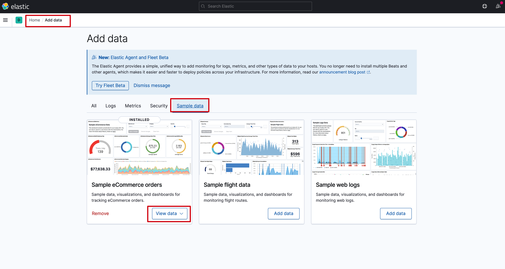
查看数据

配置密码访问
使用基本许可证时，默认情况下禁用Elasticsearch安全功能。由于我测试环境是放在公网上的，所以需要设置下密码访问。相关文档可以参考这里
- 停止kibana和elasticsearch服务
- 将
xpack.security.enabled设置添加到ES_PATH_CONF/elasticsearch.yml文件并将值设置为true - 启动elasticsearch (
./bin/elasticsearch -d) - 执行如下密码设置器，
./bin/elasticsearch-setup-passwords interactive来设置各个组件的密码 - 将elasticsearch.username设置添加到KIB_PATH_CONF/kibana.yml 文件并将值设置给elastic用户：
elasticsearch.username: "elastic" - 创建kibana keystore,
./bin/kibana-keystore create - 在kibana keystore 中添加密码
./bin/kibana-keystore add elasticsearch.password - 重启kibana 服务即可
nohup ./bin/kibana &
然后就可以使用密码登录了：

04 入门：查询和聚合的基础使用
入门：从索引文档开始
- 索引一个文档
PUT /customer/_doc/1
{
"name": "John Doe"
}
为了方便测试，我们使用kibana的dev tool来进行学习测试：
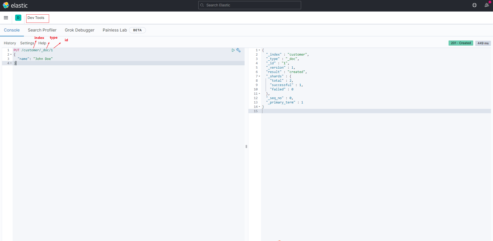
查询刚才插入的文档
学习准备：批量索引文档
ES 还提供了批量操作，比如这里我们可以使用批量操作来插入一些数据，供我们在后面学习使用。
使用批量来批处理文档操作比单独提交请求要快得多，因为它减少了网络往返。
- 下载测试数据
数据是index为bank，accounts.json 下载地址 （如果你无法下载，也可以clone ES的官方仓库 ，然后进入/docs/src/test/resources/accounts.json目录获取）
数据的格式如下
{
"account_number": 0,
"balance": 16623,
"firstname": "Bradshaw",
"lastname": "Mckenzie",
"age": 29,
"gender": "F",
"address": "244 Columbus Place",
"employer": "Euron",
"email": "bradshawmckenzie@euron.com",
"city": "Hobucken",
"state": "CO"
}
- 批量插入数据
将accounts.json拷贝至指定目录，我这里放在/opt/下面,
然后执行
curl -H "Content-Type: application/json" -XPOST "localhost:9200/bank/_bulk?pretty&refresh" --data-binary "@/opt/accounts.json"
- 查看状态
[elasticsearch@VM-0-14-centos root]$ curl "localhost:9200/_cat/indices?v=true" | grep bank
% Total % Received % Xferd Average Speed Time Time Time Current
Dload Upload Total Spent Left Speed
100 1524 100 1524 0 0 119k 0 --:--:-- --:--:-- --:--:-- 124k
yellow open bank yq3eSlAWRMO2Td0Sl769rQ 1 1 1000 0 379.2kb 379.2kb
[elasticsearch@VM-0-14-centos root]$
查询数据
我们通过kibana来进行查询测试。
查询所有
match_all表示查询所有的数据，sort即按照什么字段排序
GET /bank/_search
{
"query": { "match_all": {} },
"sort": [
{ "account_number": "asc" }
]
}
结果

相关字段解释
took– Elasticsearch运行查询所花费的时间（以毫秒为单位）timed_out–搜索请求是否超时_shards- 搜索了多少个碎片，以及成功，失败或跳过了多少个碎片的细目分类。max_score– 找到的最相关文档的分数hits.total.value- 找到了多少个匹配的文档hits.sort- 文档的排序位置（不按相关性得分排序时）hits._score- 文档的相关性得分（使用match_all时不适用）
分页查询(from+size)
本质上就是from和size两个字段
GET /bank/_search
{
"query": { "match_all": {} },
"sort": [
{ "account_number": "asc" }
],
"from": 10,
"size": 10
}
结果

指定字段查询：match
如果要在字段中搜索特定字词，可以使用match; 如下语句将查询address 字段中包含 mill 或者 lane的数据
GET /bank/_search
{
"query": { "match": { "address": "mill lane" } }
}
结果

（由于ES底层是按照分词索引的，所以上述查询结果是address 字段中包含 mill 或者 lane的数据）
查询段落匹配：match_phrase
如果我们希望查询的条件是 address字段中包含 "mill lane"，则可以使用match_phrase
GET /bank/_search
{
"query": { "match_phrase": { "address": "mill lane" } }
}
结果
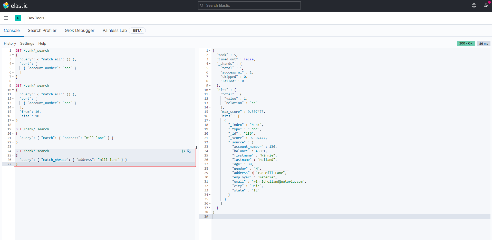
多条件查询: bool
如果要构造更复杂的查询，可以使用bool查询来组合多个查询条件。
例如，以下请求在bank索引中搜索40岁客户的帐户，但不包括居住在爱达荷州（ID）的任何人
GET /bank/_search
{
"query": {
"bool": {
"must": [
{ "match": { "age": "40" } }
],
"must_not": [
{ "match": { "state": "ID" } }
]
}
}
}
结果

must, should, must_not 和 filter 都是bool查询的子句。那么filter和上述query子句有啥区别呢？
查询条件：query or filter
先看下如下查询, 在bool查询的子句中同时具备query/must 和 filter
GET /bank/_search
{
"query": {
"bool": {
"must": [
{
"match": {
"state": "ND"
}
}
],
"filter": [
{
"term": {
"age": "40"
}
},
{
"range": {
"balance": {
"gte": 20000,
"lte": 30000
}
}
}
]
}
}
}
结果

两者都可以写查询条件，而且语法也类似。区别在于，query 上下文的条件是用来给文档打分的，匹配越好 _score 越高；filter 的条件只产生两种结果：符合与不符合，后者被过滤掉。
所以，我们进一步看只包含filter的查询
GET /bank/_search
{
"query": {
"bool": {
"filter": [
{
"term": {
"age": "40"
}
},
{
"range": {
"balance": {
"gte": 20000,
"lte": 30000
}
}
}
]
}
}
}
结果，显然无_score
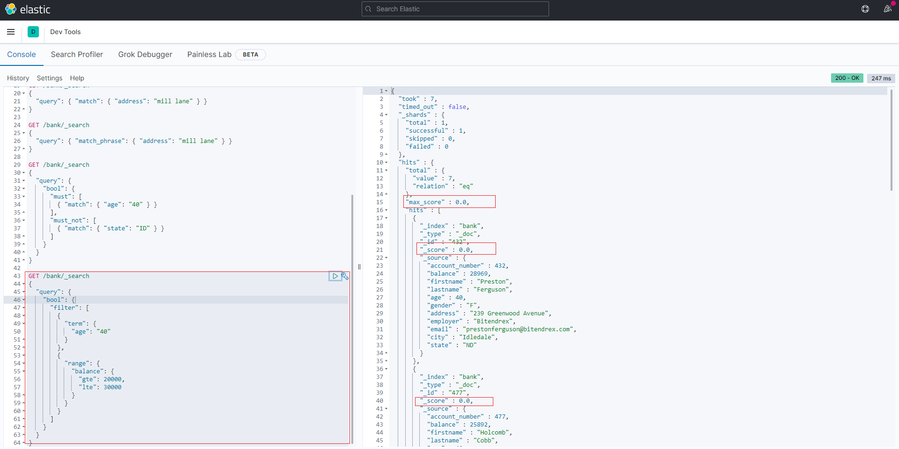
聚合查询：Aggregation
我们知道SQL中有group by，在ES中它叫Aggregation，即聚合运算。
简单聚合
比如我们希望计算出account每个州的统计数量， 使用aggs关键字对state字段聚合，被聚合的字段无需对分词统计，所以使用state.keyword对整个字段统计
GET /bank/_search
{
"size": 0,
"aggs": {
"group_by_state": {
"terms": {
"field": "state.keyword"
}
}
}
}
结果

因为无需返回条件的具体数据, 所以设置size=0，返回hits为空。
doc_count表示bucket中每个州的数据条数。
嵌套聚合
ES还可以处理个聚合条件的嵌套。
比如承接上个例子， 计算每个州的平均结余。涉及到的就是在对state分组的基础上，嵌套计算avg(balance):
GET /bank/_search
{
"size": 0,
"aggs": {
"group_by_state": {
"terms": {
"field": "state.keyword"
},
"aggs": {
"average_balance": {
"avg": {
"field": "balance"
}
}
}
}
}
}
结果
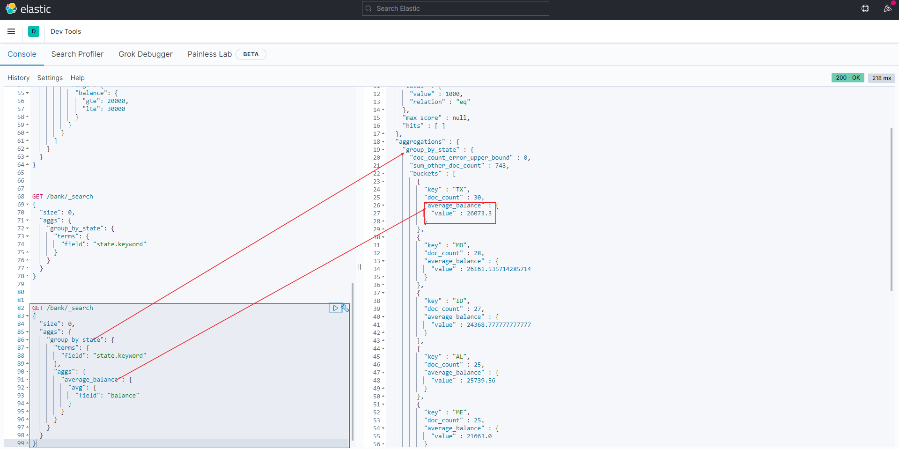
对聚合结果排序
可以通过在aggs中对嵌套聚合的结果进行排序
比如承接上个例子， 对嵌套计算出的avg(balance)，这里是average_balance，进行排序
GET /bank/_search
{
"size": 0,
"aggs": {
"group_by_state": {
"terms": {
"field": "state.keyword",
"order": {
"average_balance": "desc"
}
},
"aggs": {
"average_balance": {
"avg": {
"field": "balance"
}
}
}
}
}
}
结果

05 索引：索引管理详解
索引管理的引入
我们在前文中增加文档时，如下的语句会动态创建一个customer的index：
PUT /customer/_doc/1
{
"name": "John Doe"
}
而这个index实际上已经自动创建了它里面的字段（name）的类型。我们不妨看下它自动创建的mapping：
{
"mappings": {
"_doc": {
"properties": {
"name": {
"type": "text",
"fields": {
"keyword": {
"type": "keyword",
"ignore_above": 256
}
}
}
}
}
}
}
那么如果我们需要对这个建立索引的过程做更多的控制：比如想要确保这个索引有数量适中的主分片，并且在我们索引任何数据之前，分析器和映射已经被建立好。那么就会引入两点：第一个禁止自动创建索引，第二个是手动创建索引。
- 禁止自动创建索引
可以通过在 config/elasticsearch.yml 的每个节点下添加下面的配置：
action.auto_create_index: false
手动创建索引就是接下来文章的内容。
索引的格式
在请求体里面传入设置或类型映射，如下所示：
PUT /my_index
{
"settings": { ... any settings ... },
"mappings": {
"properties": { ... any properties ... }
}
}
-
settings: 用来设置分片,副本等配置信息
-
mappings
: 字段映射，类型等
- properties: 由于type在后续版本中会被Deprecated, 所以无需被type嵌套
索引管理操作
我们通过kibana的devtool来学习索引的管理操作。
创建索引
我们创建一个user 索引test-index-users，其中包含三个属性：name，age, remarks; 存储在一个分片一个副本上。
PUT /test-index-users
{
"settings": {
"number_of_shards": 1,
"number_of_replicas": 1
},
"mappings": {
"properties": {
"name": {
"type": "text",
"fields": {
"keyword": {
"type": "keyword",
"ignore_above": 256
}
}
},
"age": {
"type": "long"
},
"remarks": {
"type": "text"
}
}
}
}
执行结果

- 插入测试数据
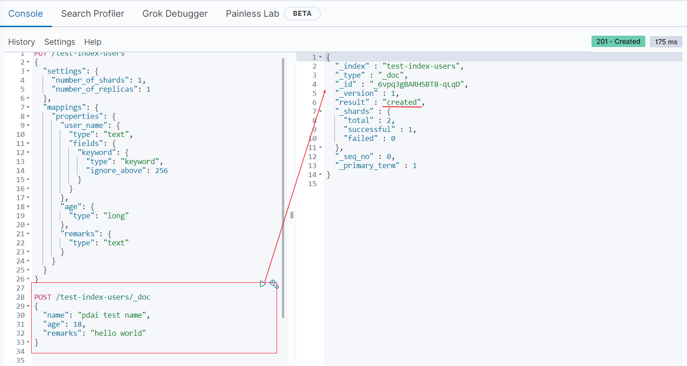
查看数据

- 我们再测试下不匹配的数据类型(age)：
POST /test-index-users/_doc
{
"name": "test user",
"age": "error_age",
"remarks": "hello eeee"
}
你可以看到无法类型不匹配的错误：
修改索引
查看刚才的索引,curl 'localhost:9200/_cat/indices?v' | grep users
yellow open test-index-users LSaIB57XSC6uVtGQHoPYxQ 1 1 1 0 4.4kb 4.4kb
我们注意到刚创建的索引的状态是yellow的，因为我测试的环境是单点环境，无法创建副本，但是在上述number_of_replicas配置中设置了副本数是1； 所以在这个时候我们需要修改索引的配置。
修改副本数量为0
PUT /test-index-users/_settings
{
"settings": {
"number_of_replicas": 0
}
}
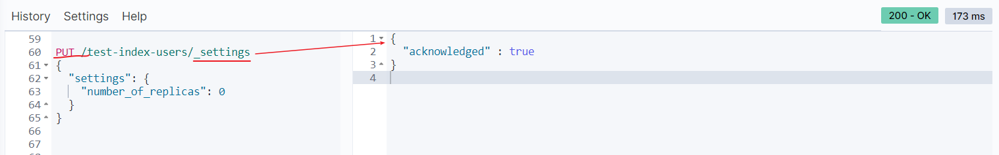
再次查看状态：
green open test-index-users LSaIB57XSC6uVtGQHoPYxQ 1 1 1 0 4.4kb 4.4kb
打开/关闭索引
- 关闭索引
一旦索引被关闭，那么这个索引只能显示元数据信息，不能够进行读写操作。

当关闭以后，再插入数据时：
- 打开索引

打开后又可以重新写数据了
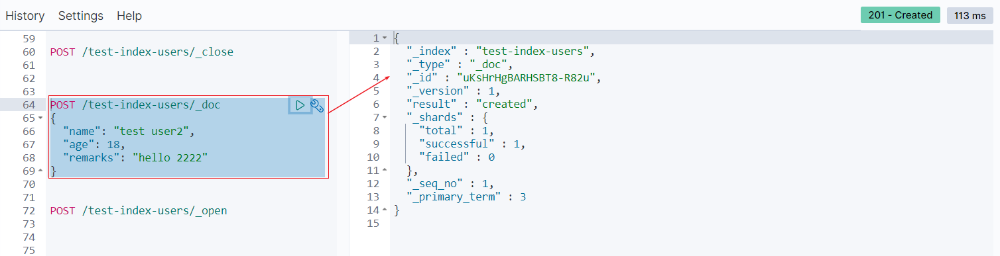
删除索引
最后我们将创建的test-index-users删除。
DELETE /test-index-users

查看索引
由于test-index-users被删除，所以我们看下之前bank的索引的信息
- mapping
GET /bank/_mapping

- settings
GET /bank/_settings

Kibana管理索引
在Kibana如下路径，我们可以查看和管理索引
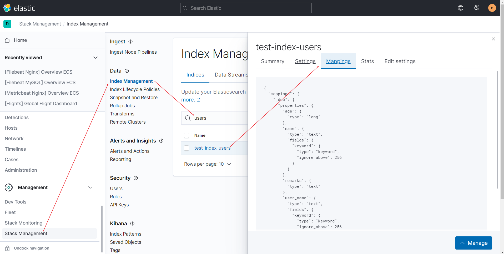
参考文章
https://www.elastic.co/guide/cn/elasticsearch/guide/current/_creating_an_index.html
https://www.elastic.co/guide/en/elasticsearch/reference/current/mapping.html
https://www.elastic.co/guide/en/elasticsearch/reference/current/removal-of-types.html
https://www.cnblogs.com/quanxiaoha/p/11515057.html
06 索引：索引模板(Index Template)详解
索引模板
索引模板是一种告诉Elasticsearch在创建索引时如何配置索引的方法。
- 使用方式
在创建索引之前可以先配置模板，这样在创建索引（手动创建索引或通过对文档建立索引）时，模板设置将用作创建索引的基础。
模板类型
模板有两种类型：索引模板和组件模板。
- 组件模板是可重用的构建块，用于配置映射，设置和别名；它们不会直接应用于一组索引。
- 索引模板可以包含组件模板的集合，也可以直接指定设置，映射和别名。
索引模板中的优先级
- 可组合模板优先于旧模板。如果没有可组合模板匹配给定索引，则旧版模板可能仍匹配并被应用。
- 如果使用显式设置创建索引并且该索引也与索引模板匹配，则创建索引请求中的设置将优先于索引模板及其组件模板中指定的设置。
- 如果新数据流或索引与多个索引模板匹配，则使用优先级最高的索引模板。
内置索引模板
Elasticsearch具有内置索引模板，每个索引模板的优先级为100，适用于以下索引模式：
logs-*-*metrics-*-*synthetics-*-*
所以在涉及内建索引模板时，要避免索引模式冲突。更多可以参考这里
案例
- 首先创建两个索引组件模板：
PUT _component_template/component_template1
{
"template": {
"mappings": {
"properties": {
"@timestamp": {
"type": "date"
}
}
}
}
}
PUT _component_template/runtime_component_template
{
"template": {
"mappings": {
"runtime": {
"day_of_week": {
"type": "keyword",
"script": {
"source": "emit(doc['@timestamp'].value.dayOfWeekEnum.getDisplayName(TextStyle.FULL, Locale.ROOT))"
}
}
}
}
}
}
执行结果如下

- 创建使用组件模板的索引模板
PUT _index_template/template_1
{
"index_patterns": ["bar*"],
"template": {
"settings": {
"number_of_shards": 1
},
"mappings": {
"_source": {
"enabled": true
},
"properties": {
"host_name": {
"type": "keyword"
},
"created_at": {
"type": "date",
"format": "EEE MMM dd HH:mm:ss Z yyyy"
}
}
},
"aliases": {
"mydata": { }
}
},
"priority": 500,
"composed_of": ["component_template1", "runtime_component_template"],
"version": 3,
"_meta": {
"description": "my custom"
}
}
执行结果如下
- 创建一个匹配
bar*的索引bar-test
PUT /bar-test
然后获取mapping
GET /bar-test/_mapping
执行结果如下

模拟多组件模板
由于模板不仅可以由多个组件模板组成，还可以由索引模板自身组成；那么最终的索引设置将是什么呢？ElasticSearch设计者考虑到这个，提供了API进行模拟组合后的模板的配置。
模拟某个索引结果
比如上面的template_1, 我们不用创建bar*的索引(这里模拟bar-pdai-test)，也可以模拟计算出索引的配置：
POST /_index_template/_simulate_index/bar-pdai-test
执行结果如下

模拟组件模板结果
当然，由于template_1模板是由两个组件模板组合的，我们也可以模拟出template_1被组合后的索引配置：
POST /_index_template/_simulate/template_1
执行结果如下：
{
"template" : {
"settings" : {
"index" : {
"number_of_shards" : "1"
}
},
"mappings" : {
"runtime" : {
"day_of_week" : {
"type" : "keyword",
"script" : {
"source" : "emit(doc['@timestamp'].value.dayOfWeekEnum.getDisplayName(TextStyle.FULL, Locale.ROOT))",
"lang" : "painless"
}
}
},
"properties" : {
"@timestamp" : {
"type" : "date"
},
"created_at" : {
"type" : "date",
"format" : "EEE MMM dd HH:mm:ss Z yyyy"
},
"host_name" : {
"type" : "keyword"
}
}
},
"aliases" : {
"mydata" : { }
}
},
"overlapping" : [ ]
}
模拟组件模板和自身模板结合后的结果
- 新建两个模板
PUT /_component_template/ct1
{
"template": {
"settings": {
"index.number_of_shards": 2
}
}
}
PUT /_component_template/ct2
{
"template": {
"settings": {
"index.number_of_replicas": 0
},
"mappings": {
"properties": {
"@timestamp": {
"type": "date"
}
}
}
}
}
模拟在两个组件模板的基础上，添加自身模板的配置
POST /_index_template/_simulate
{
"index_patterns": ["my*"],
"template": {
"settings" : {
"index.number_of_shards" : 3
}
},
"composed_of": ["ct1", "ct2"]
}
执行的结果如下
{
"template" : {
"settings" : {
"index" : {
"number_of_shards" : "3",
"number_of_replicas" : "0"
}
},
"mappings" : {
"properties" : {
"@timestamp" : {
"type" : "date"
}
}
},
"aliases" : { }
},
"overlapping" : [ ]
}
参考文章
https://www.elastic.co/guide/en/elasticsearch/reference/current/index-templates.html
https://www.elastic.co/guide/en/elasticsearch/reference/current/simulate-multi-component-templates.html
07 查询：DSL查询之复合查询详解
复合查询引入
在(前文-多条件查询-bool)中，我们使用bool查询来组合多个查询条件。
比如之前介绍的语句
GET /bank/_search
{
"query": {
"bool": {
"must": [
{ "match": { "age": "40" } }
],
"must_not": [
{ "match": { "state": "ID" } }
]
}
}
}
这种查询就是本文要介绍的复合查询，并且bool查询只是复合查询一种。
bool query(布尔查询)
通过布尔逻辑将较小的查询组合成较大的查询。
概念
Bool查询语法有以下特点
- 子查询可以任意顺序出现
- 可以嵌套多个查询，包括bool查询
- 如果bool查询中没有must条件，should中必须至少满足一条才会返回结果。
bool查询包含四种操作符，分别是must,should,must_not,filter。他们均是一种数组，数组里面是对应的判断条件。
must： 必须匹配。贡献算分must_not：过滤子句，必须不能匹配，但不贡献算分should： 选择性匹配，至少满足一条。贡献算分filter： 过滤子句，必须匹配，但不贡献算分
一些例子
看下官方举例
- 例子1
POST _search
{
"query": {
"bool" : {
"must" : {
"term" : { "user.id" : "kimchy" }
},
"filter": {
"term" : { "tags" : "production" }
},
"must_not" : {
"range" : {
"age" : { "gte" : 10, "lte" : 20 }
}
},
"should" : [
{ "term" : { "tags" : "env1" } },
{ "term" : { "tags" : "deployed" } }
],
"minimum_should_match" : 1,
"boost" : 1.0
}
}
}
在filter元素下指定的查询对评分没有影响 , 评分返回为0。分数仅受已指定查询的影响。
- 例子2
GET _search
{
"query": {
"bool": {
"filter": {
"term": {
"status": "active"
}
}
}
}
}
这个例子查询查询为所有文档分配0分，因为没有指定评分查询。
- 例子3
GET _search
{
"query": {
"bool": {
"must": {
"match_all": {}
},
"filter": {
"term": {
"status": "active"
}
}
}
}
}
此bool查询具有match_all查询，该查询为所有文档指定1.0分。
- 例子4
GET /_search
{
"query": {
"bool": {
"should": [
{ "match": { "name.first": { "query": "shay", "_name": "first" } } },
{ "match": { "name.last": { "query": "banon", "_name": "last" } } }
],
"filter": {
"terms": {
"name.last": [ "banon", "kimchy" ],
"_name": "test"
}
}
}
}
}
每个query条件都可以有一个_name属性，用来追踪搜索出的数据到底match了哪个条件。
boosting query(提高查询)
不同于bool查询，bool查询中只要一个子查询条件不匹配那么搜索的数据就不会出现。而boosting query则是降低显示的权重/优先级（即score)。
概念
比如搜索逻辑是 name = 'apple' and type ='fruit'，对于只满足部分条件的数据，不是不显示，而是降低显示的优先级（即score)
例子
首先创建数据
POST /test-dsl-boosting/_bulk
{ "index": { "_id": 1 }}
{ "content":"Apple Mac" }
{ "index": { "_id": 2 }}
{ "content":"Apple Fruit" }
{ "index": { "_id": 3 }}
{ "content":"Apple employee like Apple Pie and Apple Juice" }
对匹配pie的做降级显示处理
GET /test-dsl-boosting/_search
{
"query": {
"boosting": {
"positive": {
"term": {
"content": "apple"
}
},
"negative": {
"term": {
"content": "pie"
}
},
"negative_boost": 0.5
}
}
}
执行结果如下
constant_score（固定分数查询）
查询某个条件时，固定的返回指定的score；显然当不需要计算score时，只需要filter条件即可，因为filter context忽略score。
例子
首先创建数据
POST /test-dsl-constant/_bulk
{ "index": { "_id": 1 }}
{ "content":"Apple Mac" }
{ "index": { "_id": 2 }}
{ "content":"Apple Fruit" }
查询apple
GET /test-dsl-constant/_search
{
"query": {
"constant_score": {
"filter": {
"term": { "content": "apple" }
},
"boost": 1.2
}
}
}
执行结果如下
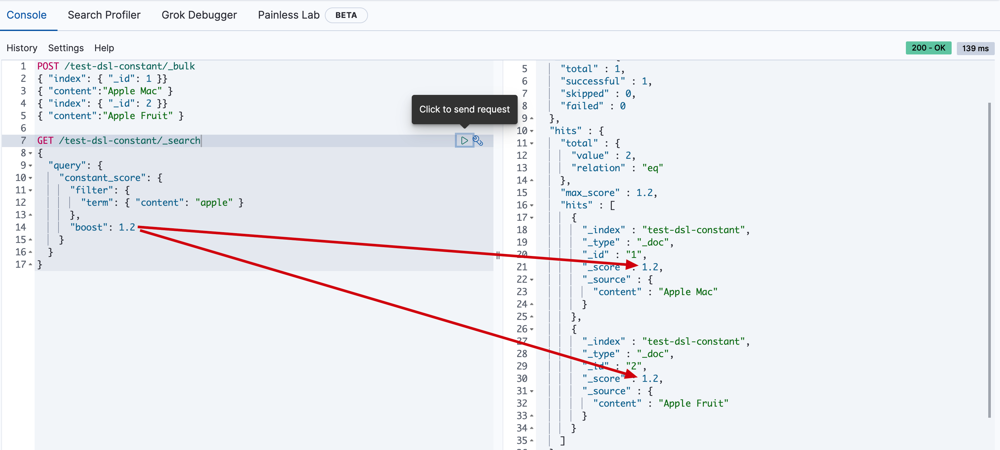
dis_max(最佳匹配查询）
分离最大化查询（Disjunction Max Query）指的是： 将任何与任一查询匹配的文档作为结果返回，但只将最佳匹配的评分作为查询的评分结果返回 。
例子
假设有个网站允许用户搜索博客的内容，以下面两篇博客内容文档为例：
POST /test-dsl-dis-max/_bulk
{ "index": { "_id": 1 }}
{"title": "Quick brown rabbits","body": "Brown rabbits are commonly seen."}
{ "index": { "_id": 2 }}
{"title": "Keeping pets healthy","body": "My quick brown fox eats rabbits on a regular basis."}
用户输入词组 “Brown fox” 然后点击搜索按钮。事先，我们并不知道用户的搜索项是会在 title 还是在 body 字段中被找到，但是，用户很有可能是想搜索相关的词组。用肉眼判断，文档 2 的匹配度更高，因为它同时包括要查找的两个词：
现在运行以下 bool 查询：
GET /test-dsl-dis-max/_search
{
"query": {
"bool": {
"should": [
{ "match": { "title": "Brown fox" }},
{ "match": { "body": "Brown fox" }}
]
}
}
}

为了理解导致这样的原因，需要看下如何计算评分的
- should 条件的计算分数
GET /test-dsl-dis-max/_search
{
"query": {
"bool": {
"should": [
{ "match": { "title": "Brown fox" }},
{ "match": { "body": "Brown fox" }}
]
}
}
}
要计算上述分数，首先要计算match的分数
- 第一个match 中
brown的分数
doc 1 分数 = 0.6931471
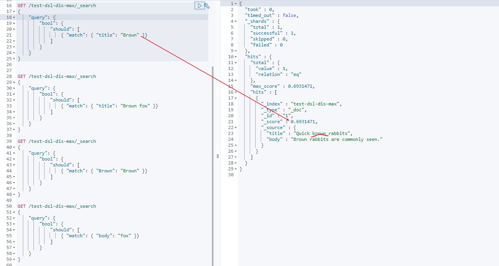
- title中没有fox，所以第一个match 中
brown fox 的分数 = brown分数 + 0 = 0.6931471
doc 1 分数 = 0.6931471 + 0 = 0.6931471

- 第二个 match 中
brown分数
doc 1 分数 = 0.21110919
doc 2 分数 = 0.160443

- 第二个 match 中
fox分数
doc 1 分数 = 0
doc 2 分数 = 0.60996956

- 所以第二个 match 中
brown fox分数 = brown分数 + fox分数
doc 1 分数 = 0.21110919 + 0 = 0.21110919
doc 2 分数 = 0.160443 + 0.60996956 = 0.77041256

- 所以整个语句分数，
should分数 = 第一个match + 第二个match分数
doc 1 分数 = 0.6931471 + 0.21110919 = 0.90425634
doc 2 分数 = 0 + 0.77041256 = 0.77041256
- 引入了dis_max
不使用 bool 查询，可以使用 dis_max 即分离 最大化查询（Disjunction Max Query） 。分离（Disjunction）的意思是 或（or） ，这与可以把结合（conjunction）理解成 与（and） 相对应。分离最大化查询（Disjunction Max Query）指的是： 将任何与任一查询匹配的文档作为结果返回，但只将最佳匹配的评分作为查询的评分结果返回 ：
GET /test-dsl-dis-max/_search
{
"query": {
"dis_max": {
"queries": [
{ "match": { "title": "Brown fox" }},
{ "match": { "body": "Brown fox" }}
],
"tie_breaker": 0
}
}
}

0.77041256怎么来的呢？ 下文给你解释它如何计算出来的。
- dis_max 条件的计算分数
分数 = 第一个匹配条件分数 + tie_breaker * 第二个匹配的条件的分数 ...
GET /test-dsl-dis-max/_search
{
"query": {
"dis_max": {
"queries": [
{ "match": { "title": "Brown fox" }},
{ "match": { "body": "Brown fox" }}
],
"tie_breaker": 0
}
}
}
doc 1 分数 = 0.6931471 + 0.21110919 * 0 = 0.6931471
doc 2 分数 = 0.77041256 = 0.77041256
这样你就能理解通过dis_max将doc 2 置前了， 当然这里如果缺省tie_breaker字段的话默认就是0，你还可以设置它的比例（在0到1之间）来控制排名。（显然值为1时和should查询是一致的）
function_score(函数查询）
简而言之就是用自定义function的方式来计算_score。
可以ES有哪些自定义function呢？
script_score使用自定义的脚本来完全控制分值计算逻辑。如果你需要以上预定义函数之外的功能，可以根据需要通过脚本进行实现。weight对每份文档适用一个简单的提升，且该提升不会被归约：当weight为2时，结果为2 * _score。random_score使用一致性随机分值计算来对每个用户采用不同的结果排序方式，对相同用户仍然使用相同的排序方式。field_value_factor使用文档中某个字段的值来改变_score，比如将受欢迎程度或者投票数量考虑在内。衰减函数(Decay Function)-linear，exp，gauss
例子
以最简单的random_score 为例
GET /_search
{
"query": {
"function_score": {
"query": { "match_all": {} },
"boost": "5",
"random_score": {},
"boost_mode": "multiply"
}
}
}
进一步的，它还可以使用上述function的组合(functions)
GET /_search
{
"query": {
"function_score": {
"query": { "match_all": {} },
"boost": "5",
"functions": [
{
"filter": { "match": { "test": "bar" } },
"random_score": {},
"weight": 23
},
{
"filter": { "match": { "test": "cat" } },
"weight": 42
}
],
"max_boost": 42,
"score_mode": "max",
"boost_mode": "multiply",
"min_score": 42
}
}
}
script_score 可以使用如下方式
GET /_search
{
"query": {
"function_score": {
"query": {
"match": { "message": "elasticsearch" }
},
"script_score": {
"script": {
"source": "Math.log(2 + doc['my-int'].value)"
}
}
}
}
}
更多相关内容，可以参考官方文档 PS: 形成体系化认知以后，具体用的时候查询下即可。
参考文章
https://www.elastic.co/guide/en/elasticsearch/reference/current/compound-queries.html
https://www.elastic.co/guide/en/elasticsearch/reference/current/query-dsl-bool-query.html
https://www.elastic.co/guide/en/elasticsearch/reference/7.12/query-dsl-function-score-query.html
08 查询：DSL查询之全文搜索详解
写在前面:谈谈如何从官网学习
提示
很多读者在看官方文档学习时存在一个误区，以DSL中full text查询为例，其实内容是非常多的， 没有取舍/没重点去阅读， 要么需要花很多时间，要么头脑一片浆糊。所以这里重点谈谈我的理解。@pdai
一些理解：
- 第一点：全局观，即我们现在学习内容在整个体系的哪个位置？
如下图，可以很方便的帮助你构筑这种体系

- 第二点： 分类别，从上层理解，而不是本身
比如Full text Query中，我们只需要把如下的那么多点分为3大类，你的体系能力会大大提升
- 第三点： 知识点还是API？ API类型的是可以查询的，只需要知道大致有哪些功能就可以了。
Match类型
第一类：match 类型
match 查询的步骤
在(指定字段查询)中我们已经介绍了match查询。
- 准备一些数据
这里我们准备一些数据，通过实例看match 查询的步骤
PUT /test-dsl-match
{ "settings": { "number_of_shards": 1 }}
POST /test-dsl-match/_bulk
{ "index": { "_id": 1 }}
{ "title": "The quick brown fox" }
{ "index": { "_id": 2 }}
{ "title": "The quick brown fox jumps over the lazy dog" }
{ "index": { "_id": 3 }}
{ "title": "The quick brown fox jumps over the quick dog" }
{ "index": { "_id": 4 }}
{ "title": "Brown fox brown dog" }
- 查询数据
GET /test-dsl-match/_search
{
"query": {
"match": {
"title": "QUICK!"
}
}
}
Elasticsearch 执行上面这个 match 查询的步骤是：
- 检查字段类型 。
标题 title 字段是一个 string 类型（ analyzed ）已分析的全文字段，这意味着查询字符串本身也应该被分析。
- 分析查询字符串 。
将查询的字符串 QUICK! 传入标准分析器中，输出的结果是单个项 quick 。因为只有一个单词项，所以 match 查询执行的是单个底层 term 查询。
- 查找匹配文档 。
用 term 查询在倒排索引中查找 quick 然后获取一组包含该项的文档，本例的结果是文档：1、2 和 3 。
- 为每个文档评分 。
用 term 查询计算每个文档相关度评分 _score ，这是种将词频（term frequency，即词 quick 在相关文档的 title 字段中出现的频率）和反向文档频率（inverse document frequency，即词 quick 在所有文档的 title 字段中出现的频率），以及字段的长度（即字段越短相关度越高）相结合的计算方式。
- 验证结果
match多个词深入
我们在上文中复合查询中已经使用了match多个词，比如“Quick pets”； 这里我们通过例子带你更深入理解match多个词
- match多个词的本质
查询多个词"BROWN DOG!"
GET /test-dsl-match/_search
{
"query": {
"match": {
"title": "BROWN DOG"
}
}
}

因为 match 查询必须查找两个词（ ["brown","dog"] ），它在内部实际上先执行两次 term 查询，然后将两次查询的结果合并作为最终结果输出。为了做到这点，它将两个 term 查询包入一个 bool 查询中，
所以上述查询的结果，和如下语句查询结果是等同的
GET /test-dsl-match/_search
{
"query": {
"bool": {
"should": [
{
"term": {
"title": "brown"
}
},
{
"term": {
"title": "dog"
}
}
]
}
}
}
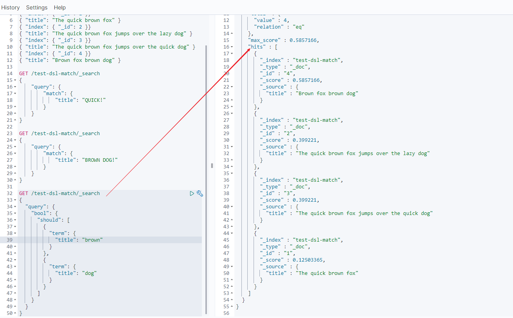
- match多个词的逻辑
上面等同于should（任意一个满足），是因为 match还有一个operator参数，默认是or, 所以对应的是should。
所以上述查询也等同于
GET /test-dsl-match/_search
{
"query": {
"match": {
"title": {
"query": "BROWN DOG",
"operator": "or"
}
}
}
}
那么我们如果是需要and操作呢，即同时满足呢？
GET /test-dsl-match/_search
{
"query": {
"match": {
"title": {
"query": "BROWN DOG",
"operator": "and"
}
}
}
}
等同于
GET /test-dsl-match/_search
{
"query": {
"bool": {
"must": [
{
"term": {
"title": "brown"
}
},
{
"term": {
"title": "dog"
}
}
]
}
}
}

控制match的匹配精度
如果用户给定 3 个查询词，想查找只包含其中 2 个的文档，该如何处理？将 operator 操作符参数设置成 and 或者 or 都是不合适的。
match 查询支持 minimum_should_match 最小匹配参数，这让我们可以指定必须匹配的词项数用来表示一个文档是否相关。我们可以将其设置为某个具体数字，更常用的做法是将其设置为一个百分数，因为我们无法控制用户搜索时输入的单词数量：
GET /test-dsl-match/_search
{
"query": {
"match": {
"title": {
"query": "quick brown dog",
"minimum_should_match": "75%"
}
}
}
}
当给定百分比的时候， minimum_should_match 会做合适的事情：在之前三词项的示例中， 75% 会自动被截断成 66.6% ，即三个里面两个词。无论这个值设置成什么，至少包含一个词项的文档才会被认为是匹配的。

当然也等同于
GET /test-dsl-match/_search
{
"query": {
"bool": {
"should": [
{ "match": { "title": "quick" }},
{ "match": { "title": "brown" }},
{ "match": { "title": "dog" }}
],
"minimum_should_match": 2
}
}
}

其它match类型
- match_pharse
match_phrase在前文中我们已经有了解，我们再看下另外一个例子。
GET /test-dsl-match/_search
{
"query": {
"match_phrase": {
"title": {
"query": "quick brown"
}
}
}
}
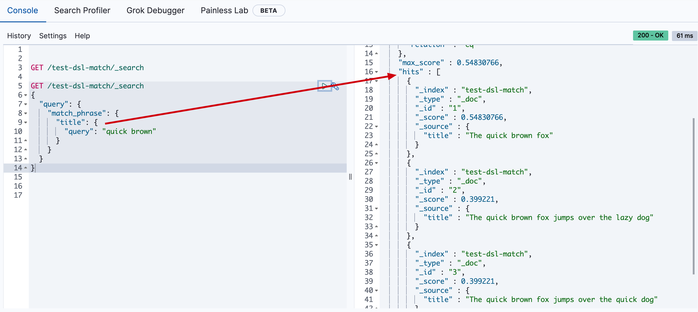
很多人对它仍然有误解的，比如如下例子：
GET /test-dsl-match/_search
{
"query": {
"match_phrase": {
"title": {
"query": "quick brown f"
}
}
}
}
这样的查询是查不出任何数据的，因为前文中我们知道了match本质上是对term组合，match_phrase本质是连续的term的查询，所以f并不是一个分词，不满足term查询，所以最终查不出任何内容了。

- match_pharse_prefix
那有没有可以查询出quick brown f的方式呢？ELasticSearch在match_phrase基础上提供了一种可以查最后一个词项是前缀的方法，这样就可以查询quick brown f了
GET /test-dsl-match/_search
{
"query": {
"match_phrase_prefix": {
"title": {
"query": "quick brown f"
}
}
}
}

(ps: prefix的意思不是整个text的开始匹配，而是最后一个词项满足term的prefix查询而已)
- match_bool_prefix
除了match_phrase_prefix，ElasticSearch还提供了match_bool_prefix查询
GET /test-dsl-match/_search
{
"query": {
"match_bool_prefix": {
"title": {
"query": "quick brown f"
}
}
}
}

它们两种方式有啥区别呢？match_bool_prefix本质上可以转换为：
GET /test-dsl-match/_search
{
"query": {
"bool" : {
"should": [
{ "term": { "title": "quick" }},
{ "term": { "title": "brown" }},
{ "prefix": { "title": "f"}}
]
}
}
}
所以这样你就能理解，match_bool_prefix查询中的quick,brown,f是无序的。
- multi_match
如果我们期望一次对多个字段查询，怎么办呢？ElasticSearch提供了multi_match查询的方式
{
"query": {
"multi_match" : {
"query": "Will Smith",
"fields": [ "title", "*_name" ]
}
}
}
*表示前缀匹配字段。
query string类型
第二类：query string 类型
query_string
此查询使用语法根据运算符（例如AND或）来解析和拆分提供的查询字符串NOT。然后查询在返回匹配的文档之前独立分析每个拆分的文本。
可以使用该query_string查询创建一个复杂的搜索，其中包括通配符，跨多个字段的搜索等等。尽管用途广泛，但查询是严格的，如果查询字符串包含任何无效语法，则返回错误。
例如：
GET /test-dsl-match/_search
{
"query": {
"query_string": {
"query": "(lazy dog) OR (brown dog)",
"default_field": "title"
}
}
}
这里查询结果，你需要理解本质上查询这四个分词（term）or的结果而已，所以doc 3和4也在其中

对构筑知识体系已经够了，但是它其实还有很多参数和用法，更多请参考官网
query_string_simple
该查询使用一种简单的语法来解析提供的查询字符串并将其拆分为基于特殊运算符的术语。然后查询在返回匹配的文档之前独立分析每个术语。
尽管其语法比query_string查询更受限制 ，但simple_query_string 查询不会针对无效语法返回错误。而是，它将忽略查询字符串的任何无效部分。
举例：
GET /test-dsl-match/_search
{
"query": {
"simple_query_string" : {
"query": "\"over the\" + (lazy | quick) + dog",
"fields": ["title"],
"default_operator": "and"
}
}
}
更多请参考官网
Interval类型
第三类：interval类型
Intervals是时间间隔的意思，本质上将多个规则按照顺序匹配。
比如：
GET /test-dsl-match/_search
{
"query": {
"intervals" : {
"title" : {
"all_of" : {
"ordered" : true,
"intervals" : [
{
"match" : {
"query" : "quick",
"max_gaps" : 0,
"ordered" : true
}
},
{
"any_of" : {
"intervals" : [
{ "match" : { "query" : "jump over" } },
{ "match" : { "query" : "quick dog" } }
]
}
}
]
}
}
}
}
}
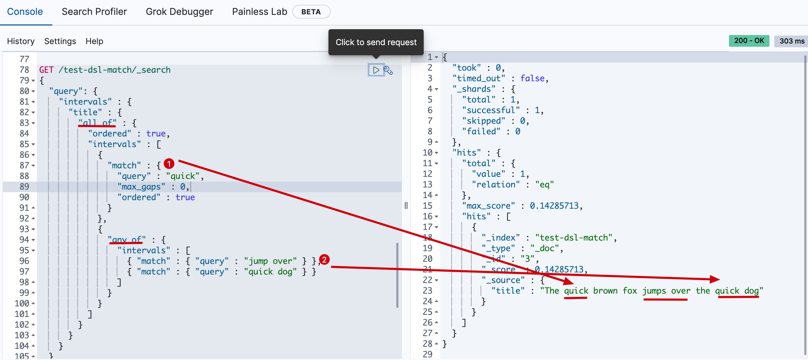
因为interval之间是可以组合的，所以它可以表现的很复杂。更多请参考官网
参考文章
https://www.elastic.co/guide/en/elasticsearch/reference/current/full-text-queries.html#full-text-queries
https://www.elastic.co/guide/cn/elasticsearch/guide/current/match-multi-word.html
09 查询：DSL查询之Term详解
Term查询引入
如前文所述，查询分基于文本查询和基于词项的查询:
本文主要讲基于词项的查询。
Term查询
很多比较常用，也不难，就是需要结合实例理解。这里综合官方文档的内容，我设计一个测试场景的数据，以覆盖所有例子。@pdai
准备数据
PUT /test-dsl-term-level
{
"mappings": {
"properties": {
"name": {
"type": "keyword"
},
"programming_languages": {
"type": "keyword"
},
"required_matches": {
"type": "long"
}
}
}
}
POST /test-dsl-term-level/_bulk
{ "index": { "_id": 1 }}
{"name": "Jane Smith", "programming_languages": [ "c++", "java" ], "required_matches": 2}
{ "index": { "_id": 2 }}
{"name": "Jason Response", "programming_languages": [ "java", "php" ], "required_matches": 2}
{ "index": { "_id": 3 }}
{"name": "Dave Pdai", "programming_languages": [ "java", "c++", "php" ], "required_matches": 3, "remarks": "hello world"}
字段是否存在:exist
由于多种原因，文档字段的索引值可能不存在：
- 源JSON中的字段是null或[]
- 该字段已"index" : false在映射中设置
- 字段值的长度超出ignore_above了映射中的设置
- 字段值格式错误，并且ignore_malformed已在映射中定义
所以exist表示查找是否存在字段。

id查询:ids
ids 即对id查找
GET /test-dsl-term-level/_search
{
"query": {
"ids": {
"values": [3, 1]
}
}
}
前缀:prefix
通过前缀查找某个字段
GET /test-dsl-term-level/_search
{
"query": {
"prefix": {
"name": {
"value": "Jan"
}
}
}
}

分词匹配:term
前文最常见的根据分词查询
GET /test-dsl-term-level/_search
{
"query": {
"term": {
"programming_languages": "php"
}
}
}

多个分词匹配:terms
按照读个分词term匹配，它们是or的关系
GET /test-dsl-term-level/_search
{
"query": {
"terms": {
"programming_languages": ["php","c++"]
}
}
}
按某个数字字段分词匹配:term set
设计这种方式查询的初衷是用文档中的数字字段动态匹配查询满足term的个数
GET /test-dsl-term-level/_search
{
"query": {
"terms_set": {
"programming_languages": {
"terms": [ "java", "php" ],
"minimum_should_match_field": "required_matches"
}
}
}
}

通配符:wildcard
通配符匹配，比如*
GET /test-dsl-term-level/_search
{
"query": {
"wildcard": {
"name": {
"value": "D*ai",
"boost": 1.0,
"rewrite": "constant_score"
}
}
}
}

范围:range
常常被用在数字或者日期范围的查询
GET /test-dsl-term-level/_search
{
"query": {
"range": {
"required_matches": {
"gte": 3,
"lte": 4
}
}
}
}

正则:regexp
通过[正则表达式]查询
以"Jan"开头的name字段
GET /test-dsl-term-level/_search
{
"query": {
"regexp": {
"name": {
"value": "Ja.*",
"case_insensitive": true
}
}
}
}

模糊匹配:fuzzy
官方文档对模糊匹配：编辑距离是将一个术语转换为另一个术语所需的一个字符更改的次数。这些更改可以包括：
- 更改字符（box→ fox）
- 删除字符（black→ lack）
- 插入字符（sic→ sick）
- 转置两个相邻字符（act→ cat）
GET /test-dsl-term-level/_search
{
"query": {
"fuzzy": {
"remarks": {
"value": "hell"
}
}
}
}

参考文章
https://www.elastic.co/guide/en/elasticsearch/reference/current/term-level-queries.html
10 聚合：聚合查询之Bucket聚合详解
聚合的引入
我们在SQL结果中常有：
SELECT COUNT(color)
FROM table
GROUP BY color
ElasticSearch中桶在概念上类似于 SQL 的分组（GROUP BY），而指标则类似于 COUNT() 、 SUM() 、 MAX() 等统计方法。
进而引入了两个概念：
- 桶（Buckets） 满足特定条件的文档的集合
- 指标（Metrics） 对桶内的文档进行统计计算
所以ElasticSearch包含3种聚合（Aggregation)方式
-
桶聚合（Bucket Aggregration) - 本文中详解
-
指标聚合（Metric Aggregration) - 下文中讲解
-
管道聚合（Pipline Aggregration)
- 再下一篇讲解
- 聚合管道化，简单而言就是上一个聚合的结果成为下个聚合的输入；
（PS:指标聚合和桶聚合很多情况下是组合在一起使用的，其实你也可以看到，桶聚合本质上是一种特殊的指标聚合，它的聚合指标就是数据的条数count)
如何理解Bucket聚合
如果你直接去看文档，大概有几十种：

要么你需要花大量时间学习，要么你已经迷失或者即将迷失在知识点中...
所以你需要稍微站在设计者的角度思考下，不难发现设计上大概分为三类（当然有些是第二和第三类的融合）

（图中并没有全部列出内容，因为图要表达的意图我觉得还是比较清楚的，这就够了；有了这种思虑和认知，会大大提升你的认知效率。）
按知识点学习聚合
我们先按照官方权威指南中的一个例子，学习Aggregation中的知识点。
准备数据
让我们先看一个例子。我们将会创建一些对汽车经销商有用的聚合，数据是关于汽车交易的信息：车型、制造商、售价、何时被出售等。
首先我们批量索引一些数据：
POST /test-agg-cars/_bulk
{ "index": {}}
{ "price" : 10000, "color" : "red", "make" : "honda", "sold" : "2014-10-28" }
{ "index": {}}
{ "price" : 20000, "color" : "red", "make" : "honda", "sold" : "2014-11-05" }
{ "index": {}}
{ "price" : 30000, "color" : "green", "make" : "ford", "sold" : "2014-05-18" }
{ "index": {}}
{ "price" : 15000, "color" : "blue", "make" : "toyota", "sold" : "2014-07-02" }
{ "index": {}}
{ "price" : 12000, "color" : "green", "make" : "toyota", "sold" : "2014-08-19" }
{ "index": {}}
{ "price" : 20000, "color" : "red", "make" : "honda", "sold" : "2014-11-05" }
{ "index": {}}
{ "price" : 80000, "color" : "red", "make" : "bmw", "sold" : "2014-01-01" }
{ "index": {}}
{ "price" : 25000, "color" : "blue", "make" : "ford", "sold" : "2014-02-12" }
标准的聚合
有了数据，开始构建我们的第一个聚合。汽车经销商可能会想知道哪个颜色的汽车销量最好，用聚合可以轻易得到结果，用 terms 桶操作：
GET /test-agg-cars/_search
{
"size" : 0,
"aggs" : {
"popular_colors" : {
"terms" : {
"field" : "color.keyword"
}
}
}
}
- 聚合操作被置于顶层参数 aggs 之下（如果你愿意，完整形式 aggregations 同样有效）。
- 然后，可以为聚合指定一个我们想要名称，本例中是： popular_colors 。
- 最后，定义单个桶的类型 terms 。
结果如下：

- 因为我们设置了 size 参数，所以不会有 hits 搜索结果返回。
- popular_colors 聚合是作为 aggregations 字段的一部分被返回的。
- 每个桶的 key 都与 color 字段里找到的唯一词对应。它总会包含 doc_count 字段，告诉我们包含该词项的文档数量。
- 每个桶的数量代表该颜色的文档数量。
多个聚合
同时计算两种桶的结果：对color和对make。
GET /test-agg-cars/_search
{
"size" : 0,
"aggs" : {
"popular_colors" : {
"terms" : {
"field" : "color.keyword"
}
},
"make_by" : {
"terms" : {
"field" : "make.keyword"
}
}
}
}
结果如下：

聚合的嵌套
这个新的聚合层让我们可以将 avg 度量嵌套置于 terms 桶内。实际上，这就为每个颜色生成了平均价格。
GET /test-agg-cars/_search
{
"size" : 0,
"aggs": {
"colors": {
"terms": {
"field": "color.keyword"
},
"aggs": {
"avg_price": {
"avg": {
"field": "price"
}
}
}
}
}
}
结果如下：

正如 颜色 的例子，我们需要给度量起一个名字（ avg_price ）这样可以稍后根据名字获取它的值。最后，我们指定度量本身（ avg ）以及我们想要计算平均值的字段（ price ）
动态脚本的聚合
这个例子告诉你，ElasticSearch还支持一些基于脚本（生成运行时的字段）的复杂的动态聚合。
GET /test-agg-cars/_search
{
"runtime_mappings": {
"make.length": {
"type": "long",
"script": "emit(doc['make.keyword'].value.length())"
}
},
"size" : 0,
"aggs": {
"make_length": {
"histogram": {
"interval": 1,
"field": "make.length"
}
}
}
}
结果如下：

histogram可以参考后文内容。
按分类学习Bucket聚合
我们在具体学习时，也无需学习每一个点，基于上面图的认知，我们只需用20%的时间学习最为常用的80%功能即可，其它查查文档而已。@pdai
前置条件的过滤：filter
在当前文档集上下文中定义与指定过滤器(Filter)匹配的所有文档的单个存储桶。通常，这将用于将当前聚合上下文缩小到一组特定的文档。
GET /test-agg-cars/_search
{
"size": 0,
"aggs": {
"make_by": {
"filter": { "term": { "type": "honda" } },
"aggs": {
"avg_price": { "avg": { "field": "price" } }
}
}
}
}
结果如下：

对filter进行分组聚合：filters
设计一个新的例子, 日志系统中，每条日志都是在文本中，包含warning/info等信息。
PUT /test-agg-logs/_bulk?refresh
{ "index" : { "_id" : 1 } }
{ "body" : "warning: page could not be rendered" }
{ "index" : { "_id" : 2 } }
{ "body" : "authentication error" }
{ "index" : { "_id" : 3 } }
{ "body" : "warning: connection timed out" }
{ "index" : { "_id" : 4 } }
{ "body" : "info: hello pdai" }
我们需要对包含不同日志类型的日志进行分组，这就需要filters:
GET /test-agg-logs/_search
{
"size": 0,
"aggs" : {
"messages" : {
"filters" : {
"other_bucket_key": "other_messages",
"filters" : {
"infos" : { "match" : { "body" : "info" }},
"warnings" : { "match" : { "body" : "warning" }}
}
}
}
}
}
结果如下：
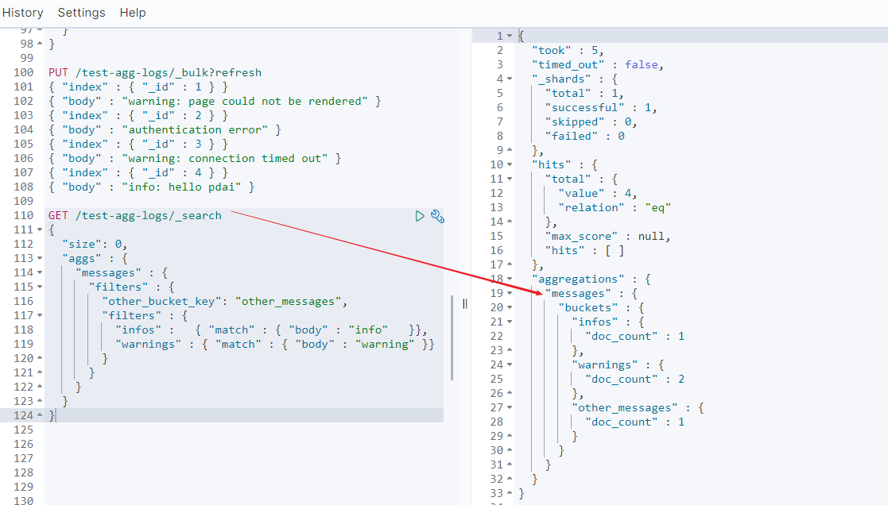
对number类型聚合：Range
基于多桶值源的聚合，使用户能够定义一组范围-每个范围代表一个桶。在聚合过程中，将从每个存储区范围中检查从每个文档中提取的值，并“存储”相关/匹配的文档。请注意，此聚合包括from值，但不包括to每个范围的值。
GET /test-agg-cars/_search
{
"size": 0,
"aggs": {
"price_ranges": {
"range": {
"field": "price",
"ranges": [
{ "to": 20000 },
{ "from": 20000, "to": 40000 },
{ "from": 40000 }
]
}
}
}
}
结果如下：

对IP类型聚合：IP Range
专用于IP值的范围聚合。
GET /ip_addresses/_search
{
"size": 10,
"aggs": {
"ip_ranges": {
"ip_range": {
"field": "ip",
"ranges": [
{ "to": "10.0.0.5" },
{ "from": "10.0.0.5" }
]
}
}
}
}
返回
{
...
"aggregations": {
"ip_ranges": {
"buckets": [
{
"key": "*-10.0.0.5",
"to": "10.0.0.5",
"doc_count": 10
},
{
"key": "10.0.0.5-*",
"from": "10.0.0.5",
"doc_count": 260
}
]
}
}
}
- CIDR Mask分组
此外还可以用CIDR Mask分组
GET /ip_addresses/_search
{
"size": 0,
"aggs": {
"ip_ranges": {
"ip_range": {
"field": "ip",
"ranges": [
{ "mask": "10.0.0.0/25" },
{ "mask": "10.0.0.127/25" }
]
}
}
}
}
返回
{
...
"aggregations": {
"ip_ranges": {
"buckets": [
{
"key": "10.0.0.0/25",
"from": "10.0.0.0",
"to": "10.0.0.128",
"doc_count": 128
},
{
"key": "10.0.0.127/25",
"from": "10.0.0.0",
"to": "10.0.0.128",
"doc_count": 128
}
]
}
}
}
- 增加key显示
GET /ip_addresses/_search
{
"size": 0,
"aggs": {
"ip_ranges": {
"ip_range": {
"field": "ip",
"ranges": [
{ "to": "10.0.0.5" },
{ "from": "10.0.0.5" }
],
"keyed": true // here
}
}
}
}
返回
{
...
"aggregations": {
"ip_ranges": {
"buckets": {
"*-10.0.0.5": {
"to": "10.0.0.5",
"doc_count": 10
},
"10.0.0.5-*": {
"from": "10.0.0.5",
"doc_count": 260
}
}
}
}
}
- 自定义key显示
GET /ip_addresses/_search
{
"size": 0,
"aggs": {
"ip_ranges": {
"ip_range": {
"field": "ip",
"ranges": [
{ "key": "infinity", "to": "10.0.0.5" },
{ "key": "and-beyond", "from": "10.0.0.5" }
],
"keyed": true
}
}
}
}
返回
{
...
"aggregations": {
"ip_ranges": {
"buckets": {
"infinity": {
"to": "10.0.0.5",
"doc_count": 10
},
"and-beyond": {
"from": "10.0.0.5",
"doc_count": 260
}
}
}
}
}
对日期类型聚合：Date Range
专用于日期值的范围聚合。
GET /test-agg-cars/_search
{
"size": 0,
"aggs": {
"range": {
"date_range": {
"field": "sold",
"format": "yyyy-MM",
"ranges": [
{ "from": "2014-01-01" },
{ "to": "2014-12-31" }
]
}
}
}
}
结果如下：
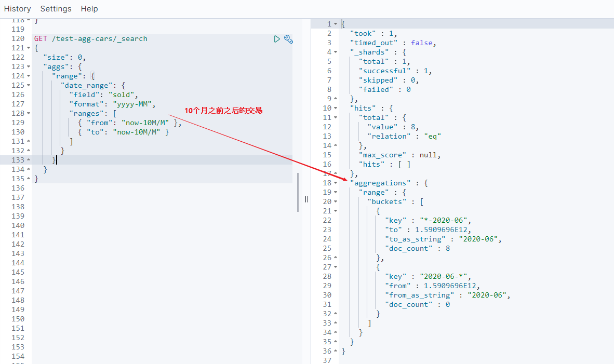
此聚合与Range聚合之间的主要区别在于 from和to值可以在Date Math表达式 中表示，并且还可以指定日期格式，通过该日期格式将返回from and to响应字段。请注意，此聚合包括from值，但不包括to每个范围的值。
对柱状图功能：Histrogram
直方图 histogram 本质上是就是为柱状图功能设计的。
创建直方图需要指定一个区间，如果我们要为售价创建一个直方图，可以将间隔设为 20,000。这样做将会在每个 $20,000 档创建一个新桶，然后文档会被分到对应的桶中。
对于仪表盘来说，我们希望知道每个售价区间内汽车的销量。我们还会想知道每个售价区间内汽车所带来的收入，可以通过对每个区间内已售汽车的售价求和得到。
可以用 histogram 和一个嵌套的 sum 度量得到我们想要的答案：
GET /test-agg-cars/_search
{
"size" : 0,
"aggs":{
"price":{
"histogram":{
"field": "price.keyword",
"interval": 20000
},
"aggs":{
"revenue": {
"sum": {
"field" : "price"
}
}
}
}
}
}
- histogram 桶要求两个参数：一个数值字段以及一个定义桶大小间隔。
- sum 度量嵌套在每个售价区间内，用来显示每个区间内的总收入。
如我们所见，查询是围绕 price 聚合构建的，它包含一个 histogram 桶。它要求字段的类型必须是数值型的同时需要设定分组的间隔范围。 间隔设置为 20,000 意味着我们将会得到如 [0-19999, 20000-39999, ...] 这样的区间。
接着，我们在直方图内定义嵌套的度量，这个 sum 度量，它会对落入某一具体售价区间的文档中 price 字段的值进行求和。 这可以为我们提供每个售价区间的收入，从而可以发现到底是普通家用车赚钱还是奢侈车赚钱。
响应结果如下：

结果很容易理解，不过应该注意到直方图的键值是区间的下限。键 0 代表区间 0-19，999 ，键 20000 代表区间 20，000-39，999 ，等等。

当然，我们可以为任何聚合输出的分类和统计结果创建条形图，而不只是 直方图 桶。让我们以最受欢迎 10 种汽车以及它们的平均售价、标准差这些信息创建一个条形图。 我们会用到 terms 桶和 extended_stats 度量：
GET /test-agg-cars/_search
{
"size" : 0,
"aggs": {
"makes": {
"terms": {
"field": "make.keyword",
"size": 10
},
"aggs": {
"stats": {
"extended_stats": {
"field": "price"
}
}
}
}
}
}
上述代码会按受欢迎度返回制造商列表以及它们各自的统计信息。我们对其中的 stats.avg 、 stats.count 和 stats.std_deviation 信息特别感兴趣，并用 它们计算出标准差：
std_err = std_deviation / count

对应报表：

参考文章
https://www.elastic.co/guide/en/elasticsearch/reference/current/search-aggregations-bucket.html
https://www.elastic.co/guide/cn/elasticsearch/guide/current/_aggregation_test_drive.html
11 聚合：聚合查询之Metric聚合详解
如何理解metric聚合
在[bucket聚合]中，我画了一张图辅助你构筑体系，那么metric聚合又如何理解呢？
如果你直接去看官方文档，大概也有十几种：

那么metric聚合又如何理解呢？我认为从两个角度：
- 从分类看：Metric聚合分析分为单值分析和多值分析两类
- 从功能看：根据具体的应用场景设计了一些分析api, 比如地理位置，百分数等等
融合上述两个方面，我们可以梳理出大致的一个mind图：
-
单值分析
: 只输出一个分析结果
- 标准stat型
avg平均值max最大值min最小值sum和value_count数量
- 其它类型
cardinality基数（distinct去重）weighted_avg带权重的avgmedian_absolute_deviation中位值
- 标准stat型
-
多值分析
: 单值之外的
- stats型
stats包含avg,max,min,sum和countmatrix_stats针对矩阵模型extended_statsstring_stats针对字符串
- 百分数型
percentiles百分数范围percentile_ranks百分数排行
- 地理位置型
geo_boundsGeo boundsgeo_centroidGeo-centroidgeo_lineGeo-Line
- Top型
top_hits分桶后的top hitstop_metrics
- stats型
通过上述列表（我就不画图了），我们构筑的体系是基于分类和功能，而不是具体的项（比如avg,percentiles...)；这是不同的认知维度: 具体的项是碎片化，分类和功能这种是你需要构筑的体系。@pdai
单值分析: 标准stat类型
avg 平均值
计算班级的平均分
POST /exams/_search?size=0
{
"aggs": {
"avg_grade": { "avg": { "field": "grade" } }
}
}
返回
{
...
"aggregations": {
"avg_grade": {
"value": 75.0
}
}
}
max 最大值
计算销售最高价
POST /sales/_search?size=0
{
"aggs": {
"max_price": { "max": { "field": "price" } }
}
}
返回
{
...
"aggregations": {
"max_price": {
"value": 200.0
}
}
}
min 最小值
计算销售最低价
POST /sales/_search?size=0
{
"aggs": {
"min_price": { "min": { "field": "price" } }
}
}
返回
{
...
"aggregations": {
"min_price": {
"value": 10.0
}
}
}
sum 和
计算销售总价
POST /sales/_search?size=0
{
"query": {
"constant_score": {
"filter": {
"match": { "type": "hat" }
}
}
},
"aggs": {
"hat_prices": { "sum": { "field": "price" } }
}
}
返回
{
...
"aggregations": {
"hat_prices": {
"value": 450.0
}
}
}
value_count 数量
销售数量统计
POST /sales/_search?size=0
{
"aggs" : {
"types_count" : { "value_count" : { "field" : "type" } }
}
}
返回
{
...
"aggregations": {
"types_count": {
"value": 7
}
}
}
单值分析: 其它类型
weighted_avg 带权重的avg
POST /exams/_search
{
"size": 0,
"aggs": {
"weighted_grade": {
"weighted_avg": {
"value": {
"field": "grade"
},
"weight": {
"field": "weight"
}
}
}
}
}
返回
{
...
"aggregations": {
"weighted_grade": {
"value": 70.0
}
}
}
cardinality 基数（distinct去重）
POST /sales/_search?size=0
{
"aggs": {
"type_count": {
"cardinality": {
"field": "type"
}
}
}
}
返回
{
...
"aggregations": {
"type_count": {
"value": 3
}
}
}
median_absolute_deviation 中位值
GET reviews/_search
{
"size": 0,
"aggs": {
"review_average": {
"avg": {
"field": "rating"
}
},
"review_variability": {
"median_absolute_deviation": {
"field": "rating"
}
}
}
}
返回
{
...
"aggregations": {
"review_average": {
"value": 3.0
},
"review_variability": {
"value": 2.0
}
}
}
非单值分析：stats型
stats 包含avg,max,min,sum和count
POST /exams/_search?size=0
{
"aggs": {
"grades_stats": { "stats": { "field": "grade" } }
}
}
返回
{
...
"aggregations": {
"grades_stats": {
"count": 2,
"min": 50.0,
"max": 100.0,
"avg": 75.0,
"sum": 150.0
}
}
}
matrix_stats 针对矩阵模型
以下示例说明了使用矩阵统计量来描述收入与贫困之间的关系。
GET /_search
{
"aggs": {
"statistics": {
"matrix_stats": {
"fields": [ "poverty", "income" ]
}
}
}
}
返回
{
...
"aggregations": {
"statistics": {
"doc_count": 50,
"fields": [ {
"name": "income",
"count": 50,
"mean": 51985.1,
"variance": 7.383377037755103E7,
"skewness": 0.5595114003506483,
"kurtosis": 2.5692365287787124,
"covariance": {
"income": 7.383377037755103E7,
"poverty": -21093.65836734694
},
"correlation": {
"income": 1.0,
"poverty": -0.8352655256272504
}
}, {
"name": "poverty",
"count": 50,
"mean": 12.732000000000001,
"variance": 8.637730612244896,
"skewness": 0.4516049811903419,
"kurtosis": 2.8615929677997767,
"covariance": {
"income": -21093.65836734694,
"poverty": 8.637730612244896
},
"correlation": {
"income": -0.8352655256272504,
"poverty": 1.0
}
} ]
}
}
}
extended_stats
根据从汇总文档中提取的数值计算统计信息。
GET /exams/_search
{
"size": 0,
"aggs": {
"grades_stats": { "extended_stats": { "field": "grade" } }
}
}
上面的汇总计算了所有文档的成绩统计信息。聚合类型为extended_stats，并且字段设置定义将在其上计算统计信息的文档的数字字段。
{
...
"aggregations": {
"grades_stats": {
"count": 2,
"min": 50.0,
"max": 100.0,
"avg": 75.0,
"sum": 150.0,
"sum_of_squares": 12500.0,
"variance": 625.0,
"variance_population": 625.0,
"variance_sampling": 1250.0,
"std_deviation": 25.0,
"std_deviation_population": 25.0,
"std_deviation_sampling": 35.35533905932738,
"std_deviation_bounds": {
"upper": 125.0,
"lower": 25.0,
"upper_population": 125.0,
"lower_population": 25.0,
"upper_sampling": 145.71067811865476,
"lower_sampling": 4.289321881345245
}
}
}
}
string_stats 针对字符串
用于计算从聚合文档中提取的字符串值的统计信息。这些值可以从特定的关键字字段中检索。
POST /my-index-000001/_search?size=0
{
"aggs": {
"message_stats": { "string_stats": { "field": "message.keyword" } }
}
}
返回
{
...
"aggregations": {
"message_stats": {
"count": 5,
"min_length": 24,
"max_length": 30,
"avg_length": 28.8,
"entropy": 3.94617750050791
}
}
}
非单值分析：百分数型
percentiles 百分数范围
针对从聚合文档中提取的数值计算一个或多个百分位数。
GET latency/_search
{
"size": 0,
"aggs": {
"load_time_outlier": {
"percentiles": {
"field": "load_time"
}
}
}
}
默认情况下，百分位度量标准将生成一定范围的百分位：[1，5，25，50，75，95，99]。
{
...
"aggregations": {
"load_time_outlier": {
"values": {
"1.0": 5.0,
"5.0": 25.0,
"25.0": 165.0,
"50.0": 445.0,
"75.0": 725.0,
"95.0": 945.0,
"99.0": 985.0
}
}
}
}
percentile_ranks 百分数排行
根据从汇总文档中提取的数值计算一个或多个百分位等级。
GET latency/_search
{
"size": 0,
"aggs": {
"load_time_ranks": {
"percentile_ranks": {
"field": "load_time",
"values": [ 500, 600 ]
}
}
}
}
返回
{
...
"aggregations": {
"load_time_ranks": {
"values": {
"500.0": 90.01,
"600.0": 100.0
}
}
}
}
上述结果表示90.01％的页面加载在500ms内完成，而100％的页面加载在600ms内完成。
非单值分析：地理位置型
geo_bounds Geo bounds
PUT /museums
{
"mappings": {
"properties": {
"location": {
"type": "geo_point"
}
}
}
}
POST /museums/_bulk?refresh
{"index":{"_id":1}}
{"location": "52.374081,4.912350", "name": "NEMO Science Museum"}
{"index":{"_id":2}}
{"location": "52.369219,4.901618", "name": "Museum Het Rembrandthuis"}
{"index":{"_id":3}}
{"location": "52.371667,4.914722", "name": "Nederlands Scheepvaartmuseum"}
{"index":{"_id":4}}
{"location": "51.222900,4.405200", "name": "Letterenhuis"}
{"index":{"_id":5}}
{"location": "48.861111,2.336389", "name": "Musée du Louvre"}
{"index":{"_id":6}}
{"location": "48.860000,2.327000", "name": "Musée d'Orsay"}
POST /museums/_search?size=0
{
"query": {
"match": { "name": "musée" }
},
"aggs": {
"viewport": {
"geo_bounds": {
"field": "location",
"wrap_longitude": true
}
}
}
}
上面的汇总展示了如何针对具有商店业务类型的所有文档计算位置字段的边界框
{
...
"aggregations": {
"viewport": {
"bounds": {
"top_left": {
"lat": 48.86111099738628,
"lon": 2.3269999679178
},
"bottom_right": {
"lat": 48.85999997612089,
"lon": 2.3363889567553997
}
}
}
}
}
geo_centroid Geo-centroid
PUT /museums
{
"mappings": {
"properties": {
"location": {
"type": "geo_point"
}
}
}
}
POST /museums/_bulk?refresh
{"index":{"_id":1}}
{"location": "52.374081,4.912350", "city": "Amsterdam", "name": "NEMO Science Museum"}
{"index":{"_id":2}}
{"location": "52.369219,4.901618", "city": "Amsterdam", "name": "Museum Het Rembrandthuis"}
{"index":{"_id":3}}
{"location": "52.371667,4.914722", "city": "Amsterdam", "name": "Nederlands Scheepvaartmuseum"}
{"index":{"_id":4}}
{"location": "51.222900,4.405200", "city": "Antwerp", "name": "Letterenhuis"}
{"index":{"_id":5}}
{"location": "48.861111,2.336389", "city": "Paris", "name": "Musée du Louvre"}
{"index":{"_id":6}}
{"location": "48.860000,2.327000", "city": "Paris", "name": "Musée d'Orsay"}
POST /museums/_search?size=0
{
"aggs": {
"centroid": {
"geo_centroid": {
"field": "location"
}
}
}
}
上面的汇总显示了如何针对所有具有犯罪类型的盗窃文件计算位置字段的质心。
{
...
"aggregations": {
"centroid": {
"location": {
"lat": 51.00982965203002,
"lon": 3.9662131341174245
},
"count": 6
}
}
}
geo_line Geo-Line
PUT test
{
"mappings": {
"dynamic": "strict",
"_source": {
"enabled": false
},
"properties": {
"my_location": {
"type": "geo_point"
},
"group": {
"type": "keyword"
},
"@timestamp": {
"type": "date"
}
}
}
}
POST /test/_bulk?refresh
{"index": {}}
{"my_location": {"lat":37.3450570, "lon": -122.0499820}, "@timestamp": "2013-09-06T16:00:36"}
{"index": {}}
{"my_location": {"lat": 37.3451320, "lon": -122.0499820}, "@timestamp": "2013-09-06T16:00:37Z"}
{"index": {}}
{"my_location": {"lat": 37.349283, "lon": -122.0505010}, "@timestamp": "2013-09-06T16:00:37Z"}
POST /test/_search?filter_path=aggregations
{
"aggs": {
"line": {
"geo_line": {
"point": {"field": "my_location"},
"sort": {"field": "@timestamp"}
}
}
}
}
将存储桶中的所有geo_point值聚合到由所选排序字段排序的LineString中。
{
"aggregations": {
"line": {
"type" : "Feature",
"geometry" : {
"type" : "LineString",
"coordinates" : [
[
-122.049982,
37.345057
],
[
-122.050501,
37.349283
],
[
-122.049982,
37.345132
]
]
},
"properties" : {
"complete" : true
}
}
}
}
非单值分析：Top型
top_hits 分桶后的top hits
POST /sales/_search?size=0
{
"aggs": {
"top_tags": {
"terms": {
"field": "type",
"size": 3
},
"aggs": {
"top_sales_hits": {
"top_hits": {
"sort": [
{
"date": {
"order": "desc"
}
}
],
"_source": {
"includes": [ "date", "price" ]
},
"size": 1
}
}
}
}
}
}
返回
{
...
"aggregations": {
"top_tags": {
"doc_count_error_upper_bound": 0,
"sum_other_doc_count": 0,
"buckets": [
{
"key": "hat",
"doc_count": 3,
"top_sales_hits": {
"hits": {
"total" : {
"value": 3,
"relation": "eq"
},
"max_score": null,
"hits": [
{
"_index": "sales",
"_type": "_doc",
"_id": "AVnNBmauCQpcRyxw6ChK",
"_source": {
"date": "2015/03/01 00:00:00",
"price": 200
},
"sort": [
1425168000000
],
"_score": null
}
]
}
}
},
{
"key": "t-shirt",
"doc_count": 3,
"top_sales_hits": {
"hits": {
"total" : {
"value": 3,
"relation": "eq"
},
"max_score": null,
"hits": [
{
"_index": "sales",
"_type": "_doc",
"_id": "AVnNBmauCQpcRyxw6ChL",
"_source": {
"date": "2015/03/01 00:00:00",
"price": 175
},
"sort": [
1425168000000
],
"_score": null
}
]
}
}
},
{
"key": "bag",
"doc_count": 1,
"top_sales_hits": {
"hits": {
"total" : {
"value": 1,
"relation": "eq"
},
"max_score": null,
"hits": [
{
"_index": "sales",
"_type": "_doc",
"_id": "AVnNBmatCQpcRyxw6ChH",
"_source": {
"date": "2015/01/01 00:00:00",
"price": 150
},
"sort": [
1420070400000
],
"_score": null
}
]
}
}
}
]
}
}
}
top_metrics
POST /test/_bulk?refresh
{"index": {}}
{"s": 1, "m": 3.1415}
{"index": {}}
{"s": 2, "m": 1.0}
{"index": {}}
{"s": 3, "m": 2.71828}
POST /test/_search?filter_path=aggregations
{
"aggs": {
"tm": {
"top_metrics": {
"metrics": {"field": "m"},
"sort": {"s": "desc"}
}
}
}
}
返回
{
"aggregations": {
"tm": {
"top": [ {"sort": [3], "metrics": {"m": 2.718280076980591 } } ]
}
}
}
参考文章
https://www.elastic.co/guide/en/elasticsearch/reference/current/search-aggregations-metrics.html
12 聚合：聚合查询之Pipline聚合详解
如何理解pipeline聚合
如何理解管道聚合呢？最重要的是要站在设计者角度看这个功能的要实现的目的：让上一步的聚合结果成为下一个聚合的输入，这就是管道。
管道机制的常见场景
首先回顾下，Tomcat管道机制中向你介绍的常见的管道机制设计中的应用场景。
责任链模式
管道机制在设计模式上属于责任链模式，如果你不理解，请参看如下文章：
责任链模式: 通过责任链模式, 你可以为某个请求创建一个对象链. 每个对象依序检查此请求并对其进行处理或者将它传给链中的下一个对象。
FilterChain
在软件开发的常接触的责任链模式是FilterChain，它体现在很多软件设计中：
- 比如Spring Security框架中
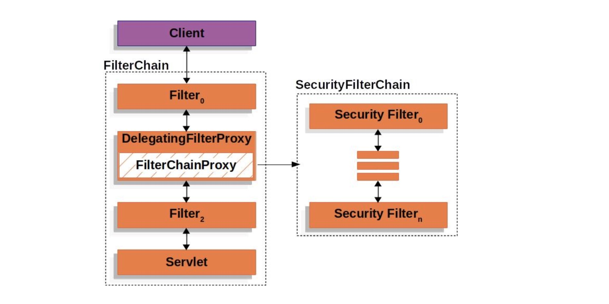
- 比如HttpServletRequest处理的过滤器中
当一个request过来的时候，需要对这个request做一系列的加工，使用责任链模式可以使每个加工组件化，减少耦合。也可以使用在当一个request过来的时候，需要找到合适的加工方式。当一个加工方式不适合这个request的时候，传递到下一个加工方法，该加工方式再尝试对request加工。
网上找了图，这里我们后文将通过Tomcat请求处理向你阐述。

ElasticSearch设计管道机制
简单而言：让上一步的聚合结果成为下一个聚合的输入，这就是管道。
接下来，无非就是对不同类型的聚合有接口的支撑，比如：
第一个维度：管道聚合有很多不同类型，每种类型都与其他聚合计算不同的信息，但是可以将这些类型分为两类：
- 父级 父级聚合的输出提供了一组管道聚合，它可以计算新的存储桶或新的聚合以添加到现有存储桶中。
- 兄弟 同级聚合的输出提供的管道聚合，并且能够计算与该同级聚合处于同一级别的新聚合。
第二个维度：根据功能设计的意图
比如前置聚合可能是Bucket聚合，后置的可能是基于Metric聚合，那么它就可以成为一类管道
进而引出了：xxx bucket(是不是很容易理解了 @pdai)
-
Bucket聚合 -> Metric聚合
： bucket聚合的结果，成为下一步metric聚合的输入
- Average bucket
- Min bucket
- Max bucket
- Sum bucket
- Stats bucket
- Extended stats bucket
对构建体系而言，理解上面的已经够了，其它的类型不过是锦上添花而言。
一些例子
这里我们通过几个简单的例子看看即可，具体如果需要使用看看文档即可。@pdai
Average bucket 聚合
POST _search
{
"size": 0,
"aggs": {
"sales_per_month": {
"date_histogram": {
"field": "date",
"calendar_interval": "month"
},
"aggs": {
"sales": {
"sum": {
"field": "price"
}
}
}
},
"avg_monthly_sales": {
// tag::avg-bucket-agg-syntax[]
"avg_bucket": {
"buckets_path": "sales_per_month>sales",
"gap_policy": "skip",
"format": "#,##0.00;(#,##0.00)"
}
// end::avg-bucket-agg-syntax[]
}
}
}
- 嵌套的bucket聚合：聚合出按月价格的直方图
- Metic聚合：对上面的聚合再求平均值。
字段类型：
- buckets_path：指定聚合的名称，支持多级嵌套聚合。
- gap_policy 当管道聚合遇到不存在的值，有点类似于term等聚合的(missing)时所采取的策略，可选择值为：skip、insert_zeros。
- skip：此选项将丢失的数据视为bucket不存在。它将跳过桶并使用下一个可用值继续计算。
- format 用于格式化聚合桶的输出(key)。
输出结果如下
{
"took": 11,
"timed_out": false,
"_shards": ...,
"hits": ...,
"aggregations": {
"sales_per_month": {
"buckets": [
{
"key_as_string": "2015/01/01 00:00:00",
"key": 1420070400000,
"doc_count": 3,
"sales": {
"value": 550.0
}
},
{
"key_as_string": "2015/02/01 00:00:00",
"key": 1422748800000,
"doc_count": 2,
"sales": {
"value": 60.0
}
},
{
"key_as_string": "2015/03/01 00:00:00",
"key": 1425168000000,
"doc_count": 2,
"sales": {
"value": 375.0
}
}
]
},
"avg_monthly_sales": {
"value": 328.33333333333333,
"value_as_string": "328.33"
}
}
}
Stats bucket 聚合
进一步的stat bucket也很容易理解了
POST /sales/_search
{
"size": 0,
"aggs": {
"sales_per_month": {
"date_histogram": {
"field": "date",
"calendar_interval": "month"
},
"aggs": {
"sales": {
"sum": {
"field": "price"
}
}
}
},
"stats_monthly_sales": {
"stats_bucket": {
"buckets_path": "sales_per_month>sales"
}
}
}
}
返回
{
"took": 11,
"timed_out": false,
"_shards": ...,
"hits": ...,
"aggregations": {
"sales_per_month": {
"buckets": [
{
"key_as_string": "2015/01/01 00:00:00",
"key": 1420070400000,
"doc_count": 3,
"sales": {
"value": 550.0
}
},
{
"key_as_string": "2015/02/01 00:00:00",
"key": 1422748800000,
"doc_count": 2,
"sales": {
"value": 60.0
}
},
{
"key_as_string": "2015/03/01 00:00:00",
"key": 1425168000000,
"doc_count": 2,
"sales": {
"value": 375.0
}
}
]
},
"stats_monthly_sales": {
"count": 3,
"min": 60.0,
"max": 550.0,
"avg": 328.3333333333333,
"sum": 985.0
}
}
}
参考文章
https://www.elastic.co/guide/en/elasticsearch/reference/current/search-aggregations-pipeline.html
13 原理：从图解构筑对ES原理的初步认知
前言
本文先自上而下，后自底向上的介绍ElasticSearch的底层工作原理，试图回答以下问题：
- 为什么我的搜索
*foo-bar*无法匹配foo-bar？ - 为什么增加更多的文件会压缩索引（Index）？
- 为什么ElasticSearch占用很多内存？
版本
elasticsearch版本: elasticsearch-2.2.0
图解ElasticSearch
- 云上的集群
- 集群里的盒子
云里面的每个白色正方形的盒子代表一个节点——Node。

- 节点之间
在一个或者多个节点直接，多个绿色小方块组合在一起形成一个ElasticSearch的索引。
- 索引里的小方块
在一个索引下，分布在多个节点里的绿色小方块称为分片——Shard。

- Shard＝Lucene Index
一个ElasticSearch的Shard本质上是一个Lucene Index。

Lucene是一个Full Text 搜索库（也有很多其他形式的搜索库），ElasticSearch是建立在Lucene之上的。接下来的故事要说的大部分内容实际上是ElasticSearch如何基于Lucene工作的。
图解Lucene
Segment
- Mini索引——segment
在Lucene里面有很多小的segment，我们可以把它们看成Lucene内部的mini-index。

-
Segment内部
（有着许多数据结构）
- Inverted Index
- Stored Fields
- Document Values
- Cache

Inverted Index
最最重要的Inverted Index
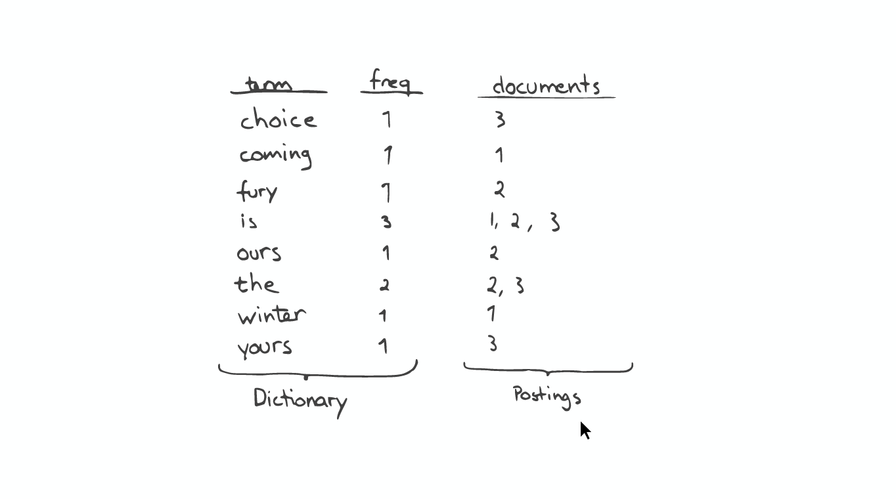
Inverted Index主要包括两部分：
- 一个有序的数据字典Dictionary（包括单词Term和它出现的频率）。
- 与单词Term对应的Postings（即存在这个单词的文件）。
当我们搜索的时候，首先将搜索的内容分解，然后在字典里找到对应Term，从而查找到与搜索相关的文件内容。

- 查询“the fury”

- 自动补全（AutoCompletion-Prefix）
如果想要查找以字母“c”开头的字母，可以简单的通过二分查找（Binary Search）在Inverted Index表中找到例如“choice”、“coming”这样的词（Term）。

- 昂贵的查找
如果想要查找所有包含“our”字母的单词，那么系统会扫描整个Inverted Index，这是非常昂贵的。
在此种情况下，如果想要做优化，那么我们面对的问题是如何生成合适的Term。
- 问题的转化

对于以上诸如此类的问题，我们可能会有几种可行的解决方案：
* suffix -> xiffus *
如果我们想以后缀作为搜索条件，可以为Term做反向处理。
(60.6384, 6.5017) -> u4u8gyykk
对于GEO位置信息，可以将它转换为GEO Hash。
123 -> {1-hundreds, 12-tens, 123}
对于简单的数字，可以为它生成多重形式的Term。
- 解决拼写错误
一个Python库 为单词生成了一个包含错误拼写信息的树形状态机，解决拼写错误的问题。
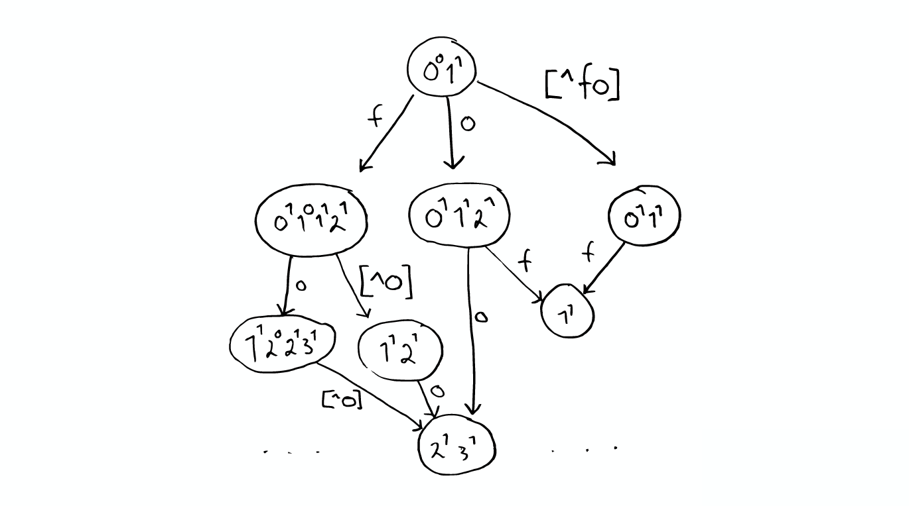
Stored Field字段查找
当我们想要查找包含某个特定标题内容的文件时，Inverted Index就不能很好的解决这个问题，所以Lucene提供了另外一种数据结构Stored Fields来解决这个问题。本质上，Stored Fields是一个简单的键值对key-value。默认情况下，ElasticSearch会存储整个文件的JSON source。

Document Values为了排序，聚合
即使这样，我们发现以上结构仍然无法解决诸如：排序、聚合、facet，因为我们可能会要读取大量不需要的信息。
所以，另一种数据结构解决了此种问题：Document Values。这种结构本质上就是一个列式的存储，它高度优化了具有相同类型的数据的存储结构。

为了提高效率，ElasticSearch可以将索引下某一个Document Value全部读取到内存中进行操作，这大大提升访问速度，但是也同时会消耗掉大量的内存空间。
总之，这些数据结构Inverted Index、Stored Fields、Document Values及其缓存，都在segment内部。
搜索发生时
搜索时，Lucene会搜索所有的segment然后将每个segment的搜索结果返回，最后合并呈现给客户。
Lucene的一些特性使得这个过程非常重要：
- Segments是不可变的（immutable）
- Delete? 当删除发生时，Lucene做的只是将其标志位置为删除，但是文件还是会在它原来的地方，不会发生改变
- Update? 所以对于更新来说，本质上它做的工作是：先删除，然后重新索引（Re-index）
- 随处可见的压缩
- Lucene非常擅长压缩数据，基本上所有教科书上的压缩方式，都能在Lucene中找到。
- 缓存所有的所有
- Lucene也会将所有的信息做缓存，这大大提高了它的查询效率。
缓存的故事
当ElasticSearch索引一个文件的时候，会为文件建立相应的缓存，并且会定期（每秒）刷新这些数据，然后这些文件就可以被搜索到。

随着时间的增加，我们会有很多segments，

所以ElasticSearch会将这些segment合并，在这个过程中，segment会最终被删除掉
这就是为什么增加文件可能会使索引所占空间变小，它会引起merge，从而可能会有更多的压缩。
- 举个栗子
有两个segment将会merge
这两个segment最终会被删除，然后合并成一个新的segment
这时这个新的segment在缓存中处于cold状态，但是大多数segment仍然保持不变，处于warm状态。
以上场景经常在Lucene Index内部发生的。

在Shard中搜索
ElasticSearch从Shard中搜索的过程与Lucene Segment中搜索的过程类似。

与在Lucene Segment中搜索不同的是，Shard可能是分布在不同Node上的，所以在搜索与返回结果时，所有的信息都会通过网络传输。
需要注意的是：
1次搜索查找2个shard ＝ 2次分别搜索shard

- 对于日志文件的处理
当我们想搜索特定日期产生的日志时，通过根据时间戳对日志文件进行分块与索引，会极大提高搜索效率。
当我们想要删除旧的数据时也非常方便，只需删除老的索引即可。

在上种情况下，每个index有两个shards
- 如何Scale

shard不会进行更进一步的拆分，但是shard可能会被转移到不同节点上

所以，如果当集群节点压力增长到一定的程度，我们可能会考虑增加新的节点，这就会要求我们对所有数据进行重新索引，这是我们不太希望看到的，所以我们需要在规划的时候就考虑清楚，如何去平衡足够多的节点与不足节点之间的关系。
- 节点分配与Shard优化
- 为更重要的数据索引节点，分配性能更好的机器
- 确保每个shard都有副本信息replica
- 路由Routing
每个节点，每个都存留一份路由表，所以当请求到任何一个节点时，ElasticSearch都有能力将请求转发到期望节点的shard进一步处理。

一个真实的请求

- Query
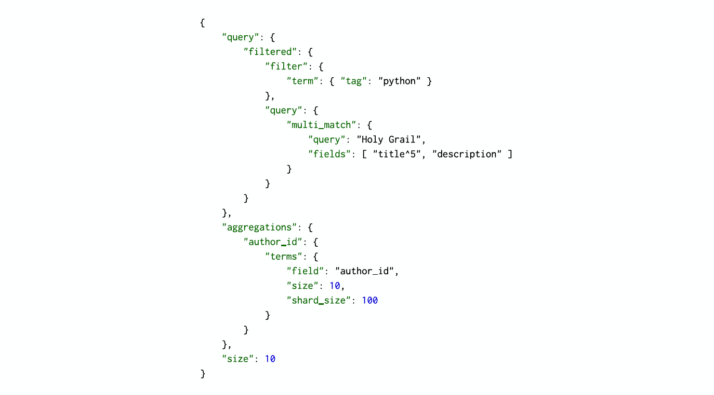
Query有一个类型filtered，以及一个multi_match的查询
- Aggregation

根据作者进行聚合，得到top10的hits的top10作者的信息
- 请求分发
这个请求可能被分发到集群里的任意一个节点

- 上帝节点
这时这个节点就成为当前请求的协调者（Coordinator），它决定： a) 根据索引信息，判断请求会被路由到哪个核心节点 b) 以及哪个副本是可用的 c) 等等
- 路由
- 在真实搜索之前
ElasticSearch 会将Query转换成Lucene Query

然后在所有的segment中执行计算
对于Filter条件本身也会有缓存

但queries不会被缓存，所以如果相同的Query重复执行，应用程序自己需要做缓存

所以，
a) filters可以在任何时候使用 b) query只有在需要score的时候才使用
- 返回
搜索结束之后，结果会沿着下行的路径向上逐层返回。


参考来源
SlideShare: Elasticsearch From the Bottom Up
Youtube: Elasticsearch from the bottom up
Wiki: Document-term matrix
Wiki: Search engine indexing
Skip list
Standford Edu: Faster postings list intersection via skip pointers
StackOverflow: how an search index works when querying many words?
StackOverflow: how does lucene calculate intersection of documents so fast?
Lucene and its magical indexes
misspellings 2.0c: A tool to detect misspellings
14 原理：ES原理知识点补充和整体结构
ElasticSearch整体结构
通过上文，在通过图解了解了ES整体的原理后，我们梳理下ES的整体结构

- 一个 ES Index 在集群模式下，有多个 Node （节点）组成。每个节点就是 ES 的Instance (实例)。
- 每个节点上会有多个 shard （分片）， P1 P2 是主分片, R1 R2 是副本分片
- 每个分片上对应着就是一个 Lucene Index（底层索引文件）
- Lucene Index 是一个统称
- 由多个 Segment （段文件，就是倒排索引）组成。每个段文件存储着就是 Doc 文档。
- commit point记录了所有 segments 的信息
补充:Lucene索引结构
上图中Lucene的索引结构中有哪些文件呢？

（更多文件类型可参考这里 ）

文件的关系如下：

补充:Lucene处理流程
上文图解过程，还需要理解Lucene处理流程, 这将帮助你更好的索引文档和搜索文档。
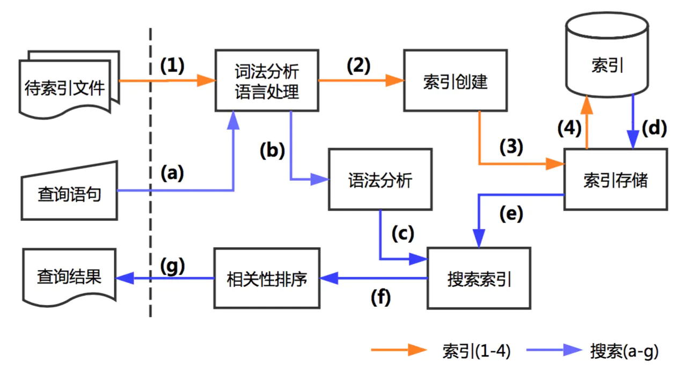
创建索引的过程：
- 准备待索引的原文档，数据来源可能是文件、数据库或网络
- 对文档的内容进行分词组件处理，形成一系列的Term
- 索引组件对文档和Term处理，形成字典和倒排表
搜索索引的过程：
- 对查询语句进行分词处理，形成一系列Term
- 根据倒排索引表查找出包含Term的文档，并进行合并形成符合结果的文档集
- 比对查询语句与各个文档相关性得分，并按照得分高低返回
补充:ElasticSearch分析器
上图中很重要的一项是语法分析/语言处理, 所以我们还需要补充ElasticSearch分析器知识点。
分析 包含下面的过程：
- 首先，将一块文本分成适合于倒排索引的独立的 词条 ，
- 之后，将这些词条统一化为标准格式以提高它们的“可搜索性”，或者 recall
分析器执行上面的工作。 分析器 实际上是将三个功能封装到了一个包里：
- 字符过滤器 首先，字符串按顺序通过每个 字符过滤器 。他们的任务是在分词前整理字符串。一个字符过滤器可以用来去掉HTML，或者将 & 转化成 and。
- 分词器 其次，字符串被 分词器 分为单个的词条。一个简单的分词器遇到空格和标点的时候，可能会将文本拆分成词条。
- Token 过滤器 最后，词条按顺序通过每个 token 过滤器 。这个过程可能会改变词条（例如，小写化 Quick ），删除词条（例如， 像 a， and， the 等无用词），或者增加词条（例如，像 jump 和 leap 这种同义词）。
Elasticsearch提供了开箱即用的字符过滤器、分词器和token 过滤器。 这些可以组合起来形成自定义的分析器以用于不同的目的。
内置分析器
Elasticsearch还附带了可以直接使用的预包装的分析器。接下来我们会列出最重要的分析器。为了证明它们的差异，我们看看每个分析器会从下面的字符串得到哪些词条：
"Set the shape to semi-transparent by calling set_trans(5)"
- 标准分析器
标准分析器是Elasticsearch默认使用的分析器。它是分析各种语言文本最常用的选择。它根据 Unicode 联盟 定义的 单词边界 划分文本。删除绝大部分标点。最后，将词条小写。它会产生
set, the, shape, to, semi, transparent, by, calling, set_trans, 5
- 简单分析器
简单分析器在任何不是字母的地方分隔文本，将词条小写。它会产生
set, the, shape, to, semi, transparent, by, calling, set, trans
- 空格分析器
空格分析器在空格的地方划分文本。它会产生
Set, the, shape, to, semi-transparent, by, calling, set_trans(5)
- 语言分析器
特定语言分析器可用于 很多语言。它们可以考虑指定语言的特点。例如， 英语 分析器附带了一组英语无用词（常用单词，例如 and 或者 the ，它们对相关性没有多少影响），它们会被删除。 由于理解英语语法的规则，这个分词器可以提取英语单词的 词干 。
英语 分词器会产生下面的词条：
set, shape, semi, transpar, call, set_tran, 5
注意看 transparent、 calling 和 set_trans 已经变为词根格式。
什么时候使用分析器
当我们 索引 一个文档，它的全文域被分析成词条以用来创建倒排索引。 但是，当我们在全文域 搜索 的时候，我们需要将查询字符串通过 相同的分析过程 ，以保证我们搜索的词条格式与索引中的词条格式一致。
全文查询，理解每个域是如何定义的，因此它们可以做正确的事：
- 当你查询一个 全文 域时， 会对查询字符串应用相同的分析器，以产生正确的搜索词条列表。
- 当你查询一个 精确值 域时，不会分析查询字符串，而是搜索你指定的精确值。
举个例子
ES中每天一条数据， 按照如下方式查询：
GET /_search?q=2014 # 12 results
GET /_search?q=2014-09-15 # 12 results !
GET /_search?q=date:2014-09-15 # 1 result
GET /_search?q=date:2014 # 0 results !
为什么返回那样的结果？
- date 域包含一个精确值：单独的词条 2014-09-15。
- _all 域是一个全文域，所以分词进程将日期转化为三个词条： 2014， 09， 和 15。
当我们在 _all 域查询 2014，它匹配所有的12条推文，因为它们都含有 2014 ：
GET /_search?q=2014 # 12 results
当我们在 _all 域查询 2014-09-15，它首先分析查询字符串，产生匹配 2014， 09， 或 15 中 任意 词条的查询。这也会匹配所有12条推文，因为它们都含有 2014 ：
GET /_search?q=2014-09-15 # 12 results !
当我们在 date 域查询 2014-09-15，它寻找 精确 日期，只找到一个推文：
GET /_search?q=date:2014-09-15 # 1 result
当我们在 date 域查询 2014，它找不到任何文档，因为没有文档含有这个精确日志：
GET /_search?q=date:2014 # 0 results !
参考文章
https://new.qq.com/omn/20210320/20210320A01XHF00.html
https://juejin.cn/post/6844903473666867208
http://lucene.apache.org/core/7_2_1/core/org/apache/lucene/codecs/lucene70/package-summary.html#package.description
15 原理：ES原理之索引文档流程详解
文档索引步骤顺序
单个文档
新建单个文档所需要的步骤顺序：

- 客户端向 Node 1 发送新建、索引或者删除请求。
- 节点使用文档的 _id 确定文档属于分片 0 。请求会被转发到 Node 3，因为分片 0 的主分片目前被分配在 Node 3 上。
- Node 3 在主分片上面执行请求。如果成功了，它将请求并行转发到 Node 1 和 Node 2 的副本分片上。一旦所有的副本分片都报告成功, Node 3 将向协调节点报告成功，协调节点向客户端报告成功。
多个文档
使用 bulk 修改多个文档步骤顺序：

- 客户端向 Node 1 发送 bulk 请求。
- Node 1 为每个节点创建一个批量请求，并将这些请求并行转发到每个包含主分片的节点主机。
- 主分片一个接一个按顺序执行每个操作。当每个操作成功时，主分片并行转发新文档（或删除）到副本分片，然后执行下一个操作。 一旦所有的副本分片报告所有操作成功，该节点将向协调节点报告成功，协调节点将这些响应收集整理并返回给客户端。
文档索引过程详解
整体的索引流程
先看下整体的索引流程
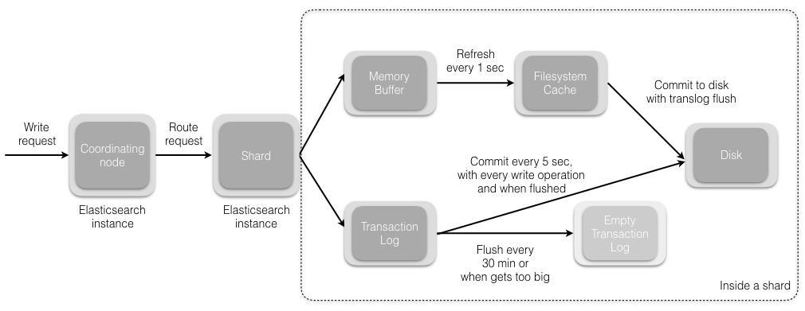
- 协调节点默认使用文档ID参与计算（也支持通过routing），以便为路由提供合适的分片。
shard = hash(document_id) % (num_of_primary_shards)
- 当分片所在的节点接收到来自协调节点的请求后，会将请求写入到Memory Buffer，然后定时（默认是每隔1秒）写入到Filesystem Cache，这个从Momery Buffer到Filesystem Cache的过程就叫做refresh；
- 当然在某些情况下，存在Momery Buffer和Filesystem Cache的数据可能会丢失，ES是通过translog的机制来保证数据的可靠性的。其实现机制是接收到请求后，同时也会写入到translog中，当Filesystem cache中的数据写入到磁盘中时，才会清除掉，这个过程叫做flush。
- 在flush过程中，内存中的缓冲将被清除，内容被写入一个新段，段的fsync将创建一个新的提交点，并将内容刷新到磁盘，旧的translog将被删除并开始一个新的translog。 flush触发的时机是定时触发（默认30分钟）或者translog变得太大（默认为512M）时。
分步骤看数据持久化过程
通过分步骤看数据持久化过程：write -> refresh -> flush -> merge
- write 过程

一个新文档过来，会存储在 in-memory buffer 内存缓存区中，顺便会记录 Translog（Elasticsearch 增加了一个 translog ，或者叫事务日志，在每一次对 Elasticsearch 进行操作时均进行了日志记录）。
这时候数据还没到 segment ，是搜不到这个新文档的。数据只有被 refresh 后，才可以被搜索到。
- refresh 过程

refresh 默认 1 秒钟，执行一次上图流程。ES 是支持修改这个值的，通过 index.refresh_interval 设置 refresh （冲刷）间隔时间。refresh 流程大致如下：
- in-memory buffer 中的文档写入到新的 segment 中，但 segment 是存储在文件系统的缓存中。此时文档可以被搜索到
- 最后清空 in-memory buffer。注意: Translog 没有被清空，为了将 segment 数据写到磁盘
- 文档经过 refresh 后， segment 暂时写到文件系统缓存，这样避免了性能 IO 操作，又可以使文档搜索到。refresh 默认 1 秒执行一次，性能损耗太大。一般建议稍微延长这个 refresh 时间间隔，比如 5 s。因此，ES 其实就是准实时，达不到真正的实时。
- flush 过程
每隔一段时间—例如 translog 变得越来越大—索引被刷新（flush）；一个新的 translog 被创建，并且一个全量提交被执行

上个过程中 segment 在文件系统缓存中，会有意外故障文档丢失。那么，为了保证文档不会丢失，需要将文档写入磁盘。那么文档从文件缓存写入磁盘的过程就是 flush。写入次怕后，清空 translog。具体过程如下：
- 所有在内存缓冲区的文档都被写入一个新的段。
- 缓冲区被清空。
- 一个Commit Point被写入硬盘。
- 文件系统缓存通过 fsync 被刷新（flush）。
- 老的 translog 被删除。
- merge 过程
由于自动刷新流程每秒会创建一个新的段 ，这样会导致短时间内的段数量暴增。而段数目太多会带来较大的麻烦。 每一个段都会消耗文件句柄、内存和cpu运行周期。更重要的是，每个搜索请求都必须轮流检查每个段；所以段越多，搜索也就越慢。
Elasticsearch通过在后台进行Merge Segment来解决这个问题。小的段被合并到大的段，然后这些大的段再被合并到更大的段。
当索引的时候，刷新（refresh）操作会创建新的段并将段打开以供搜索使用。合并进程选择一小部分大小相似的段，并且在后台将它们合并到更大的段中。这并不会中断索引和搜索。

一旦合并结束，老的段被删除：
- 新的段被刷新（flush）到了磁盘。 ** 写入一个包含新段且排除旧的和较小的段的新提交点。
- 新的段被打开用来搜索。
- 老的段被删除。

合并大的段需要消耗大量的I/O和CPU资源，如果任其发展会影响搜索性能。Elasticsearch在默认情况下会对合并流程进行资源限制，所以搜索仍然 有足够的资源很好地执行。
深入ElasticSearch索引文档的实现机制
TIP
作为选读内容。
写操作的关键点
在考虑或分析一个分布式系统的写操作时，一般需要从下面几个方面考虑：
- 可靠性：或者是持久性，数据写入系统成功后，数据不会被回滚或丢失。
- 一致性：数据写入成功后，再次查询时必须能保证读取到最新版本的数据，不能读取到旧数据。
- 原子性：一个写入或者更新操作，要么完全成功，要么完全失败，不允许出现中间状态。
- 隔离性：多个写入操作相互不影响。
- 实时性：写入后是否可以立即被查询到。
- 性能：写入性能，吞吐量到底怎么样。
Elasticsearch作为分布式系统，也需要在写入的时候满足上述的四个特点，我们在后面的写流程介绍中会涉及到上述四个方面。
接下来,我们一层一层剖析Elasticsearch内部的写机制。
Lucene的写
众所周知，Elasticsearch内部使用了Lucene完成索引创建和搜索功能，Lucene中写操作主要是通过IndexWriter类实现，IndexWriter提供三个接口：
public long addDocument();
public long updateDocuments();
public long deleteDocuments();
通过这三个接口可以完成单个文档的写入，更新和删除功能，包括了分词，倒排创建，正排创建等等所有搜索相关的流程。只要Doc通过IndesWriter写入后，后面就可以通过IndexSearcher搜索了，看起来功能已经完善了，但是仍然有一些问题没有解：
- 上述操作是单机的，而不是我们需要的分布式。
- 文档写入Lucene后并不是立即可查询的，需要生成完整的Segment后才可被搜索，如何保证实时性？
- Lucene生成的Segment是在内存中，如果机器宕机或掉电后，内存中的Segment会丢失，如何保证数据可靠性 ？
- Lucene不支持部分文档更新，但是这又是一个强需求，如何支持部分更新？
上述问题，在Lucene中是没有解决的，那么就需要Elasticsearch中解决上述问题。
我们再来看Elasticsearch中的写机制。
Elasticsearch的写
Elasticsearch采用多Shard方式，通过配置routing规则将数据分成多个数据子集，每个数据子集提供独立的索引和搜索功能。当写入文档的时候，根据routing规则，将文档发送给特定Shard中建立索引。这样就能实现分布式了。
此外，Elasticsearch整体架构上采用了一主多副的方式：

每个Index由多个Shard组成，每个Shard有一个主节点和多个副本节点，副本个数可配。但每次写入的时候，写入请求会先根据_routing规则选择发给哪个Shard，Index Request中可以设置使用哪个Filed的值作为路由参数，如果没有设置，则使用Mapping中的配置，如果mapping中也没有配置，则使用_id作为路由参数，然后通过_routing的Hash值选择出Shard（在OperationRouting类中），最后从集群的Meta中找出出该Shard的Primary节点。
请求接着会发送给Primary Shard，在Primary Shard上执行成功后，再从Primary Shard上将请求同时发送给多个Replica Shard，请求在多个Replica Shard上执行成功并返回给Primary Shard后，写入请求执行成功，返回结果给客户端。
这种模式下，写入操作的延时就等于latency = Latency(Primary Write) + Max(Replicas Write)。只要有副本在，写入延时最小也是两次单Shard的写入时延总和，写入效率会较低，但是这样的好处也很明显，避免写入后，单机或磁盘故障导致数据丢失，在数据重要性和性能方面，一般都是优先选择数据，除非一些允许丢数据的特殊场景。
采用多个副本后，避免了单机或磁盘故障发生时，对已经持久化后的数据造成损害，但是Elasticsearch里为了减少磁盘IO保证读写性能，一般是每隔一段时间（比如5分钟）才会把Lucene的Segment写入磁盘持久化，对于写入内存，但还未Flush到磁盘的Lucene数据，如果发生机器宕机或者掉电，那么内存中的数据也会丢失，这时候如何保证？
对于这种问题，Elasticsearch学习了数据库中的处理方式：增加CommitLog模块，Elasticsearch中叫TransLog。

在每一个Shard中，写入流程分为两部分，先写入Lucene，再写入TransLog。
写入请求到达Shard后，先写Lucene文件，创建好索引，此时索引还在内存里面，接着去写TransLog，写完TransLog后，刷新TransLog数据到磁盘上，写磁盘成功后，请求返回给用户。这里有几个关键点:
- 一是和数据库不同，数据库是先写CommitLog，然后再写内存，而Elasticsearch是先写内存，最后才写TransLog，一种可能的原因是Lucene的内存写入会有很复杂的逻辑，很容易失败，比如分词，字段长度超过限制等，比较重，为了避免TransLog中有大量无效记录，减少recover的复杂度和提高速度，所以就把写Lucene放在了最前面。
- 二是写Lucene内存后，并不是可被搜索的，需要通过Refresh把内存的对象转成完整的Segment后，然后再次reopen后才能被搜索，一般这个时间设置为1秒钟，导致写入Elasticsearch的文档，最快要1秒钟才可被从搜索到，所以Elasticsearch在搜索方面是NRT（Near Real Time）近实时的系统。
- 三是当Elasticsearch作为NoSQL数据库时，查询方式是GetById，这种查询可以直接从TransLog中查询，这时候就成了RT（Real Time）实时系统。四是每隔一段比较长的时间，比如30分钟后，Lucene会把内存中生成的新Segment刷新到磁盘上，刷新后索引文件已经持久化了，历史的TransLog就没用了，会清空掉旧的TransLog。
上面介绍了Elasticsearch在写入时的两个关键模块，Replica和TransLog，接下来，我们看一下Update流程：

Lucene中不支持部分字段的Update，所以需要在Elasticsearch中实现该功能，具体流程如下：
- 收到Update请求后，从Segment或者TransLog中读取同id的完整Doc，记录版本号为V1。
- 将版本V1的全量Doc和请求中的部分字段Doc合并为一个完整的Doc，同时更新内存中的VersionMap。获取到完整Doc后，Update请求就变成了Index请求。 加锁。
- 再次从versionMap中读取该id的最大版本号V2，如果versionMap中没有，则从Segment或者TransLog中读取，这里基本都会从versionMap中获取到。
- 检查版本是否冲突(V1==V2)，如果冲突，则回退到开始的“Update doc”阶段，重新执行。如果不冲突，则执行最新的Add请求。
- 在Index Doc阶段，首先将Version + 1得到V3，再将Doc加入到Lucene中去，Lucene中会先删同id下的已存在doc id，然后再增加新Doc。写入Lucene成功后，将当前V3更新到versionMap中。
- 释放锁，部分更新的流程就结束了。
介绍完部分更新的流程后，大家应该从整体架构上对Elasticsearch的写入有了一个初步的映象，接下来我们详细剖析下写入的详细步骤。
Elasticsearch写入请求类型
Elasticsearch中的写入请求类型，主要包括下列几个：Index(Create)，Update，Delete和Bulk，其中前3个是单文档操作，后一个Bulk是多文档操作，其中Bulk中可以包括Index(Create)，Update和Delete。
在6.0.0及其之后的版本中，前3个单文档操作的实现基本都和Bulk操作一致，甚至有些就是通过调用Bulk的接口实现的。估计接下来几个版本后，Index(Create)，Update，Delete都会被当做Bulk的一种特例化操作被处理。这样，代码和逻辑都会更清晰一些。
下面，我们就以Bulk请求为例来介绍写入流程。
- 红色：Client Node。
- 绿色：Primary Node。
- 蓝色：Replica Node。
Client Node
Client Node 也包括了前面说过的Parse Request，这里就不再赘述了，接下来看一下其他的部分。
- Ingest Pipeline
在这一步可以对原始文档做一些处理，比如HTML解析，自定义的处理，具体处理逻辑可以通过插件来实现。在Elasticsearch中，由于Ingest Pipeline会比较耗费CPU等资源，可以设置专门的Ingest Node，专门用来处理Ingest Pipeline逻辑。
如果当前Node不能执行Ingest Pipeline，则会将请求发给另一台可以执行Ingest Pipeline的Node。
- Auto Create Index
判断当前Index是否存在，如果不存在，则需要自动创建Index，这里需要和Master交互。也可以通过配置关闭自动创建Index的功能。
- Set Routing
设置路由条件，如果Request中指定了路由条件，则直接使用Request中的Routing，否则使用Mapping中配置的，如果Mapping中无配置，则使用默认的_id字段值。
在这一步中，如果没有指定id字段，则会自动生成一个唯一的_id字段，目前使用的是UUID。
- Construct BulkShardRequest
由于Bulk Request中会包括多个(Index/Update/Delete)请求，这些请求根据routing可能会落在多个Shard上执行，这一步会按Shard挑拣Single Write Request，同一个Shard中的请求聚集在一起，构建BulkShardRequest，每个BulkShardRequest对应一个Shard。
- Send Request To Primary
这一步会将每一个BulkShardRequest请求发送给相应Shard的Primary Node。
Primary Node
Primary 请求的入口是在PrimaryOperationTransportHandler的messageReceived，我们来看一下相关的逻辑流程。
- Index or Update or Delete
循环执行每个Single Write Request，对于每个Request，根据操作类型(CREATE/INDEX/UPDATE/DELETE)选择不同的处理逻辑。
其中，Create/Index是直接新增Doc，Delete是直接根据_id删除Doc，Update会稍微复杂些，我们下面就以Update为例来介绍。
- Translate Update To Index or Delete
这一步是Update操作的特有步骤，在这里，会将Update请求转换为Index或者Delete请求。首先，会通过GetRequest查询到已经存在的同_id Doc（如果有）的完整字段和值（依赖_source字段），然后和请求中的Doc合并。同时，这里会获取到读到的Doc版本号，记做V1。
- Parse Doc
这里会解析Doc中各个字段。生成ParsedDocument对象，同时会生成uid Term。在Elasticsearch中，_uid = type # _id，对用户，_Id可见，而Elasticsearch中存储的是_uid。这一部分生成的ParsedDocument中也有Elasticsearch的系统字段，大部分会根据当前内容填充，部分未知的会在后面继续填充ParsedDocument。
- Update Mapping
Elasticsearch中有个自动更新Mapping的功能，就在这一步生效。会先挑选出Mapping中未包含的新Field，然后判断是否运行自动更新Mapping，如果允许，则更新Mapping。
- Get Sequence Id and Version
由于当前是Primary Shard，则会从SequenceNumber Service获取一个sequenceID和Version。SequenceID在Shard级别每次递增1，SequenceID在写入Doc成功后，会用来初始化LocalCheckpoint。Version则是根据当前Doc的最大Version递增1。
- Add Doc To Lucene
这一步开始的时候会给特定_uid加锁，然后判断该_uid对应的Version是否等于之前Translate Update To Index步骤里获取到的Version，如果不相等，则说明刚才读取Doc后，该Doc发生了变化，出现了版本冲突，这时候会抛出一个VersionConflict的异常，该异常会在Primary Node最开始处捕获，重新从“Translate Update To Index or Delete”开始执行。
如果Version相等，则继续执行，如果已经存在同id的Doc，则会调用Lucene的UpdateDocument(uid, doc)接口，先根据uid删除Doc，然后再Index新Doc。如果是首次写入，则直接调用Lucene的AddDocument接口完成Doc的Index，AddDocument也是通过UpdateDocument实现。
这一步中有个问题是，如何保证Delete-Then-Add的原子性，怎么避免中间状态时被Refresh？答案是在开始Delete之前，会加一个Refresh Lock，禁止被Refresh，只有等Add完后释放了Refresh Lock后才能被Refresh，这样就保证了Delete-Then-Add的原子性。
Lucene的UpdateDocument接口中就只是处理多个Field，会遍历每个Field逐个处理，处理顺序是invert index，store field，doc values，point dimension，后续会有文章专门介绍Lucene中的写入。
- Write Translog
写完Lucene的Segment后，会以keyvalue的形式写TransLog，Key是_id，Value是Doc内容。当查询的时候，如果请求是GetDocByID，则可以直接根据_id从TransLog中读取到，满足NoSQL场景下的实时性要去。
需要注意的是，这里只是写入到内存的TransLog，是否Sync到磁盘的逻辑还在后面。
这一步的最后，会标记当前SequenceID已经成功执行，接着会更新当前Shard的LocalCheckPoint。
- Renew Bulk Request
这里会重新构造Bulk Request，原因是前面已经将UpdateRequest翻译成了Index或Delete请求，则后续所有Replica中只需要执行Index或Delete请求就可以了，不需要再执行Update逻辑，一是保证Replica中逻辑更简单，性能更好，二是保证同一个请求在Primary和Replica中的执行结果一样。
- Flush Translog
这里会根据TransLog的策略，选择不同的执行方式，要么是立即Flush到磁盘，要么是等到以后再Flush。Flush的频率越高，可靠性越高，对写入性能影响越大。
- Send Requests To Replicas
这里会将刚才构造的新的Bulk Request并行发送给多个Replica，然后等待Replica的返回，这里需要等待所有Replica返回后（可能有成功，也有可能失败），Primary Node才会返回用户。如果某个Replica失败了，则Primary会给Master发送一个Remove Shard请求，要求Master将该Replica Shard从可用节点中移除。
这里，同时会将SequenceID，PrimaryTerm，GlobalCheckPoint等传递给Replica。
发送给Replica的请求中，Action Name等于原始ActionName + [R]，这里的R表示Replica。通过这个[R]的不同，可以找到处理Replica请求的Handler。
- Receive Response From Replicas
Replica中请求都处理完后，会更新Primary Node的LocalCheckPoint。
Replica Node
Replica 请求的入口是在ReplicaOperationTransportHandler的messageReceived，我们来看一下相关的逻辑流程。
- Index or Delete
根据请求类型是Index还是Delete，选择不同的执行逻辑。这里没有Update，是因为在Primary Node中已经将Update转换成了Index或Delete请求了。
- Parse Doc
- Update Mapping
以上都和Primary Node中逻辑一致。
- Get Sequence Id and Version
Primary Node中会生成Sequence ID和Version，然后放入ReplicaRequest中，这里只需要从Request中获取到就行。
- Add Doc To Lucene
由于已经在Primary Node中将部分Update请求转换成了Index或Delete请求，这里只需要处理Index和Delete两种请求，不再需要处理Update请求了。比Primary Node会更简单一些。
- Write Translog
- Flush Translog
以上都和Primary Node中逻辑一致。
最后
上面详细介绍了Elasticsearch的写入流程及其各个流程的工作机制，我们在这里再次总结下之前提出的分布式系统中的六大特性：
- 可靠性：由于Lucene的设计中不考虑可靠性，在Elasticsearch中通过Replica和TransLog两套机制保证数据的可靠性。
- 一致性：Lucene中的Flush锁只保证Update接口里面Delete和Add中间不会Flush，但是Add完成后仍然有可能立即发生Flush，导致Segment可读。这样就没法保证Primary和所有其他Replica可以同一时间Flush，就会出现查询不稳定的情况，这里只能实现最终一致性。
- 原子性：Add和Delete都是直接调用Lucene的接口，是原子的。当部分更新时，使用Version和锁保证更新是原子的。
- 隔离性：仍然采用Version和局部锁来保证更新的是特定版本的数据。
- 实时性：使用定期Refresh Segment到内存，并且Reopen Segment方式保证搜索可以在较短时间（比如1秒）内被搜索到。通过将未刷新到磁盘数据记入TransLog，保证对未提交数据可以通过ID实时访问到。
- 性能：性能是一个系统性工程，所有环节都要考虑对性能的影响，在Elasticsearch中，在很多地方的设计都考虑到了性能，一是不需要所有Replica都返回后才能返回给用户，只需要返回特定数目的就行；二是生成的Segment现在内存中提供服务，等一段时间后才刷新到磁盘，Segment在内存这段时间的可靠性由TransLog保证；三是TransLog可以配置为周期性的Flush，但这个会给可靠性带来伤害；四是每个线程持有一个Segment，多线程时相互不影响，相互独立，性能更好；五是系统的写入流程对版本依赖较重，读取频率较高，因此采用了versionMap，减少热点数据的多次磁盘IO开销。Lucene中针对性能做了大量的优化。
参考文档
https://www.elastic.co/guide/cn/elasticsearch/guide/current/distrib-read.html
https://www.elastic.co/guide/cn/elasticsearch/guide/current/distrib-multi-doc.html
https://www.elastic.co/guide/cn/elasticsearch/guide/current/inside-a-shard.html
https://zhuanlan.zhihu.com/p/34674517
https://zhuanlan.zhihu.com/p/34669354
https://www.cnblogs.com/yangwenbo214/p/9831479.html
16 原理：ES原理之读取文档流程详解
文档查询步骤顺序
先看下整体的查询流程
单个文档
以下是从主分片或者副本分片检索文档的步骤顺序：

- 客户端向 Node 1 发送获取请求。
- 节点使用文档的 _id 来确定文档属于分片 0 。分片 0 的副本分片存在于所有的三个节点上。 在这种情况下，它将请求转发到 Node 2 。
- Node 2 将文档返回给 Node 1 ，然后将文档返回给客户端。
在处理读取请求时，协调结点在每次请求的时候都会通过轮询所有的副本分片来达到负载均衡。
在文档被检索时，已经被索引的文档可能已经存在于主分片上但是还没有复制到副本分片。 在这种情况下，副本分片可能会报告文档不存在，但是主分片可能成功返回文档。 一旦索引请求成功返回给用户，文档在主分片和副本分片都是可用的。
多个文档
使用 mget 取回多个文档的步骤顺序：

以下是使用单个 mget 请求取回多个文档所需的步骤顺序：
- 客户端向 Node 1 发送 mget 请求。
- Node 1 为每个分片构建多文档获取请求，然后并行转发这些请求到托管在每个所需的主分片或者副本分片的节点上。一旦收到所有答复， Node 1 构建响应并将其返回给客户端。
文档读取过程详解
所有的搜索系统一般都是两阶段查询，第一阶段查询到匹配的DocID，第二阶段再查询DocID对应的完整文档，这种在Elasticsearch中称为query_then_fetch。（这里主要介绍最常用的2阶段查询，其它方式可以参考这里 ）。

- 在初始查询阶段时，查询会广播到索引中每一个分片拷贝（主分片或者副本分片）。 每个分片在本地执行搜索并构建一个匹配文档的大小为 from + size 的优先队列。PS：在2. 搜索的时候是会查询Filesystem Cache的，但是有部分数据还在Memory Buffer，所以搜索是近实时的。
- 每个分片返回各自优先队列中 所有文档的 ID 和排序值 给协调节点，它合并这些值到自己的优先队列中来产生一个全局排序后的结果列表。
- 接下来就是 取回阶段，协调节点辨别出哪些文档需要被取回并向相关的分片提交多个 GET 请求。每个分片加载并丰富文档，如果有需要的话，接着返回文档给协调节点。一旦所有的文档都被取回了，协调节点返回结果给客户端。
深入ElasticSearch读取文档的实现机制
TIP
作为选读内容。
读操作
一致性指的是写入成功后，下次读操作一定要能读取到最新的数据。对于搜索，这个要求会低一些，可以有一些延迟。但是对于NoSQL数据库，则一般要求最好是强一致性的。
结果匹配上，NoSQL作为数据库，查询过程中只有符合不符合两种情况，而搜索里面还有是否相关，类似于NoSQL的结果只能是0或1，而搜索里面可能会有0.1，0.5，0.9等部分匹配或者更相关的情况。
结果召回上，搜索一般只需要召回最满足条件的Top N结果即可，而NoSQL一般都需要返回满足条件的所有结果。
搜索系统一般都是两阶段查询，第一个阶段查询到对应的Doc ID，也就是PK；第二阶段再通过Doc ID去查询完整文档，而NoSQL数据库一般是一阶段就返回结果。在Elasticsearch中两种都支持。
目前NoSQL的查询，聚合、分析和统计等功能上都是要比搜索弱的。
Lucene的读
Elasticsearch使用了Lucene作为搜索引擎库，通过Lucene完成特定字段的搜索等功能，在Lucene中这个功能是通过IndexSearcher的下列接口实现的：
public TopDocs search(Query query, int n);
public Document doc(int docID);
public int count(Query query);
......(其他)
第一个search接口实现搜索功能，返回最满足Query的N个结果；第二个doc接口通过doc id查询Doc内容；第三个count接口通过Query获取到命中数。
这三个功能是搜索中的最基本的三个功能点，对于大部分Elasticsearch中的查询都是比较复杂的，直接用这个接口是无法满足需求的，比如分布式问题。这些问题都留给了Elasticsearch解决，我们接下来看Elasticsearch中相关读功能的剖析。
Elasticsearch的读
Elasticsearch中每个Shard都会有多个Replica，主要是为了保证数据可靠性，除此之外，还可以增加读能力，因为写的时候虽然要写大部分Replica Shard，但是查询的时候只需要查询Primary和Replica中的任何一个就可以了。
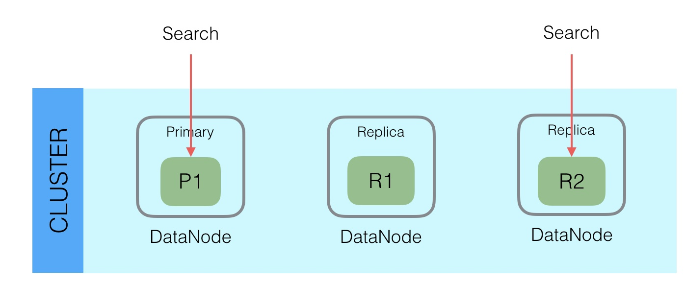
在上图中，该Shard有1个Primary和2个Replica Node，当查询的时候，从三个节点中根据Request中的preference参数选择一个节点查询。preference可以设置_local，_primary，_replica以及其他选项。如果选择了primary，则每次查询都是直接查询Primary，可以保证每次查询都是最新的。如果设置了其他参数，那么可能会查询到R1或者R2，这时候就有可能查询不到最新的数据。
PS: 上述代码逻辑在OperationRouting.Java的searchShards方法中。
接下来看一下，Elasticsearch中的查询是如何支持分布式的。
Elasticsearch中通过分区实现分布式，数据写入的时候根据_routing规则将数据写入某一个Shard中，这样就能将海量数据分布在多个Shard以及多台机器上，已达到分布式的目标。这样就导致了查询的时候，潜在数据会在当前index的所有的Shard中，所以Elasticsearch查询的时候需要查询所有Shard，同一个Shard的Primary和Replica选择一个即可，查询请求会分发给所有Shard，每个Shard中都是一个独立的查询引擎，比如需要返回Top 10的结果，那么每个Shard都会查询并且返回Top 10的结果，然后在Client Node里面会接收所有Shard的结果，然后通过优先级队列二次排序，选择出Top 10的结果返回给用户。
这里有一个问题就是请求膨胀，用户的一个搜索请求在Elasticsearch内部会变成Shard个请求，这里有个优化点，虽然是Shard个请求，但是这个Shard个数不一定要是当前Index中的Shard个数，只要是当前查询相关的Shard即可，这个需要基于业务和请求内容优化，通过这种方式可以优化请求膨胀数。
Elasticsearch中的查询主要分为两类，Get请求：通过ID查询特定Doc；Search请求：通过Query查询匹配Doc。
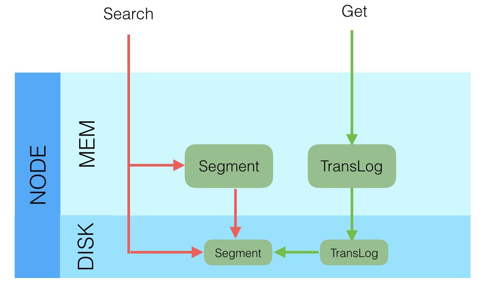
PS:上图中内存中的Segment是指刚Refresh Segment，但是还没持久化到磁盘的新Segment，而非从磁盘加载到内存中的Segment。
对于Search类请求，查询的时候是一起查询内存和磁盘上的Segment，最后将结果合并后返回。这种查询是近实时（Near Real Time）的，主要是由于内存中的Index数据需要一段时间后才会刷新为Segment。
对于Get类请求，查询的时候是先查询内存中的TransLog，如果找到就立即返回，如果没找到再查询磁盘上的TransLog，如果还没有则再去查询磁盘上的Segment。这种查询是实时（Real Time）的。这种查询顺序可以保证查询到的Doc是最新版本的Doc，这个功能也是为了保证NoSQL场景下的实时性要求。
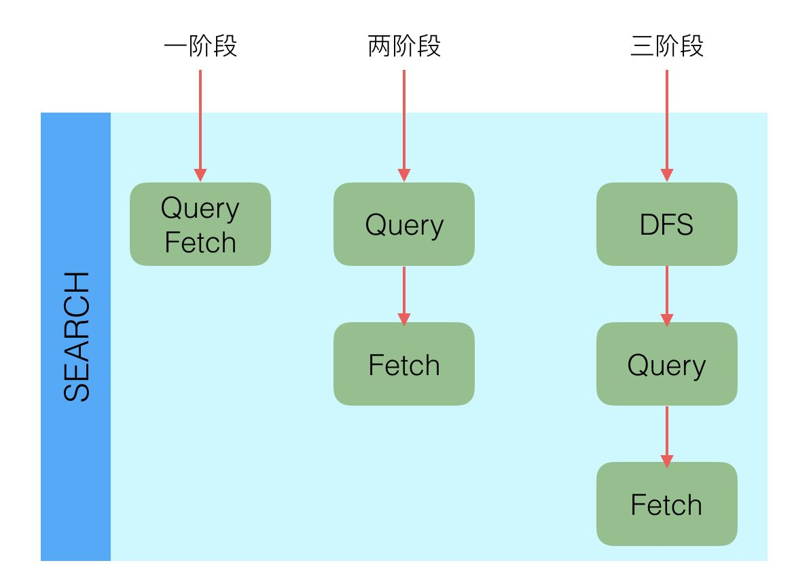
所有的搜索系统一般都是两阶段查询，第一阶段查询到匹配的DocID，第二阶段再查询DocID对应的完整文档，这种在Elasticsearch中称为query_then_fetch，还有一种是一阶段查询的时候就返回完整Doc，在Elasticsearch中称作query_and_fetch，一般第二种适用于只需要查询一个Shard的请求。
除了一阶段，两阶段外，还有一种三阶段查询的情况。搜索里面有一种算分逻辑是根据TF（Term Frequency）和DF（Document Frequency）计算基础分，但是Elasticsearch中查询的时候，是在每个Shard中独立查询的，每个Shard中的TF和DF也是独立的，虽然在写入的时候通过_routing保证Doc分布均匀，但是没法保证TF和DF均匀，那么就有会导致局部的TF和DF不准的情况出现，这个时候基于TF、DF的算分就不准。为了解决这个问题，Elasticsearch中引入了DFS查询，比如DFS_query_then_fetch，会先收集所有Shard中的TF和DF值，然后将这些值带入请求中，再次执行query_then_fetch，这样算分的时候TF和DF就是准确的，类似的有DFS_query_and_fetch。这种查询的优势是算分更加精准，但是效率会变差。另一种选择是用BM25代替TF/DF模型。
在新版本Elasticsearch中，用户没法指定DFS_query_and_fetch和query_and_fetch，这两种只能被Elasticsearch系统改写。
Elasticsearch查询流程
Elasticsearch中的大部分查询，以及核心功能都是Search类型查询，上面我们了解到查询分为一阶段，二阶段和三阶段，这里我们就以最常见的的二阶段查询为例来介绍查询流程。

Client Node
Client Node 也包括了前面说过的Parse Request，这里就不再赘述了，接下来看一下其他的部分。
- Get Remove Cluster Shard
判断是否需要跨集群访问，如果需要，则获取到要访问的Shard列表。
- Get Search Shard Iterator
获取当前Cluster中要访问的Shard，和上一步中的Remove Cluster Shard合并，构建出最终要访问的完整Shard列表。
这一步中，会根据Request请求中的参数从Primary Node和多个Replica Node中选择出一个要访问的Shard。
- For Every Shard:Perform
遍历每个Shard，对每个Shard执行后面逻辑。
- Send Request To Query Shard
将查询阶段请求发送给相应的Shard。
- Merge Docs
上一步将请求发送给多个Shard后，这一步就是异步等待返回结果，然后对结果合并。这里的合并策略是维护一个Top N大小的优先级队列，每当收到一个shard的返回，就把结果放入优先级队列做一次排序，直到所有的Shard都返回。
翻页逻辑也是在这里，如果需要取Top 30~ Top 40的结果，这个的意思是所有Shard查询结果中的第30到40的结果，那么在每个Shard中无法确定最终的结果，每个Shard需要返回Top 40的结果给Client Node，然后Client Node中在merge docs的时候，计算出Top 40的结果，最后再去除掉Top 30，剩余的10个结果就是需要的Top 30~ Top 40的结果。
上述翻页逻辑有一个明显的缺点就是每次Shard返回的数据中包括了已经翻过的历史结果，如果翻页很深，则在这里需要排序的Docs会很多，比如Shard有1000，取第9990到10000的结果，那么这次查询，Shard总共需要返回1000 * 10000，也就是一千万Doc，这种情况很容易导致OOM。
另一种翻页方式是使用search_after，这种方式会更轻量级，如果每次只需要返回10条结构，则每个Shard只需要返回search_after之后的10个结果即可，返回的总数据量只是和Shard个数以及本次需要的个数有关，和历史已读取的个数无关。这种方式更安全一些，推荐使用这种。
如果有aggregate，也会在这里做聚合，但是不同的aggregate类型的merge策略不一样，具体的可以在后面的aggregate文章中再介绍。
- Send Request To Fetch Shard
选出Top N个Doc ID后发送给这些Doc ID所在的Shard执行Fetch Phase，最后会返回Top N的Doc的内容。
Query Phase
接下来我们看第一阶段查询的步骤：
- Create Search Context
创建Search Context，之后Search过程中的所有中间状态都会存在Context中，这些状态总共有50多个，具体可以查看DefaultSearchContext或者其他SearchContext的子类。
- Parse Query
解析Query的Source，将结果存入Search Context。这里会根据请求中Query类型的不同创建不同的Query对象，比如TermQuery、FuzzyQuery等，最终真正执行TermQuery、FuzzyQuery等语义的地方是在Lucene中。
这里包括了dfsPhase、queryPhase和fetchPhase三个阶段的preProcess部分，只有queryPhase的preProcess中有执行逻辑，其他两个都是空逻辑，执行完preProcess后，所有需要的参数都会设置完成。
由于Elasticsearch中有些请求之间是相互关联的，并非独立的，比如scroll请求，所以这里同时会设置Context的生命周期。
同时会设置lowLevelCancellation是否打开，这个参数是集群级别配置，同时也能动态开关，打开后会在后面执行时做更多的检测，检测是否需要停止后续逻辑直接返回。
- Get From Cache
判断请求是否允许被Cache，如果允许，则检查Cache中是否已经有结果，如果有则直接读取Cache，如果没有则继续执行后续步骤，执行完后，再将结果加入Cache。
- Add Collectors
Collector主要目标是收集查询结果，实现排序，对自定义结果集过滤和收集等。这一步会增加多个Collectors，多个Collector组成一个List。
- FilteredCollector：先判断请求中是否有Post Filter，Post Filter用于Search，Agg等结束后再次对结果做Filter，希望Filter不影响Agg结果。如果有Post Filter则创建一个FilteredCollector，加入Collector List中。
- PluginInMultiCollector：判断请求中是否制定了自定义的一些Collector，如果有，则创建后加入Collector List。
- MinimumScoreCollector：判断请求中是否制定了最小分数阈值，如果指定了，则创建MinimumScoreCollector加入Collector List中，在后续收集结果时，会过滤掉得分小于最小分数的Doc。
- EarlyTerminatingCollector：判断请求中是否提前结束Doc的Seek，如果是则创建EarlyTerminatingCollector，加入Collector List中。在后续Seek和收集Doc的过程中，当Seek的Doc数达到Early Terminating后会停止Seek后续倒排链。
- CancellableCollector：判断当前操作是否可以被中断结束，比如是否已经超时等，如果是会抛出一个TaskCancelledException异常。该功能一般用来提前结束较长的查询请求，可以用来保护系统。
- EarlyTerminatingSortingCollector：如果Index是排序的，那么可以提前结束对倒排链的Seek，相当于在一个排序递减链表上返回最大的N个值，只需要直接返回前N个值就可以了。这个Collector会加到Collector List的头部。EarlyTerminatingSorting和EarlyTerminating的区别是，EarlyTerminatingSorting是一种对结果无损伤的优化，而EarlyTerminating是有损的，人为掐断执行的优化。
- TopDocsCollector：这个是最核心的Top N结果选择器，会加入到Collector List的头部。TopScoreDocCollector和TopFieldCollector都是TopDocsCollector的子类，TopScoreDocCollector会按照固定的方式算分，排序会按照分数+doc id的方式排列，如果多个doc的分数一样，先选择doc id小的文档。而TopFieldCollector则是根据用户指定的Field的值排序。
- lucene::search
这一步会调用Lucene中IndexSearch的search接口，执行真正的搜索逻辑。每个Shard中会有多个Segment，每个Segment对应一个LeafReaderContext，这里会遍历每个Segment，到每个Segment中去Search结果，然后计算分数。
搜索里面一般有两阶段算分，第一阶段是在这里算的，会对每个Seek到的Doc都计算分数，为了减少CPU消耗，一般是算一个基本分数。这一阶段完成后，会有个排序。然后在第二阶段，再对Top 的结果做一次二阶段算分，在二阶段算分的时候会考虑更多的因子。二阶段算分在后续操作中。
具体请求，比如TermQuery、WildcardQuery的查询逻辑都在Lucene中，后面会有专门文章介绍。
- rescore
根据Request中是否包含rescore配置决定是否进行二阶段排序，如果有则执行二阶段算分逻辑，会考虑更多的算分因子。二阶段算分也是一种计算机中常见的多层设计，是一种资源消耗和效率的折中。
Elasticsearch中支持配置多个Rescore，这些rescore逻辑会顺序遍历执行。每个rescore内部会先按照请求参数window选择出Top window的doc，然后对这些doc排序，排完后再合并回原有的Top 结果顺序中。
- suggest::execute()
如果有推荐请求，则在这里执行推荐请求。如果请求中只包含了推荐的部分，则很多地方可以优化。推荐不是今天的重点，这里就不介绍了，后面有机会再介绍。
- aggregation::execute()
如果含有聚合统计请求，则在这里执行。Elasticsearch中的aggregate的处理逻辑也类似于Search，通过多个Collector来实现。在Client Node中也需要对aggregation做合并。aggregate逻辑更复杂一些，就不在这里赘述了，后面有需要就再单独开文章介绍。
上述逻辑都执行完成后，如果当前查询请求只需要查询一个Shard，那么会直接在当前Node执行Fetch Phase。
Fetch Phase
Elasticsearch作为搜索系统时，或者任何搜索系统中，除了Query阶段外，还会有一个Fetch阶段，这个Fetch阶段在数据库类系统中是没有的，是搜索系统中额外增加的阶段。搜索系统中额外增加Fetch阶段的原因是搜索系统中数据分布导致的，在搜索中，数据通过routing分Shard的时候，只能根据一个主字段值来决定，但是查询的时候可能会根据其他非主字段查询，那么这个时候所有Shard中都可能会存在相同非主字段值的Doc，所以需要查询所有Shard才能不会出现结果遗漏。同时如果查询主字段，那么这个时候就能直接定位到Shard，就只需要查询特定Shard即可，这个时候就类似于数据库系统了。另外，数据库中的二级索引又是另外一种情况，但类似于查主字段的情况，这里就不多说了。
基于上述原因，第一阶段查询的时候并不知道最终结果会在哪个Shard上，所以每个Shard中管都需要查询完整结果，比如需要Top 10，那么每个Shard都需要查询当前Shard的所有数据，找出当前Shard的Top 10，然后返回给Client Node。如果有100个Shard，那么就需要返回100 * 10 = 1000个结果，而Fetch Doc内容的操作比较耗费IO和CPU，如果在第一阶段就Fetch Doc，那么这个资源开销就会非常大。所以，一般是当Client Node选择出最终Top N的结果后，再对最终的Top N读取Doc内容。通过增加一点网络开销而避免大量IO和CPU操作，这个折中是非常划算的。
Fetch阶段的目的是通过DocID获取到用户需要的完整Doc内容。这些内容包括了DocValues，Store，Source，Script和Highlight等，具体的功能点是在SearchModule中注册的，系统默认注册的有：
- ExplainFetchSubPhase
- DocValueFieldsFetchSubPhase
- ScriptFieldsFetchSubPhase
- FetchSourceSubPhase
- VersionFetchSubPhase
- MatchedQueriesFetchSubPhase
- HighlightPhase
- ParentFieldSubFetchPhase
除了系统默认的8种外，还有通过插件的形式注册自定义的功能，这些SubPhase中最重要的是Source和Highlight，Source是加载原文，Highlight是计算高亮显示的内容片断。
上述多个SubPhase会针对每个Doc顺序执行，可能会产生多次的随机IO，这里会有一些优化方案，但是都是针对特定场景的，不具有通用性。
Fetch Phase执行完后，整个查询流程就结束了。
参考文档
https://www.elastic.co/guide/cn/elasticsearch/guide/current/distrib-read.html
https://www.elastic.co/guide/cn/elasticsearch/guide/current/distrib-multi-doc.html
https://www.elastic.co/guide/cn/elasticsearch/guide/current/inside-a-shard.html
https://zhuanlan.zhihu.com/p/34674517
https://zhuanlan.zhihu.com/p/34669354
https://www.cnblogs.com/yangwenbo214/p/9831479.html
17 优化：ElasticSearch性能优化详解
硬件配置优化
升级硬件设备配置一直都是提高服务能力最快速有效的手段，在系统层面能够影响应用性能的一般包括三个因素：CPU、内存和 IO，可以从这三方面进行 ES 的性能优化工作。
CPU 配置
一般说来，CPU 繁忙的原因有以下几个：
- 线程中有无限空循环、无阻塞、正则匹配或者单纯的计算；
- 发生了频繁的 GC；
- 多线程的上下文切换；
大多数 Elasticsearch 部署往往对 CPU 要求不高。因此，相对其它资源，具体配置多少个（CPU）不是那么关键。你应该选择具有多个内核的现代处理器，常见的集群使用 2 到 8 个核的机器。如果你要在更快的 CPUs 和更多的核数之间选择，选择更多的核数更好。多个内核提供的额外并发远胜过稍微快一点点的时钟频率。
内存配置
如果有一种资源是最先被耗尽的，它可能是内存。排序和聚合都很耗内存，所以有足够的堆空间来应付它们是很重要的。即使堆空间是比较小的时候，也能为操作系统文件缓存提供额外的内存。因为 Lucene 使用的许多数据结构是基于磁盘的格式，Elasticsearch 利用操作系统缓存能产生很大效果。
64 GB 内存的机器是非常理想的，但是 32 GB 和 16 GB 机器也是很常见的。少于8 GB 会适得其反（你最终需要很多很多的小机器），大于 64 GB 的机器也会有问题。
由于 ES 构建基于 lucene，而 lucene 设计强大之处在于 lucene 能够很好的利用操作系统内存来缓存索引数据，以提供快速的查询性能。lucene 的索引文件 segements 是存储在单文件中的，并且不可变，对于 OS 来说，能够很友好地将索引文件保持在 cache 中，以便快速访问；因此，我们很有必要将一半的物理内存留给 lucene；另一半的物理内存留给 ES（JVM heap）。
内存分配
当机器内存小于 64G 时，遵循通用的原则，50% 给 ES，50% 留给 lucene。
当机器内存大于 64G 时，遵循以下原则：
- 如果主要的使用场景是全文检索，那么建议给 ES Heap 分配 4~32G 的内存即可；其它内存留给操作系统，供 lucene 使用（segments cache），以提供更快的查询性能。
- 如果主要的使用场景是聚合或排序，并且大多数是 numerics，dates，geo_points 以及 not_analyzed 的字符类型，建议分配给 ES Heap 分配 4~32G 的内存即可，其它内存留给操作系统，供 lucene 使用，提供快速的基于文档的聚类、排序性能。
- 如果使用场景是聚合或排序，并且都是基于 analyzed 字符数据，这时需要更多的 heap size，建议机器上运行多 ES 实例，每个实例保持不超过 50% 的 ES heap 设置（但不超过 32 G，堆内存设置 32 G 以下时，JVM 使用对象指标压缩技巧节省空间），50% 以上留给 lucene。
禁止 swap
禁止 swap，一旦允许内存与磁盘的交换，会引起致命的性能问题。可以通过在 elasticsearch.yml 中 bootstrap.memory_lock: true，以保持 JVM 锁定内存，保证 ES 的性能。
GC 设置
老的版本中官方文档 中推荐默认设置为：Concurrent-Mark and Sweep（CMS），给的理由是当时G1 还有很多 BUG。
原因是：已知JDK 8附带的HotSpot JVM的早期版本存在一些问题，当启用G1GC收集器时，这些问题可能导致索引损坏。受影响的版本早于JDK 8u40随附的HotSpot版本。来源于官方说明
实际上如果你使用的JDK8较高版本，或者JDK9+，我推荐你使用G1 GC； 因为我们目前的项目使用的就是G1 GC，运行效果良好，对Heap大对象优化尤为明显。修改jvm.options文件，将下面几行:
-XX:+UseConcMarkSweepGC
-XX:CMSInitiatingOccupancyFraction=75
-XX:+UseCMSInitiatingOccupancyOnly
更改为
-XX:+UseG1GC
-XX:MaxGCPauseMillis=50
其中 -XX:MaxGCPauseMillis是控制预期的最高GC时长，默认值为200ms，如果线上业务特性对于GC停顿非常敏感，可以适当设置低一些。但是 这个值如果设置过小，可能会带来比较高的cpu消耗。
G1对于集群正常运作的情况下减轻G1停顿对服务时延的影响还是很有效的，但是如果是你描述的GC导致集群卡死，那么很有可能换G1也无法根本上解决问题。 通常都是集群的数据模型或者Query需要优化。
磁盘
硬盘对所有的集群都很重要，对大量写入的集群更是加倍重要（例如那些存储日志数据的）。硬盘是服务器上最慢的子系统，这意味着那些写入量很大的集群很容易让硬盘饱和，使得它成为集群的瓶颈。
在经济压力能承受的范围下，尽量使用固态硬盘（SSD）。固态硬盘相比于任何旋转介质（机械硬盘，磁带等），无论随机写还是顺序写，都会对 IO 有较大的提升。
- 如果你正在使用 SSDs，确保你的系统 I/O 调度程序是配置正确的。当你向硬盘写数据，I/O 调度程序决定何时把数据实际发送到硬盘。大多数默认 *nix 发行版下的调度程序都叫做 cfq（完全公平队列）。
- 调度程序分配时间片到每个进程。并且优化这些到硬盘的众多队列的传递。但它是为旋转介质优化的：机械硬盘的固有特性意味着它写入数据到基于物理布局的硬盘会更高效。
- 这对 SSD 来说是低效的，尽管这里没有涉及到机械硬盘。但是，deadline 或者 noop 应该被使用。deadline 调度程序基于写入等待时间进行优化，noop 只是一个简单的 FIFO 队列。
这个简单的更改可以带来显著的影响。仅仅是使用正确的调度程序，我们看到了 500 倍的写入能力提升。
如果你使用旋转介质（如机械硬盘），尝试获取尽可能快的硬盘（高性能服务器硬盘，15k RPM 驱动器）。
使用 RAID0 是提高硬盘速度的有效途径，对机械硬盘和 SSD 来说都是如此。没有必要使用镜像或其它 RAID 变体，因为 Elasticsearch 在自身层面通过副本，已经提供了备份的功能，所以不需要利用磁盘的备份功能，同时如果使用磁盘备份功能的话，对写入速度有较大的影响。
最后，避免使用网络附加存储（NAS）。人们常声称他们的 NAS 解决方案比本地驱动器更快更可靠。除却这些声称，我们从没看到 NAS 能配得上它的大肆宣传。NAS 常常很慢，显露出更大的延时和更宽的平均延时方差，而且它是单点故障的。
索引优化设置
索引优化主要是在 Elasticsearch 的插入层面优化，Elasticsearch 本身索引速度其实还是蛮快的，具体数据，我们可以参考官方的 benchmark 数据。我们可以根据不同的需求，针对索引优化。
批量提交
当有大量数据提交的时候，建议采用批量提交（Bulk 操作）；此外使用 bulk 请求时，每个请求不超过几十M，因为太大会导致内存使用过大。
比如在做 ELK 过程中，Logstash indexer 提交数据到 Elasticsearch 中，batch size 就可以作为一个优化功能点。但是优化 size 大小需要根据文档大小和服务器性能而定。
像 Logstash 中提交文档大小超过 20MB，Logstash 会将一个批量请求切分为多个批量请求。
如果在提交过程中，遇到 EsRejectedExecutionException 异常的话，则说明集群的索引性能已经达到极限了。这种情况，要么提高服务器集群的资源，要么根据业务规则，减少数据收集速度，比如只收集 Warn、Error 级别以上的日志。
增加 Refresh 时间间隔
为了提高索引性能，Elasticsearch 在写入数据的时候，采用延迟写入的策略，即数据先写到内存中，当超过默认1秒（index.refresh_interval）会进行一次写入操作，就是将内存中 segment 数据刷新到磁盘中，此时我们才能将数据搜索出来，所以这就是为什么 Elasticsearch 提供的是近实时搜索功能，而不是实时搜索功能。
如果我们的系统对数据延迟要求不高的话，我们可以通过延长 refresh 时间间隔，可以有效地减少 segment 合并压力，提高索引速度。比如在做全链路跟踪的过程中，我们就将 index.refresh_interval 设置为30s，减少 refresh 次数。再如，在进行全量索引时，可以将 refresh 次数临时关闭，即 index.refresh_interval 设置为-1，数据导入成功后再打开到正常模式，比如30s。
在加载大量数据时候可以暂时不用 refresh 和 repliccas，index.refresh_interval 设置为-1，index.number_of_replicas 设置为0。
相关原理，请参考[原理：ES原理之索引文档流程详解]
修改 index_buffer_size 的设置
索引缓冲的设置可以控制多少内存分配给索引进程。这是一个全局配置，会应用于一个节点上所有不同的分片上。
indices.memory.index_buffer_size: 10%
indices.memory.min_index_buffer_size: 48mb
indices.memory.index_buffer_size 接受一个百分比或者一个表示字节大小的值。默认是10%，意味着分配给节点的总内存的10%用来做索引缓冲的大小。这个数值被分到不同的分片（shards）上。如果设置的是百分比，还可以设置 min_index_buffer_size （默认 48mb）和 max_index_buffer_size（默认没有上限）。
修改 translog 相关的设置
一是控制数据从内存到硬盘的操作频率，以减少硬盘 IO。可将 sync_interval 的时间设置大一些。默认为5s。
index.translog.sync_interval: 5s
也可以控制 tranlog 数据块的大小，达到 threshold 大小时，才会 flush 到 lucene 索引文件。默认为512m。
index.translog.flush_threshold_size: 512mb
translog我们在[原理：ES原理之索引文档流程详解]也有介绍。
注意 _id 字段的使用
_id 字段的使用，应尽可能避免自定义 _id，以避免针对 ID 的版本管理；建议使用 ES 的默认 ID 生成策略或使用数字类型 ID 做为主键。
注意 _all 字段及 _source 字段的使用
_all 字段及 _source 字段的使用，应该注意场景和需要，_all 字段包含了所有的索引字段，方便做全文检索，如果无此需求，可以禁用；_source 存储了原始的 document 内容，如果没有获取原始文档数据的需求，可通过设置 includes、excludes 属性来定义放入 _source 的字段。
合理的配置使用 index 属性
合理的配置使用 index 属性，analyzed 和 not_analyzed，根据业务需求来控制字段是否分词或不分词。只有 groupby 需求的字段，配置时就设置成 not_analyzed，以提高查询或聚类的效率。
减少副本数量
Elasticsearch 默认副本数量为3个，虽然这样会提高集群的可用性，增加搜索的并发数，但是同时也会影响写入索引的效率。
在索引过程中，需要把更新的文档发到副本节点上，等副本节点生效后在进行返回结束。使用 Elasticsearch 做业务搜索的时候，建议副本数目还是设置为3个，但是像内部 ELK 日志系统、分布式跟踪系统中，完全可以将副本数目设置为1个。
查询方面优化
Elasticsearch 作为业务搜索的近实时查询时，查询效率的优化显得尤为重要。
路由优化
当我们查询文档的时候，Elasticsearch 如何知道一个文档应该存放到哪个分片中呢？它其实是通过下面这个公式来计算出来的。
shard = hash(routing) % number_of_primary_shards
routing 默认值是文档的 id，也可以采用自定义值，比如用户 ID。
不带 routing 查询
在查询的时候因为不知道要查询的数据具体在哪个分片上，所以整个过程分为2个步骤：
- 分发：请求到达协调节点后，协调节点将查询请求分发到每个分片上。
- 聚合：协调节点搜集到每个分片上查询结果，再将查询的结果进行排序，之后给用户返回结果。
带 routing 查询
查询的时候，可以直接根据 routing 信息定位到某个分配查询，不需要查询所有的分配，经过协调节点排序。
向上面自定义的用户查询，如果 routing 设置为 userid 的话，就可以直接查询出数据来，效率提升很多。
Filter VS Query
尽可能使用过滤器上下文（Filter）替代查询上下文（Query）
- Query：此文档与此查询子句的匹配程度如何？
- Filter：此文档和查询子句匹配吗？
Elasticsearch 针对 Filter 查询只需要回答「是」或者「否」，不需要像 Query 查询一样计算相关性分数，同时Filter结果可以缓存。
深度翻页
在使用 Elasticsearch 过程中，应尽量避免大翻页的出现。
正常翻页查询都是从 from 开始 size 条数据，这样就需要在每个分片中查询打分排名在前面的 from+size 条数据。协同节点收集每个分配的前 from+size 条数据。协同节点一共会受到 N*(from+size) 条数据，然后进行排序，再将其中 from 到 from+size 条数据返回出去。如果 from 或者 size 很大的话，导致参加排序的数量会同步扩大很多，最终会导致 CPU 资源消耗增大。
可以通过使用 Elasticsearch scroll 和 scroll-scan 高效滚动的方式来解决这样的问题。
也可以结合实际业务特点，文档 id 大小如果和文档创建时间是一致有序的，可以以文档 id 作为分页的偏移量，并将其作为分页查询的一个条件。
脚本（script）合理使用
我们知道脚本使用主要有 3 种形式，内联动态编译方式、_script 索引库中存储和文件脚本存储的形式；一般脚本的使用场景是粗排，尽量用第二种方式先将脚本存储在 _script 索引库中，起到提前编译，然后通过引用脚本 id，并结合 params 参数使用，即可以达到模型（逻辑）和数据进行了分离，同时又便于脚本模块的扩展与维护。
Cache的设置及使用
QueryCache: ES查询的时候，使用filter查询会使用query cache, 如果业务场景中的过滤查询比较多，建议将querycache设置大一些，以提高查询速度。
indices.queries.cache.size： 10%（默认），可设置成百分比，也可设置成具体值，如256mb。
当然也可以禁用查询缓存（默认是开启）， 通过index.queries.cache.enabled：false设置。
FieldDataCache: 在聚类或排序时，field data cache会使用频繁，因此，设置字段数据缓存的大小，在聚类或排序场景较多的情形下很有必要，可通过indices.fielddata.cache.size：30% 或具体值10GB来设置。但是如果场景或数据变更比较频繁，设置cache并不是好的做法，因为缓存加载的开销也是特别大的。ShardRequestCache: 查询请求发起后，每个分片会将结果返回给协调节点(Coordinating Node), 由协调节点将结果整合。 如果有需求，可以设置开启; 通过设置index.requests.cache.enable: true来开启。 不过，shard request cache只缓存hits.total, aggregations, suggestions类型的数据，并不会缓存hits的内容。也可以通过设置indices.requests.cache.size: 1%（默认）来控制缓存空间大小。
更多查询优化经验
- query_string 或 multi_match的查询字段越多， 查询越慢。可以在mapping阶段，利用copy_to属性将多字段的值索引到一个新字段，multi_match时，用新的字段查询。
- 日期字段的查询， 尤其是用now 的查询实际上是不存在缓存的，因此， 可以从业务的角度来考虑是否一定要用now, 毕竟利用query cache 是能够大大提高查询效率的。
- 查询结果集的大小不能随意设置成大得离谱的值， 如query.setSize不能设置成 Integer.MAX_VALUE， 因为ES内部需要建立一个数据结构来放指定大小的结果集数据。
- 避免层级过深的聚合查询， 层级过深的aggregation , 会导致内存、CPU消耗，建议在服务层通过程序来组装业务，也可以通过pipeline的方式来优化。
- 复用预索引数据方式来提高AGG性能：
如通过 terms aggregations 替代 range aggregations， 如要根据年龄来分组，分组目标是: 少年（14岁以下） 青年（14-28） 中年（29-50） 老年（51以上）， 可以在索引的时候设置一个age_group字段，预先将数据进行分类。从而不用按age来做range aggregations, 通过age_group字段就可以了。
通过开启慢查询配置定位慢查询
不论是数据库还是搜索引擎，对于问题的排查，开启慢查询日志是十分必要的，ES 开启慢查询的方式有多种，但是最常用的是调用模板 API 进行全局设置：
PUT /_template/{TEMPLATE_NAME}
{
"template":"{INDEX_PATTERN}",
"settings" : {
"index.indexing.slowlog.level": "INFO",
"index.indexing.slowlog.threshold.index.warn": "10s",
"index.indexing.slowlog.threshold.index.info": "5s",
"index.indexing.slowlog.threshold.index.debug": "2s",
"index.indexing.slowlog.threshold.index.trace": "500ms",
"index.indexing.slowlog.source": "1000",
"index.search.slowlog.level": "INFO",
"index.search.slowlog.threshold.query.warn": "10s",
"index.search.slowlog.threshold.query.info": "5s",
"index.search.slowlog.threshold.query.debug": "2s",
"index.search.slowlog.threshold.query.trace": "500ms",
"index.search.slowlog.threshold.fetch.warn": "1s",
"index.search.slowlog.threshold.fetch.info": "800ms",
"index.search.slowlog.threshold.fetch.debug": "500ms",
"index.search.slowlog.threshold.fetch.trace": "200ms"
},
"version" : 1
}
PUT {INDEX_PAATERN}/_settings
{
"index.indexing.slowlog.level": "INFO",
"index.indexing.slowlog.threshold.index.warn": "10s",
"index.indexing.slowlog.threshold.index.info": "5s",
"index.indexing.slowlog.threshold.index.debug": "2s",
"index.indexing.slowlog.threshold.index.trace": "500ms",
"index.indexing.slowlog.source": "1000",
"index.search.slowlog.level": "INFO",
"index.search.slowlog.threshold.query.warn": "10s",
"index.search.slowlog.threshold.query.info": "5s",
"index.search.slowlog.threshold.query.debug": "2s",
"index.search.slowlog.threshold.query.trace": "500ms",
"index.search.slowlog.threshold.fetch.warn": "1s",
"index.search.slowlog.threshold.fetch.info": "800ms",
"index.search.slowlog.threshold.fetch.debug": "500ms",
"index.search.slowlog.threshold.fetch.trace": "200ms"
}
这样，在日志目录下的慢查询日志就会有输出记录必要的信息了。
{CLUSTER_NAME}_index_indexing_slowlog.log
{CLUSTER_NAME}_index_search_slowlog.log
数据结构优化
基于 Elasticsearch 的使用场景，文档数据结构尽量和使用场景进行结合，去掉没用及不合理的数据。
尽量减少不需要的字段
如果 Elasticsearch 用于业务搜索服务，一些不需要用于搜索的字段最好不存到 ES 中，这样即节省空间，同时在相同的数据量下，也能提高搜索性能。
避免使用动态值作字段，动态递增的 mapping，会导致集群崩溃；同样，也需要控制字段的数量，业务中不使用的字段，就不要索引。控制索引的字段数量、mapping 深度、索引字段的类型，对于 ES 的性能优化是重中之重。
以下是 ES 关于字段数、mapping 深度的一些默认设置：
index.mapping.nested_objects.limit: 10000
index.mapping.total_fields.limit: 1000
index.mapping.depth.limit: 20
Nested Object vs Parent/Child
尽量避免使用 nested 或 parent/child 的字段，能不用就不用；nested query 慢，parent/child query 更慢，比 nested query 慢上百倍；因此能在 mapping 设计阶段搞定的（大宽表设计或采用比较 smart 的数据结构），就不要用父子关系的 mapping。
如果一定要使用 nested fields，保证 nested fields 字段不能过多，目前 ES 默认限制是 50。因为针对 1 个 document，每一个 nested field，都会生成一个独立的 document，这将使 doc 数量剧增，影响查询效率，尤其是 JOIN 的效率。
index.mapping.nested_fields.limit: 50
| 对比 | Nested Object | Parent/Child |
|---|---|---|
| 优点 | 文档存储在一起，因此读取性高 | 父子文档可以独立更新，互不影响 |
| 缺点 | 更新父文档或子文档时需要更新整个文档 | 为了维护 join 关系，需要占用部分内存，读取性能较差 |
| 场景 | 子文档偶尔更新，查询频繁 | 子文档更新频繁 |
选择静态映射，非必需时，禁止动态映射
尽量避免使用动态映射，这样有可能会导致集群崩溃，此外，动态映射有可能会带来不可控制的数据类型，进而有可能导致在查询端出现相关异常，影响业务。
此外，Elasticsearch 作为搜索引擎时，主要承载 query 的匹配和排序的功能，那数据的存储类型基于这两种功能的用途分为两类，一是需要匹配的字段，用来建立倒排索引对 query 匹配用，另一类字段是用做粗排用到的特征字段，如 ctr、点击数、评论数等等。
document 模型设计
对于 MySQL，我们经常有一些复杂的关联查询。在 es 里该怎么玩儿，es 里面的复杂的关联查询尽量别用，一旦用了性能一般都不太好。
最好是先在 Java 系统里就完成关联，将关联好的数据直接写入 es 中。搜索的时候，就不需要利用 es 的搜索语法来完成 join 之类的关联搜索了。
document 模型设计是非常重要的，很多操作，不要在搜索的时候才想去执行各种复杂的乱七八糟的操作。es 能支持的操作就那么多，不要考虑用 es 做一些它不好操作的事情。如果真的有那种操作，尽量在 document 模型设计的时候，写入的时候就完成。另外对于一些太复杂的操作，比如 join/nested/parent-child 搜索都要尽量避免，性能都很差的。
集群架构设计
合理的部署 Elasticsearch 有助于提高服务的整体可用性。
主节点、数据节点和协调节点分离
Elasticsearch 集群在架构拓朴时，采用主节点、数据节点和负载均衡节点分离的架构，在 5.x 版本以后，又可将数据节点再细分为“Hot-Warm”的架构模式。
Elasticsearch 的配置文件中有 2 个参数，node.master 和 node.data。这两个参数搭配使用时，能够帮助提供服务器性能。
主（master）节点
配置 node.master:true 和 node.data:false，该 node 服务器只作为一个主节点，但不存储任何索引数据。我们推荐每个集群运行3 个专用的 master 节点来提供最好的弹性。使用时，你还需要将 discovery.zen.minimum_master_nodes setting 参数设置为 2，以免出现脑裂（split-brain）的情况。用 3 个专用的 master 节点，专门负责处理集群的管理以及加强状态的整体稳定性。因为这 3 个 master 节点不包含数据也不会实际参与搜索以及索引操作，在 JVM 上它们不用做相同的事，例如繁重的索引或者耗时，资源耗费很大的搜索。因此不太可能会因为垃圾回收而导致停顿。因此，master 节点的 CPU，内存以及磁盘配置可以比 data 节点少很多的。
数据（data）节点
配置 node.master:false 和 node.data:true，该 node 服务器只作为一个数据节点，只用于存储索引数据，使该 node 服务器功能单一，只用于数据存储和数据查询，降低其资源消耗率。
在 Elasticsearch 5.x 版本之后，data 节点又可再细分为“Hot-Warm”架构，即分为热节点（hot node）和暖节点（warm node）。
hot 节点：
hot 节点主要是索引节点（写节点），同时会保存近期的一些频繁被查询的索引。由于进行索引非常耗费 CPU 和 IO，即属于 IO 和 CPU 密集型操作，建议使用 SSD 的磁盘类型，保持良好的写性能；我们推荐部署最小化的 3 个 hot 节点来保证高可用性。根据近期需要收集以及查询的数据量，可以增加服务器数量来获得想要的性能。
将节点设置为 hot 类型需要 elasticsearch.yml 如下配置：
node.attr.box_type: hot
如果是针对指定的 index 操作，可以通过 settings 设置 index.routing.allocation.require.box_type: hot 将索引写入 hot 节点。
warm 节点：
这种类型的节点是为了处理大量的，而且不经常访问的只读索引而设计的。由于这些索引是只读的，warm 节点倾向于挂载大量磁盘（普通磁盘）来替代 SSD。内存、CPU 的配置跟 hot 节点保持一致即可；节点数量一般也是大于等于 3 个。
将节点设置为 warm 类型需要 elasticsearch.yml 如下配置：
node.attr.box_type: warm
同时，也可以在 elasticsearch.yml 中设置 index.codec:best_compression 保证 warm 节点的压缩配置。
当索引不再被频繁查询时，可通过 index.routing.allocation.require.box_type:warm，将索引标记为 warm，从而保证索引不写入 hot 节点，以便将 SSD 磁盘资源用在刀刃上。一旦设置这个属性，ES 会自动将索引合并到 warm 节点。
协调（coordinating）节点
协调节点用于做分布式里的协调，将各分片或节点返回的数据整合后返回。该节点不会被选作主节点，也不会存储任何索引数据。该服务器主要用于查询负载均衡。在查询的时候，通常会涉及到从多个 node 服务器上查询数据，并将请求分发到多个指定的 node 服务器，并对各个 node 服务器返回的结果进行一个汇总处理，最终返回给客户端。在 ES 集群中，所有的节点都有可能是协调节点，但是，可以通过设置 node.master、node.data、node.ingest 都为 false 来设置专门的协调节点。需要较好的 CPU 和较高的内存。
- node.master:false和node.data:true，该node服务器只作为一个数据节点，只用于存储索引数据，使该node服务器功能单一，只用于数据存储和数据查询，降低其资源消耗率。
- node.master:true和node.data:false，该node服务器只作为一个主节点，但不存储任何索引数据，该node服务器将使用自身空闲的资源，来协调各种创建索引请求或者查询请求，并将这些请求合理分发到相关的node服务器上。
- node.master:false和node.data:false，该node服务器即不会被选作主节点，也不会存储任何索引数据。该服务器主要用于查询负载均衡。在查询的时候，通常会涉及到从多个node服务器上查询数据，并将请求分发到多个指定的node服务器，并对各个node服务器返回的结果进行一个汇总处理，最终返回给客户端。
关闭 data 节点服务器中的 http 功能
针对 Elasticsearch 集群中的所有数据节点，不用开启 http 服务。将其中的配置参数这样设置，http.enabled:false，同时也不要安装 head, bigdesk, marvel 等监控插件，这样保证 data 节点服务器只需处理创建/更新/删除/查询索引数据等操作。
http 功能可以在非数据节点服务器上开启，上述相关的监控插件也安装到这些服务器上，用于监控 Elasticsearch 集群状态等数据信息。这样做一来出于数据安全考虑，二来出于服务性能考虑。
一台服务器上最好只部署一个 node
一台物理服务器上可以启动多个 node 服务器节点（通过设置不同的启动 port），但一台服务器上的 CPU、内存、硬盘等资源毕竟有限，从服务器性能考虑，不建议一台服务器上启动多个 node 节点。
集群分片设置
ES 一旦创建好索引后，就无法调整分片的设置，而在 ES 中，一个分片实际上对应一个 lucene 索引，而 lucene 索引的读写会占用很多的系统资源，因此，分片数不能设置过大；所以，在创建索引时，合理配置分片数是非常重要的。一般来说，我们遵循一些原则：
控制每个分片占用的硬盘容量不超过 ES 的最大 JVM 的堆空间设置（一般设置不超过 32 G，参考上面的 JVM 内存设置原则），因此，如果索引的总容量在 500 G 左右，那分片大小在 16 个左右即可；当然，最好同时考虑原则 2。 考虑一下 node 数量，一般一个节点有时候就是一台物理机，如果分片数过多，大大超过了节点数，很可能会导致一个节点上存在多个分片，一旦该节点故障，即使保持了 1 个以上的副本，同样有可能会导致数据丢失，集群无法恢复。所以，一般都设置分片数不超过节点数的 3 倍。
18 大厂实践：腾讯万亿级 Elasticsearch 技术实践
一、ES 在腾讯的海量规模背景

先来看看 ES 在腾讯的主要应用场景。ES 是一个实时的分布式搜索分析引擎，目前很多用户对 ES 的印象还是准实时，实际上在 6.8 版本之后官方文档已经将 near real-time 改为了 real-time： "Elasticsearch provides real-time search and analytics for all types of data." ES 在写入完毕刷新之前，是可以通过 getById 的方式实时获取文档的，只是在刷新之前 FST 还没有构建，还不能提供搜索的能力。 目前 ES 在腾讯主要应用在三个方面：
- 搜索服务： 例如像腾讯文档基于 ES 做全文检索，我们的电商客户拼多多、蘑菇街等大量的商品搜索都是基于 ES。
- 日志分析： 这个是 ES 应用最广泛的领域，支持全栈的日志分析，包括各种应用日志、数据库日志、用户行为日志、网络数据、安全数据等等。ES 拥有一套完整的日志解决方案，可以秒级实现从采集到展示。
- 时序分析： 典型的场景是监控数据分析，比如云监控，整个腾讯云的监控都是基于 ES 的。此外还包括物联网场景，也有大量的时序数据。时序数据的特点是写入吞吐量特别高，ES 支持的同时也提供了丰富的多维统计分析算子。
当然除了上面的场景之外，ES 本身在站内搜索、安全、APM 等领域也有广泛的应用。
目前 ES 在腾讯公有云、专有云以及内部云上面均有提供服务，可以广泛的满足公司内外客户的业务需求。公有云上的使用场景非常丰富，专有云主要实现标准化交付和自动化运维，腾讯内部云上的 ES 都是 PB 级的超大规模集群。
二、痛点与挑战
在这些丰富的应用场景，以及海量的规模背景下，我们也遇到了很多的痛点与挑战。主要覆盖在可用性、性能、成本以及扩展性方面。

- 可用性： 最常见的问题是节点因高负载 OOM，或者整个集群因高负载而雪崩。这些痛点使我们很难保障 SLA，尤其是在搜索场景， 可用性要求 4 个 9 以上。
- 性能： 搜索场景一般要求平响延时低于 20 毫秒，查询毛刺低于 100 毫秒。在分析场景，海量数据下，虽然实时性要求没那么高，但请求响应时间决定了用户体验，资源消耗决定了性能边界。
- 成本： 很多用户都比较关注 ES 的存储成本，因为 ES 确实数据类型较多，压缩比比较低，存储成本比较高，但是优化的空间还是很大的。另外还包括内存成本，ES 有大量的索引数据需要加载到内存提供高性能的搜索能力。那么对于日志、监控等海量场景，成本的挑战就更大。
- 扩展性： 日志、时序等场景，往往索引会按周期滚动，长周期会产生大量的索引和分片，超大规模集群甚至有几十上百万的分片、千级节点的需求。而目前原生版本 ES 只能支持到万级分片、百级节点。随着大数据领域的飞速发展，ES 最终是要突破 TB 的量级，跨越到 PB 的量级，扩展性就成为了主要的瓶颈与挑战。
三、腾讯 ES 内核优化剖析
ES 使用姿势、参数调优等在社区有很多的案例和经验可以借鉴，但很多的痛点和挑战是无法通过简单的调优来解决的，这个时候就需要从内核层面做深度的优化，来不断完善这个优秀的开源产品。接下来就是本次分享的核心部分，我们来看看腾讯是如何在内核层面对 ES 做优化的。

可用性优化
首先介绍可用性优化部分。总体来说，原生版本在可用性层面有三个层面的问题：
- 系统健壮性不足： 高压力下集群雪崩，主要原因是内存资源不足。负载不均会导致部分节点压力过载，节点 OOM。我们在这个层面的方案主要是优化服务限流和节点均衡策略。
- 容灾方案欠缺： ES 本身提供副本机制提升数据安全性，对于多可用区容灾还是需要云平台额外实现。即使有副本机制，甚至有跨集群复制（CCR），但还是不能阻挡用户误操作导致的数据删除，所以还需要额外提供低成本的备份回挡能力。
- 内核 Bug： 我们修复了 Master 任务堵塞、分布式死锁、滚动重启速度慢等一系列内核可用性相关的问题，并及时提供新版本给用户升级。
接下来针对用户在可用性层面常遇到的两类问题展开分析。一类是高并发请求压垮集群，另一类是单个大查询打挂节点。
高并发请求压垮集群

先来看第一类场景，高并发请求压垮集群。例如早期我们内部一个日志集群，写入量一天突增 5 倍，集群多个节点 Old GC 卡住脱离集群，集群 RED，写入停止，这个痛点确实有点痛。我们对挂掉的节点做了内存分析，发现大部分内存是被反序列化前后的写入请求占用。我们来看看这些写入请求是堆积在什么位置。

ES high level 的写入流程，用户的写入请求先到达其中一个数据节点，我们称之为数据节点。然后由该协调节点将请求转发给主分片所在节点进行写入，主分片写入完毕再由主分片转发给从分片写入，最后返回给客户端写入结果。右边是更细节的写入流程，而我们从堆栈中看到的写入请求堆积的位置就是在红色框中的接入层，节点挂掉的根因是协调节点的接入层内存被打爆。
找到了问题的原因，接下来介绍我们的优化方案。

针对这种高并发场景，我们的优化方案是服务限流。除了要能控制并发请求数量，还要能精准的控制内存资源，因为内存资源不足是主要的矛盾。另外通用性要强，能作用于各个层级实现全链限流。
限流方案，很多数据库使用场景会采用从业务端或者独立的 proxy 层配置相关的业务规则，做资源预估等方式进行限流。这种方式适应能力弱，运维成本高，而且业务端很难准确的预估资源消耗。
原生版本本身有限流策略，是基于请求数的漏桶策略，通过队列加线程池的方式实现。线程池大小决定的了处理并发度，处理不完放到队列，队列放不下则拒绝请求。但是单纯的基于请求数的限流不能控制资源使用量，而且只作用于分片级子请求的传输层，对于我们前面分析的接入层无法起到有效的保护作用。原生版本也有内存熔断策略，但是在协调节点接入层并没有做限制。
我们的优化方案是基于内存资源的漏桶策略。我们将节点 JVM 内存作为漏桶的资源，当内存资源足够的时候，请求可以正常处理，当内存使用量到达一定阈值的时候分区间阶梯式平滑限流。例如图中浅黄色的区间限制写入，深黄色的区间限制查询，底部红色部分作为预留 buffer，预留给处理中的请求、merge 等操作，以保证节点内存的安全性。

限流方案里面有一个挑战是，我们如何才能实现平滑限流？因为采用单一的阈值限流很容易出现请求抖动，例如请求一上来把内存打上去马上触发限流，而放开一点点请求又会涌进来把内存打上去。我们的方案是设置了高低限流阈值区间，在这个区间中，基于余弦变换实现请求数和内存资源之间的平滑限流。当内存资源足够的时候，请求通过率 100%，当内存到达限流区间逐步上升的时候，请求通过率随之逐步下降。而当内存使用量下降的时候，请求通过率也会逐步上升，不会一把放开。通过实际测试，平滑的区间限流能在高压力下保持稳定的写入性能。
我们基于内存资源的区间平滑限流策略是对原生版本基于请求数漏桶策略的有效补充，并且作用范围更广，覆盖协调节点、数据节点的接入层和传输层，并不会替代原生的限流方案。

单个大查询打挂节点
接下来介绍单个大查询打挂节点的场景。例如我们在分析场景，做多层嵌套聚合，有时候请求返回的结果集比较大，那么这个时候极有可能这一个请求就会将节点打挂。我们对聚合查询流程进行分析，请求到达协调节点之后，会拆分为分片级子查询请求给目标分片所在数据节点进行子聚合，最后协调节点收集到完整的分片结果后进行归并、聚合、排序等操作。这里的主要问题点是，协调节点大量汇聚结果反序列化后内存膨胀，以及二次聚合产生新的结果集打爆内存。

针对上面单个大查询的问题，下面介绍我们的优化方案。优化方案的要点是内存膨胀预估加流式检查。 我们先来看下原生方案，原生版本是直接限制最大返回结果桶数，默认一万，超过则请求返回异常。这种方式面临的挑战是，在分析场景结果数十万、百万是常态，默认一万往往不够，调整不灵活，调大了内存可能还是会崩掉，小了又不能满足业务需求。
我们的优化方案主要分为两个阶段：
- 第一阶段：在协调节点接收数据节点返回的响应结果反序列化之前做内存膨胀预估，基于接收到的网络 byte 流大小做膨胀预估，如果当前 JVM 内存使用量加上响应结果预估的使用量超过阈值则直接熔断请求。
- 第二阶段：在协调节点 reduce 过程中，流式检查桶数，每增加固定数量的桶（默认 1024 个）检查一次内存，如果超限则直接熔断。流式检查的逻辑在数据节点子聚合的过程同样生效。
这样用户不再需要关心最大桶数，只要内存足够就能最大化地满足业务需求。不足之处是大请求还是被拒掉了，牺牲了用户的查询体验，但是我们可以通过官方已有的 batch reduce 的方式缓解，就是当有 100 个分片子结果的时候，每收到部分就先做一次聚合，这样能降低单次聚合的内存开销。上面流式聚合的整体方案已经提交给官方并合并了，将在最近的 7.7.0 版本中发布。
前面介绍了两种比较典型的用户常遇到的可用性问题。接下来对整个可用性优化做一个总结。

首先我们结合自研的优化方案和原生的方案实现了系统性的全链路限流。左图中黄色部分为自研优化，其它为原生方案。覆盖执行引擎层、传输层和接入层。另外我们对内存也做了相关的优化，内存利用率优化主要是针对写入场景，例如单条文档字段数过多上千个，每个字段值在写入过程中都会申请固定大小的 buffer，字段数过多的时候内存浪费严重，优化方案主要是实现弹性的内存 buffer。内存回收策略，这里不是指 GC 策略，主要是对于有些例如读写异常的请求及时进行内存回收。JVM GC 债务管理主要是评估 JVM Old GC 时长和正常工作时长的比例来衡量 JVM 的健康情况，特殊情况会重启 JVM 以防止长时间 hang死。
可用性优化效果，我们将公有云的 ES 集群整体可用性提升至 4 个 9，内存利用率提升 30%，高压力场景稳定性有大幅提升，基本能保证节点不会 OOM，集群不会雪崩。
下面部分是我们可用性优化相关的 PR。除了前面介绍的协调节点流式检查和内存膨胀预估以外，还包括单个查询内存限制，这个也很有用，因为有些场景如果单个查询太大会影响其它所有的请求。以及滚动重启速度优化，大集群单个节点的重启时间从 10 分钟降至 1 分钟以内，这个优化在 7.5 版本已经被合并了。如果大家遇到大集群滚动重启效率问题可以关注。
性能优化
接下来介绍性能优化。
性能优化的场景主要分为写入和查询。写入的代表场景包括日志、监控等海量时序数据场景，一般能达到千万级吞吐。带 id 的写入性能衰减一倍，因为先要查询记录是否存在。查询包含搜索场景和分析场景，搜索服务主要是高并发，低延时。聚合分析主要以大查询为主，内存、CPU 开销高。
我们看下性能的影响面，左半部分硬件资源和系统调优一般是用户可以直接掌控的，比如资源不够扩容，参数深度调优等。右半部分存储模型和执行计划涉及到内核优化，用户一般不容易直接调整。接下来我们重点介绍一下这两部分的优化。

存储模型优化
首先是存储模型优化。我们知道 ES 底层 Lucene 是基于 LSM Tree 的数据文件。原生默认的合并策略是按文件大小相似性合并，默认一次固定合并 10 个文件，近似分层合并。这种合并方式的最大优点是合并高效，可以快速降低文件数；主要问题是数据不连续，这样会导致我们在查询的时候文件裁剪的能力很弱，比如查询最近一小时的数据，很有可能一小时的文件被分别合并到了几天前的文件中去了，导致需要遍历的文件增加了。
业内典型的解决数据连续性的合并策略，比如以 Cassandra、HBase 为代表的基于时间窗口的合并策略，优点是数据按时间序合并，查询高效，且可以支持表内 TTL；不足是限制只能是时序场景，而且文件大小可能不一致，从而影响合并效率。还有一类是以 LevelDB、RocksDB 为代表的分层合并，一层一组有序，每次抽取部分数据向下层合并，优点是查询高效，但是写放大比较严重，相同的数据可能会被多次合并，影响写入吞吐。
最后是我们的优化合并策略。我们的目标是为了提升数据连续性、收敛文件数量，提升文件的裁剪能力来提高查询性能。我们实现的策略主要是按时间序分层合并，每层文件之间按创建时间排序，除了第一层外，都按照时间序和目标大小进行合并，不固定每次合并文件数量，这样保证了合并的高效性。对于少量的未合并的文件以及冷分片文件，我们采用持续合并的策略，将超过默认五分钟不再写入的分片进行持续合并，并控制合并并发和范围，以降低合并开销。
通过对合并策略的优化，我们将搜索场景的查询性能提升了 40%。
执行引擎的优化
前面介绍了底层文件的存储模型优化，我们再来向上层看看执行引擎的优化。

我们拿一个典型的场景来进行分析。ES 里面有一种聚合叫 Composite 聚合大家可能都比较了解，这个功能是在 6.5 版本正式 GA 发布的。它的目的是为了支持多字段的嵌套聚合，类似 MySQL 的 group by 多个字段；另外可以支持流式聚合，即以翻页的形式分批聚合结果。用法就像左边贴的查询时聚合操作下面指定 composite 关键字，并指定一次翻页的长度，和 group by 的字段列表。那么每次拿到的聚合结果会伴随着一个 after key 返回，下一次查询拿着这个 after key 就可以查询下一页的结果。
那么它的实现原理是怎样的呢？我们先来看看原生的方案。比如这里有两个字段的文档，field1 和 field2，第一列是文档 id 。我们按照这两个字段进行 composite 聚合，并设定一次翻页的 size 是 3。具体实现是利用一个固定 size 的大顶堆，size 就是翻页的长度，全量遍历一把所有文档迭代构建这个基于大顶堆的聚合结果，如右图中的 1 号序列所示，最后返回这个大顶堆并将堆顶作为 after key。第二次聚合的时候，同样的全量遍历一把文档，但会加上过滤条件排除不符合 after key 的文档，如右图中 2 号序列所示。
很显然这里面存在性能问题，因为每次拉取结果都需要全量遍历一遍所有文档，并未实现真正的翻页。接下来我们提出优化方案。
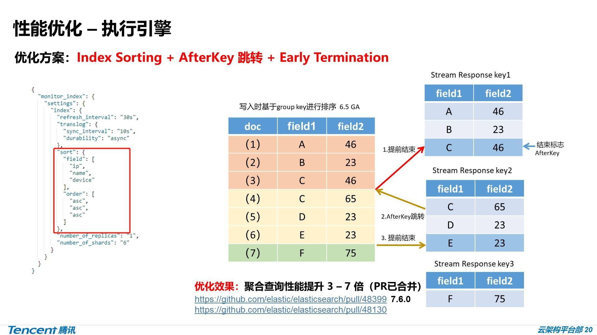
我们的优化方案主要是利用 index sorting 实现 after key 跳转以及提前结束（early termination）。 数据有序才能实现真正的流式聚合，index sorting 也是在 6.5 版本里面引入的，可以支持文档按指定字段排序。但遗憾的是聚合查询并没有利用数据有序性。我们可以进行优化，此时大顶堆我们仍然保留，我们只需要按照文档的顺序提取指定 size 的文档数即可马上返回，因为数据有序。下一次聚合的时候，我们可以直接根据请求携带的 after key 做跳转，直接跳转到指定位置继续向后遍历指定 size 的文档数即可返回。这样避免了每次翻页全量遍历，大幅提升查询性能。这里有一个挑战点，假设数据的顺序和用户查询的顺序不一致优化还能生效吗？实际可以的，逆序场景不能实现 after key 跳转因为 lucene 底层不能支持文档反向遍历，但提前结束的优化仍然生效，仍然可以大幅提升效率。这个优化方案我们是和官方研发协作开发的，因为我们在优化的同时，官方也在优化，但我们考虑的更全面覆盖了数据顺序和请求顺序不一致的优化场景，最终我们和官方一起将方案进行了整合。该优化方案已经在 7.6 合并，大家可以试用体验。
前面从底层的存储模型到上层的执行引擎分别举例剖析了优化，实际上我们在性能层面还做了很多的优化。从底层的存储模型到执行引擎，到优化器，到上层的缓存策略基本都有覆盖。下图中左边是优化项，中间是优化效果，右边是有代表性的优化的 PR 列表。
这里简单再介绍一下其它的 PR 优化，中间这个 translog 刷新过程中锁的粗化优化能将整体写入性能提升 20%；这个 lucene 层面的文件裁剪优化，它能将带 id 写入场景性能提升一倍，当然查询也是，因为带 id 的写入需要先根据 id 查询文档是否存在，它的优化主要是在根据 id 准备遍历查询一个 segment 文件的时候，能快速根据这个 segment 所统计的最大最小值进行裁剪，如果不在范围则快速裁剪跳过，避免遍历文档；最下面的一个 PR 是缓存策略的优化，能避免一些开销比较大的缓存，大幅的降低查询毛刺。
上面这些性能优化项在我们腾讯云的 ES 版本中均有合入，大家可以试用体验。
成本优化
接下来我们再看成本优化。在日志、时序等大规模数据场景下，集群的 CPU、内存、磁盘的成本占比是 1 比 4 比 8。例如一般 16 核 64GB，2-5 TB 磁盘节点的成本占比大概是这个比例。因此成本的主要瓶颈在于磁盘和内存。
成本优化的主要目标是存储成本和内存成本。
存储成本
我们先来看下存储成本。

我们先来看一个场景，整个腾讯云监控是基于 ES 的，单个集群平均写入千万每秒，业务需要保留至少半年的数据供查询。我们按照这个吞吐来计算成本，1000 万 QPS 乘以时间乘以单条文档平均大小再乘以主从两个副本总共大约 14 PB 存储，大约需要 1500 台热机型物理机。这显然远远超出了业务成本预算，那我们如何才能既满足业务需求又能实现低成本呢？
来看下我们的优化方案，首先我们对业务数据访问频率进行调研，发现最近的数据访问频率较高，例如最近 5 分钟的，一小时的，一天的，几天的就比较少了，超过一个月的就更少了，历史数据偏向于统计分析。
首先我们可以通过冷热分离，把冷数据放到 HDD 来降低成本，同时利用官方提供的索引生命周期管理来搬迁数据，冷数据盘一般比较大我们还要利用多盘策略来提高吞吐和数据容灾能力。最后将超冷的数据冷备到腾讯云的对象存储 COS 上，冷备成本非常低，1GB 一个月才一毛多。
上面这些我们都可以从架构层面进行优化。是否还有其它优化点呢？基于前面分析的数据访问特征，历史数据偏向统计分析，我们提出了 Rollup 方案。Rollup 的目的是对历史数据降低精度，来大幅降低存储成本。我们通过预计算来释放原始细粒度的数据，例如秒级的数据聚合成小时级，小时级聚合成天级。这样对于用户查询时间较长的跨度报表方便展示，查询几天的秒级数据太细没法看。另外可以大幅降低存储成本，同时可以提升查询性能。
我们在 17 年的时候就实现了 Rollup 的方案并投入给了腾讯云监控使用，当然目前官方也出了 Rollup 方案，目前功能还在体验中。
下面介绍一下我们最新的 Rollup 方案的要点。

总体来说 Rollup 优化方案主要是基于流式聚合加查询剪枝结合分片级并发来实现其高效性。流式聚合和查询剪枝的优化我们前面在性能优化部分已经介绍了，我们新的 Rollup 也利用了这些优化，这里不再展开。下面介绍一下分片级并发，及并发自动控制策略。
正常的聚合查询，需要将请求发送给每个分片进行子聚合，在到协调节点做汇聚，两次聚合多路归并。我们通过给数据添加 routing 的方式让相同的对象落到相同的分片内，这样就只需要一层聚合，因为分片数据独立，多个数据对象可以实现分片级并发。 另外我们通过对 Rollup 任务资源预估，并感知集群的负载压力来自动控制并发度，这样对集群整体的影响能控制在一定的范围。右边的图是我们的优化效果，某个统计指标 30 天的存储量，天级的只需要 13 GB，小时级的只需要 250 GB，细粒度的会多一些，总体存储量下降了将近 10 倍。单个集群 150 台左右物理机即可搞定，成本缩减 10 倍。整体写入开销 rollup 资源消耗在 10% 以下。
内存成本优化
前面是存储成本优化，下面介绍内存成本优化。
我们通过对线上集群进行分析，发现很多场景堆内内存使用率很高，而磁盘的使用率比较低。堆内存使用率为什么这么高呢？其中的 FST 即倒排索引占据了绝大部分堆内内存，而且这部分是常驻内存的。每 10 TB 的磁盘 FST 的内存消耗大概在 10 GB 到 15 GB 左右。
我们能不能对 FST 这种堆内占用比较大的内存做优化？我们的想法是把它移至堆外（off-heap），按需加载，提升堆内内存利用率，降低 GC 开销，提升单个节点管理磁盘的能力。
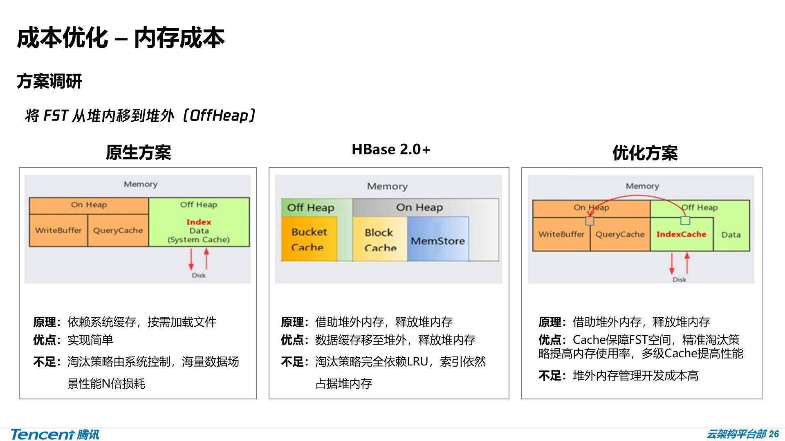
我们来看下 off-heap 相关的方案。首先原生版本目前也实现了 off-heap，方案是将 FST 对象放到 MMAP 中管理，这种方式实现简单，我们早期也采用了这种方式实现，但是由于 MMAP 属于 page cache 可能被系统回收掉，导致读盘操作，从而带来性能的 N 倍损耗，容易产生查询毛刺。
HBase 2.0 版本中也实现了 off-heap，在堆外建立了 cache，脱离系统缓存，但只是把数据放到堆外，索引仍然在堆内，而且淘汰策略完全依赖 LRU 策略，冷数据不能及时的清理。
我们的优化方案也是在堆外建立 cache，保证 FST 的空间不受系统影响，另外我们会实现更精准的淘汰策略，提高内存使用率，再加上多级 cache 的管理模式来提升性能。这种方式实现起来比较复杂但收益还是很明显的，下面我们来看一下详细的实现。
我们的方案是通过 LRU cache + 零拷贝 + 两级 cache 的方式实现的。首先 LRU cache 是建立在堆外，堆内有访问 FST 需求的时候从磁盘加载到 cache 中。由于 Lucene 默认的访问 FST 的方式是一个堆内的 buffer，前期我们采用了直接从堆外拷贝到堆内的 buffer 方式实现，压测发现查询性能损耗 20%，主要是堆外向堆内 copy 占了大头。
因此我们有了第二阶段优化，将 Lucene 访问 FST 的方式进行了改造，buffer 里面不直接存放 FST，而存放堆外对象的一个指针，这样实现了堆内和堆外之间的零拷贝，这里的零拷贝和我们说的 linux 中的用户态和内核态的零拷贝是两个概念。这样实现后我们压测发现查询性能还是有 7%的损耗，相较于堆内的 FST 场景。我们有没办法做到极致呢？
我们通过分析发现，这 7% 的损耗主要是根据 key 去查找堆外对象的过程，包括计算 hash，数据校验等。我们第三阶段的优化就是利用 Java 的弱引用建立第二层轻量级缓存。弱引用指向堆外的地址，只要有请求使用，这个 key 就不会被回收可以重复利用而无需重新获取。一旦不在使用，这个 key 就会被 GC 回收掉，并回收掉堆外对象指针。问题来了，堆外对象指针回收之后我们怎么清理堆外这部分内存呢？让其 LRU 淘汰？这样显然会浪费一部分内存空间。最好的办法是在堆内对象地址回收的时候直接回收堆外对象，但是 Java 没有析构的概念。这里我们利用了弱引用的 Reference Queue，当对象要被 GC 回收的时候会将对象指向的堆外内存清理掉，这样完美解决了堆外内存析构的问题，保证了堆外内存的精准淘汰，提升内存利用率。最后通过压测我们发现性能基本和原生方案 FST 在堆内的场景持平。
下面是内存优化相关的效果和收益：

通过我们的内存优化后，内存开销、数据管理能力、GC 优势明显，性能持平略有优势。单个 FST 堆内占用只需要 100 个 byte 左右即 cache key 的大小。单节点磁盘管理能力，32GB heap 能到 50 TB 左右，相较原生版本 5-10 TB（需要深度调优）有 10 倍的提升。利用官方提供的 esrally 进行性能压测，发现堆内存使用量有大幅的下降，GC 时长也有缩减，性能基本持平。
扩展性优化
接下来是最后一块内核优化内容，扩展性优化。

我们先来看一下场景。ES 的元数据管理模型是，master 管理元数据，其它所有节点同步元数据。我们以建索引流程为例，来看看元数据的同步流程。首先是 master 分配分片，然后产生 diff 的元数据，发送给其它节点，等待大多数 master 节点返回，master 发送元数据应用请求，其它节点开始应用元数据，并根据新旧元数据推导出各自节点的分片创建任务。
这里面的瓶颈点主要有以下几点：
- Mater 节点在分配分片的时候，需要做一遍元数据的正反向转换。我们知道路由信息是由分片到节点的映射，而我们在做分片分配的时候需要节点到分片的映射，需要知道每个节点上的分片分布。分片分配完毕又需要将节点到分片的映射转换回来，因为我们元数据只发布分片到节点的映射。这个转换过程涉及多次的全量遍历，大规模分片性能存在瓶颈。
- 在每次索引创建的过程中，会涉及多次的元数据同步，在大规模的节点数场景，会出现同步瓶颈，上千节点，部分节点假设有一点网络抖动或 Old GC 可能导致同步失败。
基于上面的瓶颈，目前原生版本只能支持大约 3-5 万分片，性能已经到达极限，创建索引基本到达 30 秒+ 甚至分钟级。节点数只能到 500 左右基本是极限了。
为此，我们提出了扩展性优化方案。
主要的优化内容包括：
- 分片创建任务式定向下发： 对于创建分片导致的元数据同步瓶颈，我们采用任务下发的方式，定向下发分片创建任务，避免多次全节点元数据同步。
- 元数据增量维护： 分配分片的过程中多次正反向遍历，我们采用增量化的数据结构维护的方式，避免全量的遍历。
- 统计缓存策略： 统计接口的性能，我们采用缓存策略避免多次重复的统计计算，大幅降低资源开销。 最终我们将集群的分片数扩展到百万级，节点数扩展到千级，新建索引基本稳定在 5 秒以下，统计接口秒级响应。
前面就是所有的内核优化的内容。ES 是一款很优秀的开源大数据产品，我们将持续的建设。我们对公司内外提供了完整的托管平台，对 ES 内核各个层面做了系统性的增强优化，助力 Elastic Stack 在大数据生态中覆盖更多的场景，发展的更好。
四、开源贡献及未来规划

在腾讯内部，我们实现了 ES 产品开源协同，共同优化完善 ES，避免不同的团队重复踩坑。同时我们也将优秀的方案积极的贡献给社区，和官方及社区的 ES 爱好者们共同推动 ES 的发展。以腾讯 ES 内核研发为代表的团队，截至目前我们共提交了二十多个 PR，其中有 70% 被合并，共有 6 位 ES/Lucene 的 contributor。
未来，我们将持续的优化 ES，包括可用性，性能和成本等方面。可用性方面我们会加强 ES 的故障自愈能力，朝着自动驾驶的目标发展；性能方面，搜索场景 ES 是绝对的王者，多维分析领域还有很多可优化的地方，我们希望能进一步扩展 ES 在分析领域的应用场景。成本方面，存储与计算分离正在研发中，基于腾讯自研的共享文件系统 CFS，到时会进一步缩减成本，提升性能。
资源链接
线上 PPT 的链接：https://elasticsearch.cn/slides/259
分享过程中相关问题的答疑：https://elasticsearch.cn/articl
腾讯Elasticsearch海量规模背后的内核优化剖析 https://zhuanlan.zhihu.com/p/139725905
腾讯万亿级 Elasticsearch 内存效率提升技术解密 https://zhuanlan.zhihu.com/p/146083622
腾讯万亿级 Elasticsearch 技术解密 https://zhuanlan.zhihu.com/p/99184436
19 资料：Awesome Elasticsearch
General
Elastic Stack
- Elasticsearch official website
- Logstash is a data pipeline that helps you process logs and other event data from a variety of systems
- Kibana is a data analysis tool that helps to visualize your data; Kibana Manual docs
- beats is the platform for building lightweight, open source data shippers for many types of data you want to enrich with Logstash, search and analyze in Elasticsearch, and visualize in Kibana.
Books
- Deep Learning for Search - teaches you how to leverage neural networks, NLP, and deep learning techniques to improve search performance. (2019)
- Relevant Search: with applications for Solr and Elasticsearch - demystifies relevance work. Using Elasticsearch, it teaches you how to return engaging search results to your users, helping you understand and leverage the internals of Lucene-based search engines. (2016)
- Elasticsearch in Action - teaches you how to build scalable search applications using Elasticsearch (2015)
Related (awesome) lists
- frutik/awesome-search I am building e-commerce search now. Below are listed some of my build blocks
Open-source and free products, based on Elasticsearch
- Fess is an open source full featured Enterprise Search, with a web-crawler
- Yelp/elastalert is a modular flexible rules based alerting system written in Python
- etsy/411 - an Alert Management Web Application https://demo.fouroneone.io (credentials: user/user)
- appbaseio/mirage is a 🔎 GUI for composing Elasticsearch queries
- exceptionless/Exceptionless is an error (exceptions) collecting and reporting server with client bindings for a various programming languages
- searchkit/searchkit is a UI framework based on React to build awesome search experiences with Elasticsearch
- appbaseio/reactivemaps is a React based UI components library for building Airbnb / Foursquare like Maps
- appbaseio/reactivesearch is a library of beautiful React UI components for Elasticsearch
- appbaseio/dejavu The missing UI for Elasticsearch; landing page
- Simple File Server is an Openstack Swift compatible distributed object store that can serve and securely store billions of large and small files using minimal resources.
- logagent a log shipper to parse and ship logs to Elasticsearch including bulk indexing, disk buffers and log format detection.
- ItemsAPI simplified search API for web and mobile (based on Elasticsearch and Express.js)
- Kuzzle - An open-source backend with advanced real-time features for Web, Mobile and IoT that uses ElasticSearch as a database. (Website )
- SIAC - SIAC is an enterprise SIEM built on the ELK stack and other open-source components.
- Sentinl - Sentinl is a Kibana alerting and reporting app.
- Praeco - Elasticsearch alerting made simple
Elasticsearch developer tools and utilities
Development and debugging
- Sense (from Elastic) A JSON aware developer console to Elasticsearch; official and very powerful
- ES-mode An Emacs major mode for interacting with Elasticsearch (similar to Sense)
- Elasticsearch Cheatsheet Examples for the most used queries, API and settings for all major version of Elasticsearch
- Elasticstat CLI tool displaying monitoring informations like htop
- Elastic for Visual Studio Code An extension for developing Elasticsearch queries like Kibana and Sense extention in Visual Studio Code
- Elastic Builder A Node.js implementation of the Elasticsearch DSL
- Bodybuilder A Node.js elasticsearch query body builder
- enju A Node.js elasticsearch ORM
- Peek An interactive CLI in Python that works like Kibana Console with additional features
Import and Export
- Knapsack plugin is an "swiss knife" export/import plugin for Elasticsearch
- Elasticsearch-Exporter is a command line script to import/export data from Elasticsearch to various other storage systems
- esbulk Parallel elasticsearch bulk indexing utility for the command line.
- elasticdump - tools for moving and saving indices
- elasticsearch-loader - Tool for loading common file types to elasticsearch including csv, json, and parquet
Management
- Esctl - High-level command line interface to manage Elasticsearch clusters.
- Vulcanizer - Github's open sourced cluster management library based on Elasticsearch's REST API. Comes with a high level CLI tool
Elasticsearch plugins
Cluster
- sscarduzio/elasticsearch-readonlyrest-plugin Safely expose Elasticsearch REST API directly to the public
- mobz/elasticsearch-head is a powerful and essential plugin for managing your cluster, indices and mapping
- Bigdesk - Live charts and statistics for elasticsearch cluster
- Elastic HQ - Elasticsearch cluster management console with live monitoring and beautiful UI
- Cerebro is an open source(MIT License) elasticsearch web admin tool. Supports ES 5.x
- Kopf - Another management plugin that have REST console and manual shard allocation
- Search Guard - Elasticsearch and elastic stack security and alerting for free
- ee-outliers - ee-outliers is a framework to detect outliers in events stored in an Elasticsearch cluster.
- Elasticsearch Comrade - Elasticsearch admin panel built for ops and monitoring
- elasticsearch-admin - Web administration for Elasticsearch
Other
- SIREn Join Plugin for Elasticsearch This plugin extends Elasticsearch with new search actions and a filter query parser that enables to perform a "Filter Join" between two set of documents (in the same index or in different indexes).
Integrations and SQL support
- NLPchina/elasticsearch-sql - Query elasticsearch using familiar SQL syntax. You can also use ES functions in SQL.
- elastic/elasticsearch-hadoop - Elasticsearch real-time search and analytics natively integrated with Hadoop (and Hive)
- jprante/elasticsearch-jdbc - JDBC importer for Elasticsearch
- pandasticsearch - An Elasticsearch client exposing DataFrame API
- monstache - Go daemon that syncs MongoDB to Elasticsearch in near realtime
You know, for search
- jprante/elasticsearch-plugin-bundle A plugin that consists of a compilation of useful Elasticsearch plugins related to indexing and searching documents
Kibana plugins and applications
- elastic/timelion time-series analyses application. Overview and installation guide: Timelion: The time series composer for Kibana
- Kibana Alert App for Elasticsearch - Kibana plugin with monitoring, alerting and reporting capabilities
- VulnWhisperer - VulnWhisperer is a vulnerability data and report aggregator.
- Wazuh Kibana App - A Kibana app for working with data generated by Wazuh .
- Datasweet Formula - A real time calculated metric plugin Datasweet Formula .
Kibana Visualization plugins
- nbs-system/mapster - a visualization which allows to create live event 3d maps in Kibana
- Kibana Tag Cloud Plugin - tag cloud visualization plugin based on d3-cloud plugin
- LogTrail - a plugin for Kibana to view, analyze, search and tail log events from multiple hosts in realtime with devops friendly interface inspired by Papertrail
- Analyze API - Kibana 6 application to manipulate the
_analyzeAPI graphically - kbn_network - This is a plugin developed for Kibana that displays a network node that link two fields that have been previously selected.
Discussions and social media
- /r/elasticsearch
- Elasticsearch forum
- Stackoverflow
- Books on Amazon does not fit well into this category, but worth checking out!
- TODO: Put some good twitter accounts
Tutorials
- Centralized Logging with Logstash and Kibana On Ubuntu 14.04 everything you need to now when you are creating your first Elasticsearch+Logstash+Kibana instance
- dwyl/learn-elasticsearch a getting started tutorial with a pack of valuable references
- Make Sense of your Logs: From Zero to Hero in less than an Hour! by Britta Weber demonstrates how you can build Elasticsearch + Logstash + Kibana stack to collect and discover your data
- $$ Elasticsearch 7 and Elastic Stack - liveVideo course that teaches you to search, analyze, and visualize big data on a cluster with Elasticsearch, Logstash, Beats, Kibana, and more.
Articles
System configuration
- A Useful Elasticsearch Cheat Sheet in Times of Trouble
- The definitive guide for Elasticsearch on Windows Azure
- Elasticsearch pre-flight checklist
- 9 Tips on Elasticsearch Configuration for High Performance
- Best Practices in AWS
- How to Secure Elasticsearch and Kibana with NGINX, LDAP and SSL 🔒
- Elasticsearch server on Webfaction using NGINX with basic authorization and HTTPS protocol
- Elasticsearch Guides Useful Elasticsearch guides with best practices, troubleshooting instructions for errors, tips, examples of code snippets and more.
Docker and Elasticsearch
Java tuning
- Elasticsearch Java Virtual Machine settings explained
- Tuning Garbage Collection for Mission-Critical Java Applications
- G1: One Garbage Collector To Rule Them All
- Use Lucene’s MMapDirectory on 64bit platforms, please!
- Black Magic cookbook
- G1GC Fundamentals: Lessons from Taming Garbage Collection
- JVM Garbage Collector settings investigation PDF Comparison of JVM GC
- Garbage Collection Settings for Elasticsearch Master Nodes Fine tunine your garbage collector
- Understanding G1 GC Log Format To tune and troubleshoot G1 GC enabled JVMs, one must have a proper understanding of G1 GC log format. This article walks through key things that one should know about the G1 GC log format.
How to start using G1
#ES_JAVA_OPTS=""
ES_JAVA_OPTS="-XX:-UseParNewGC -XX:-UseConcMarkSweepGC -XX:+UseG1GC"
Scalable Infrastructure and performance
- The Authoritative Guide to Elasticsearch Performance Tuning (Part 1) Part 2 Part 3
- Tuning data ingestion performance for Elasticsearch on Azure - and not only for Azure. That's a great article about Elasticsearch Performance testing by example
- Elasticsearch Indexing Performance Cheatsheet - when you plan to index large amounts of data in Elasticsearch (by Patrick Peschlow)
- Elasticsearch for Logging Elasticsearch configuration tips and tricks from Sanity
- Scaling Elasticsearch to Hundreds of Developers by Joseph Lynch @yelp
- 10 Elasticsearch metrics to watch
- Understanding Elasticsearch Performance
- Our Experience of Creating Large Scale Log Search System Using Elasticsearch - topology, separate master, data and search balancers nodes
- 📂 Elasticsearch on Azure Guidance it is 10% on Azure and 90% of a very valuable general information, tips and tricks about Elasticsearch
- How to avoid the split-brain problem in Elasticsearch
- Datadog's series about monitoring Elasticsearch performance:
- Performance Monitoring Essentials - Elasticsearch Edition
- Operator for running Elasticsearch in Kubernetes
Integrations
- Apache Hive integration
- Connecting Tableau to Elasticsearch (READ: How to query Elasticsearch with Hive SQL and Hadoop)
- mradamlacey/elasticsearch-tableau-connector
Logging
- 5 Logstash Alternatives and typical use cases
Alerts
- ElastAlert: Alerting At Scale With Elasticsearch, Part 1 by engineeringblog.yelp.com
- ElastAlert: Alerting At Scale With Elasticsearch, Part 2 by engineeringblog.yelp.com
- Elastalert: implementing rich monitoring with Elasticsearch
Time series
- Elasticsearch as a Time Series Data Store by Felix Barnsteiner
- Running derivatives on Voyager velocity data By Colin Goodheart-Smithe
- Shewhart Control Charts via Moving Averages: Part 1 - Part 2 by Zachary Tong
- Implementing a Statistical Anomaly Detector: Part 1 - Part 2 - Part 3 by Zachary Tong
Machine Learning
- Classifying images into Elasticsearch with DeepDetect (forum thread with discussion ) by Emmanuel Benazera
- Elasticsearch with Machine Learning (English translation ) by Kunihiko Kido
- Recommender System with Mahout and Elasticsearch
Use cases for Elasticsearch
- Data Infrastructure at IFTTT Elasticsearch, Kafka, Apache Spark, Redhsift, other AWS services
- OFAC compliance with Elasticsearch using AWS
- Building a Streaming Search Platform - Streaming Search on Tweets: Storm, Elasticsearch, and Redis
Other
- LogZoom, a fast and lightweight substitute for Logstash
- Graylog2/graylog2-server - Free and open source log management (based on ES)
- Fluentd vs. Logstash for OpenStack Log Management
- Building a Directory Map With ELK
- Structured logging with ELK - part 1
- Search for 😋 Emoji with Elasticsearch 🔎
- Complete Guide to the ELK Stack
- logiq - Simple WebUI Monitoring Tool for Logstash ver. 5.0 and up
- ElasticSearch Report Engine - An ElasticSearch plugin to return query results as either PDF,HTML or CSV.
- Elasticsearch Glossary - explanations of Elasticsearch terminology, including examples, common best practices and troubleshooting guides for various issues.
Videos
Overviews
- Elasticsearch for logs and metrics: A deep dive – Velocity 2016 by Sematext Developers
- Elasticsearch in action Thijs Feryn a beginner overview
- Getting Down and Dirty with ElasticSearch by Clinton Gormley
- How we scaled Raygun
- Getting started with Elasticsearch
- Speed is a Key: Elasticsearch under the Hood introduction + basic performance optimization
- $$ Pluralsight: Getting Started With Elasticsearch for .NET Developers this course will introduce users to Elasticsearch, how it works, and how to use it with .NET projects.
- $$ Complete Guide to Elasticsearch Comprehensive guide to Elasticsearch, the popular search engine built on Apache Lucene
- How Elasticsearch powers the Guardian's newsroom
- Elasticsearch Query Editor in Grafana
- Scale Your Metrics with Elasticsearch 2019 by Philipp Krenn (Elastic) optimization tips and tricks
Advanced
- #bbuzz 2015: Adrien Grand – Algorithms and data-structures that power Lucene and Elasticsearch
- Rafał Kuć - Running High Performance Fault-tolerant Elasticsearch Clusters on Docker and slides
- Working with Elasticsearch - Search, Aggregate, Analyze, and Scale Large Volume Datastores - O'Reilly Media
- End-to-end Recommender System with Spark and Elasticsearch by Nick Pentreath & Jean-François Puget. Slide deck
Code, configuration file samples and other gists
- Elasticsearch config for a write-heavy cluster - reyjrar/elasticsearch.yml
- chenryn/ESPL - Elastic Search Processing Language PEG parser sample for SPL to Elasticsearch DSL
- thomaspatzke/EQUEL an Elasticsearch QUEry Language, based on G4 grammar parser
Who is using elasticsearch?
Yelp , IFTTT , StackExchange , Raygun , Mozilla , Spotify , CERN , NASA Zalando
I want more! (Elasticsearch related resources)
Contributing
- Make sure you are about to post a valuable resource that belongs to this list
- Do NOT group ++Add and --Remove changes in same PR. Make them separate pull requests
- Use spellchecker
- All spelling and grammar corrections are welcome (except for the rule above)
- Fork this repo, do your edits, send the pull request
- Feel free to create any new sections
- Do not even try to add this repo to any awesome-awesome-* lists
20 WrapperQuery
实现方式理论基础
- Wrapper Query 官网说明
https://www.elastic.co/guide/en/elasticsearch/reference/6.4/query-dsl-wrapper-query.html
This query is more useful in the context of the Java high-level REST client or transport client to also accept queries as json formatted string. In these cases queries can be specified as a json or yaml formatted string or as a query builder (which is a available in the Java high-level REST client).
GET /_search
{
"query" : {
"wrapper": {
"query" : "eyJ0ZXJtIiA6IHsgInVzZXIiIDogIktpbWNoeSIgfX0=" // Base64 encoded string: {"term" : { "user" : "Kimchy" }}
}
}
}
- 将DSL JSON语句 转成 map
https://blog.csdn.net/qq_41370896/article/details/83658948
String dsl = "";
Map maps = (Map)JSON.parse(dsl);
maps.get("query");// dsl query string
- Java 代码
https://blog.csdn.net/tcyzhyx/article/details/84566734
https://www.jianshu.com/p/216ca70d9e62
StringBuffer dsl = new StringBuffer();
dsl.append("{\"bool\": {");
dsl.append(" \"must\": [");
dsl.append(" {");
dsl.append(" \"term\": {");
dsl.append(" \"mdid.keyword\": {");
dsl.append(" \"value\": \"2fa9d41e1af460e0d47ce36ca8a98737\"");
dsl.append(" }");
dsl.append(" }");
dsl.append(" }");
dsl.append(" ]");
dsl.append(" }");
dsl.append("}");
WrapperQueryBuilder wqb = QueryBuilders.wrapperQuery(dsl.toString());
SearchResponse searchResponse = client.prepareSearch(basicsysCodeManager.getYjzxYjxxIndex())
.setTypes(basicsysCodeManager.getYjzxYjxxType()).setQuery(wqb).setSize(10).get();
SearchHit[] hits = searchResponse.getHits().getHits();
for(SearchHit hit : hits){
String content = hit.getSourceAsString();
System.out.println(content);
}
- query + agg 应该怎么写
http://www.itkeyword.com/doc/1009692843717298639/wrapperquerybuilder-aggs-query-throwing-query-malformed-exception
"{\"query\":{\"match_all\": {}},\"aggs\":{\"avg1\":{\"avg\":{\"field\":\"age\"}}}}"
SearchSourceBuilder ssb = new SearchSourceBuilder();
// add the query part
String query ="{\"match_all\": {}}";
WrapperQueryBuilder wrapQB = new WrapperQueryBuilder(query);
ssb.query(wrapQB);
// add the aggregation part
AvgBuilder avgAgg = AggregationBuilders.avg("avg1").field("age");
ssb.aggregation(avgAgg);
实现示例
略
21 备份和迁移
方案
离线方案
- Snapshot
- Reindex
- Logstash
- ElasticSearch-dump
- ElasticSearch-Exporter
增量备份方案
- logstash
使用快照进行备份
配置信息
注册前要注意配置文件加上: elasticsearch.yml
path.repo: ["/opt/elasticsearch/backup"]
创建仓库
注册一个仓库，存放快照，记住，这里不是生成快照，只是注册一个仓库
curl -XPUT 'http://10.11.60.5:9200/_snapshot/repo_backup_1' -H 'Content-Type: application/json' -d '{
"type": "fs",
"settings": {
"location": "/opt/elasticsearch/backup",
"max_snapshot_bytes_per_sec": "20mb",
"max_restore_bytes_per_sec": "20mb",
"compress": true
}
}'
查看仓库信息:
curl -XGET 'http://10.11.60.5:9200/_snapshot/repo_backup_1?pretty'
返回内容
[root@STOR-ES elasticsearch]# curl -XGET 'http://10.11.60.5:9200/_snapshot/repo_backup_1?pretty'
{
"repo_backup_1" : {
"type" : "fs",
"settings" : {
"location" : "/opt/elasticsearch/backup",
"max_restore_bytes_per_sec" : "20mb",
"compress" : "true",
"max_snapshot_bytes_per_sec" : "20mb"
}
}
}
创建快照
curl -XPUT 'http://10.11.60.5:9200/_snapshot/repo_backup_1/snapshot_1?wait_for_completion=true&pretty' -H 'Content-Type: application/json' -d '{
"indices": "bro-2019-09-14,bro-2019-09-15,wmi-2019-09-14,wmi-2019-09-15,syslog-2019-09-14,sylog-2019-09-15",
"rename_pattern": "bro_(.+)",
"rename_replacement": "dev_bro_$1",
"ignore_unavailable": true,
"include_global_state": true
}'
执行
{
"snapshot" : {
"snapshot" : "snapshot_1",
"version_id" : 2040399,
"version" : "2.4.3",
"indices" : [ "bro-2019-09-14", "bro-2019-09-15", "wmi-2019-09-15", "syslog-2019-09-14", "wmi-2019-09-14" ],
"state" : "SUCCESS",
"start_time" : "2019-09-18T05:58:08.860Z",
"start_time_in_millis" : 1568786288860,
"end_time" : "2019-09-18T06:02:18.037Z",
"end_time_in_millis" : 1568786538037,
"duration_in_millis" : 249177,
"failures" : [ ],
"shards" : {
"total" : 25,
"failed" : 0,
"successful" : 25
}
}
}
恢复数据
方案使用场景
迁移考虑的问题
- 版本问题，从低版本到高版本数据的迁移
- 多租户的适配问题
多个工厂的数据进入不同index, 原有的数据bro-2019-09-15的数据需要进入factorycode-bro-2019-09-15
- 多次或者分批迁移数据
- 数据在迁移时候富化
- FieldMapping 和 数据信息 分离?